Ethnics
Rules
Strong attributes: List the attributes in which this ethnic excels. The player selects two of these attributes to receive a free boost.
Weak attributes: List the attributes in which this ethnic is naturally disadvantaged. The player may choose one weak attribute to voluntarily accept in order to gain one additional boost from the strong attribute list.
Birth attributes: List the variations of the secondary attributes for this ethnic. A valid set of birth attributes must have a total value of 60 or less—never exceeding this limit.
Birth particularities: This section lists all the particularities a character gains from their race. Some races share most, or even all, of these particularities — such as Humans, Elves, or Dwarves — while others differ more significantly. In some cases, a “race” is more a conceptual or semantic category than a strict biological lineage, which explains why shared traits may be limited.
Cultural particularities: This section lists all the particularities a character gains from their ethnicity. Ethnic groups belonging to the same race usually follow a shared structural pattern in how these particularities are distributed, but the nature and meaning of those particularities can differ greatly from one culture to another. This content is what truly defines the identity and role of each ethnicity. For example, Human cultures express themselves through auras, Ferals through instincts and totem affinities, while Elves commonly manifest minor innate magics (cantrips). The framework may be shared, but the expression is fundamentally different. If a character is raised within a culture other than their birth culture, they may gain the cultural particularities of their adopted culture instead. This choice is always subject to the GM's approval and should serve narrative and role-playing purposes, not mechanical optimization or min-maxing.
Skills: This section lists all skills for which the character may choose one specialty. When a character uses a skill with its chosen specialty, the sum of the dice cannot be lower than 8. If the total result of the roll is below 8, it is treated as 8 instead. Singularities trigger normally based on the actual dice faces rolled; only the final total is modified by this rule.
Human ethnics
Emperian (Cultured Folks)
 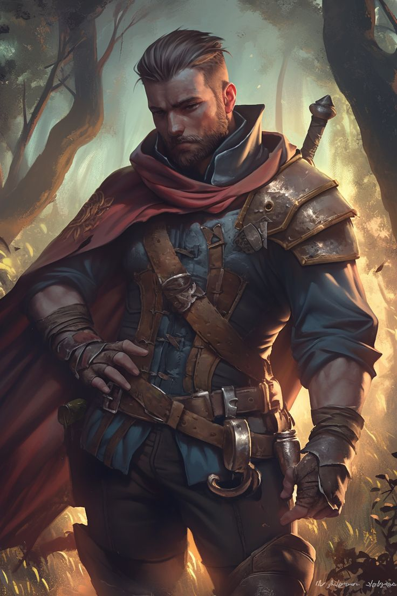
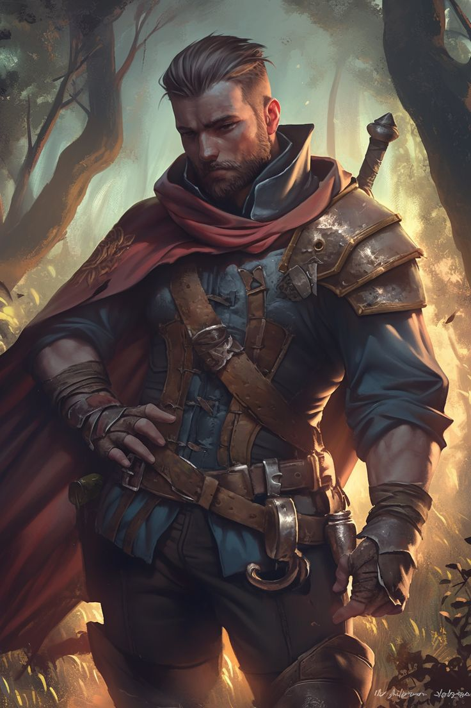

The dominant human culture of the Lowlands, coming from a society that embraces scholarship, technology, magic, and the military in equal measure.
The Emperians are a cultured and exemplary urban society known for their advancements in magic, technology, and military strategy. While they lean towards the mystical, they are equally open to integrating both scientific and combat techniques into their society. They thrive in highly developed city areas, often associated with elegance and refined lifestyles. Socially adept and politically influential, they are known for their erudition, persuasion, and craftsmanship, making them prominent figures in the upper echelons of urban society.
Skills: Erudition, Persuasion, Spellcrafting, Technology, Negotiation, Communication, Craftsmanship, Investigation.
Personality traits: Organized, Ambitious, Courteous, Erudite (Bright), Progressive, Calculative, Confident, Hardworking, Principled, Open-minded.
Strong attributes: Intelligence, Cunning, Magic or Logic
−− Intelligence – Their society revolves around scholarship, strategy, refined arts, and academic institutions, making intellectual aptitude a cultural cornerstone.
−− Cunning – Emperians navigate politics, diplomacy, and urban intrigue, requiring sharp minds and the ability to read complex social dynamics.
−− Magic or Logic – Their cities seamlessly blend magical theory with scientific innovation; mastering either discipline is a sign of achievement and prestige.
Weak attributes: None
Birth attributes: Stature 10, Height 10, Ego 10, Appearance 10, Luck 10, Balance 10
(Prefered) Allegiance: Neutral, Sciences, Steam, Reason, Emeth
Living environment: Urban, City-dwelling, Rural
Birth particularities: Humans - Examplary - Human Ingenuity
Cultural particularities: - Luck Affinity - Knowledge Affinity - Secundary Specialty - Accelerated Learning - Auras: Authority · Insightfulness · Osmoticness · Greatness · Altruism
Origins: The ethnic capital of the Emperians is Alexandria, located in the Kingdom of New Arjan, within the Lowlands.
Religion: Mostly Ellendist, with many Chromites and a minority of Noshinists.
Kjeldorian (Cold-Folks)

 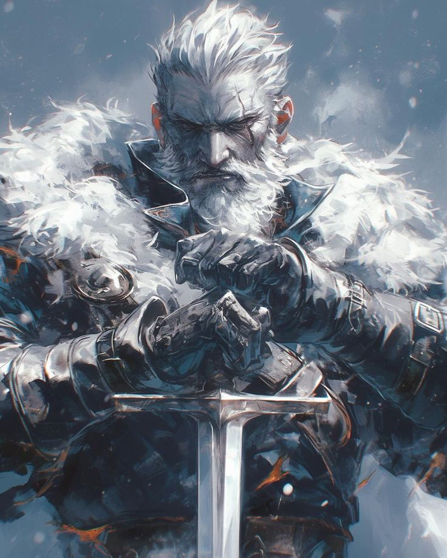
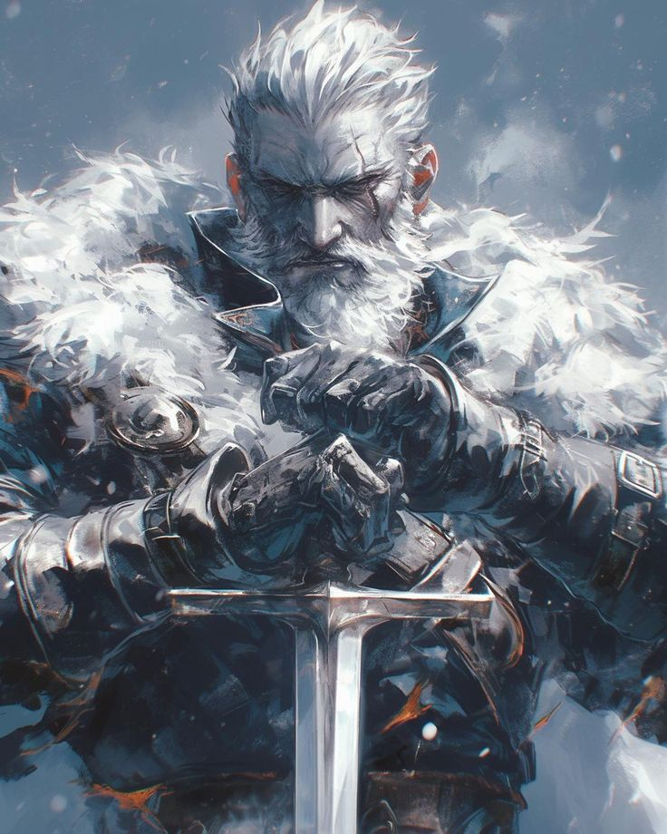

The inhabitants of the tundras and snow-capped mountains, known for their bravery, are excellent hunters of beasts and monsters. Nomads and warriors, they live in endless struggles, forged by the cold and the trials of their harsh environment.
Kjeldorians are master hunters and survivalists who thrive in tundra and cold areas. Their connection to the land and the harsh climate shapes their skills in tracking, hunting, and tactical warfare. Known for their strength, constitution, and perception, Kjeldorians excel in combat and endurance-related pursuits. Their society highly values resilience, defense, and strategic thinking, which are reflected in their abilities to navigate and thrive in unforgiving environments.
Skills: Hunting, Survival, Athletics, Throw, Endurance, Melee, Defense, Tactical.
Personality traits: Fearless, Hardworking, Stoic, Loyal, Cautious, Resourceful, Disciplined, Independent, Cold, Patient.
Strong attributes: Strength, Perception
−− Strength – Life in tundras and frozen wilderness demands powerful bodies capable of enduring harsh terrain and hunting dangerous prey.
−− Perception – Surviving in blizzards, tracking beasts, and navigating white landscapes requires acute senses and an instinct for detecting hidden threats.
Weak attributes: None
Birth attributes: Stature 10~12, Height 10~12, Ego 10~11, Appearance 8~10, Luck 8~10, Balance 9~10
(Prefered) Allegiance: Neutral, Nature, Ankou, Heritage
Living environment: Desertic, Rural, Urban
Birth particularities: Humans - Examplary - Human Ingenuity
Cultural particularities: - Heat Affinity - Wounded Affinity - Secundary Specialty - Accelerated Learning - Auras: Tenacity · Lucidity · Heroicness · Recklessness
Origins: The ethnic capital of the Kjeldorians is Ys, located in the Kingdom of Kjeldora, within the Lowlands.
Attilian (Sand-Folks)


The sand of the lands of Atlas has tanned the dark skin of its inhabitants.
Those inhabitants of arid lands and burning deserts, are beings imbued with dark fury and fearsome inflexibility. Their noble sense of commerce and their unwavering determination make them feared and respected negotiators throughout the continent.
The Attilians are a hardy, resilient people who inhabit arid, desert-like regions. Known for their incredible willpower and survival skills, they are deeply connected to their harsh environment, developing a strong cultural emphasis on endurance and tactical strength. Their society values strength of character and physical prowess, and they are often described as unyielding and tenacious. Hunting and crafting are also central aspects of their lifestyle, enabling them to sustain themselves in challenging conditions.
Skills: Survival, Endurance, Melee, Tactical, Hunting, Athletics, Brawl, Craftsmanship.
Personality traits: Determined (Willing), Tough (Unshakeable), Demanding, Reserved (Discreet), Principled, Cautious, Enduring (Hardworking), Loyal, Serious, Conservative.
Strong attributes: Constitution, Cunning
−− Constitution – Their bodies are shaped by relentless heat, scarcity, and arduous travel; endurance is both cultural and biological.
−− Cunning – Trade routes, negotiations, clan politics, and desert survival reward cleverness, adaptability, and shrewd decision-making.
Weak attributes: None
Birth attributes: Stature 10~11, Height 10, Ego 10~12, Appearance 8~10, Luck 8~10, Balance 10~11
(Prefered) Allegiance: Neutral, Chaos, Ankou, Ambition
Living environment: Desertic, Rural, Urban
Birth particularities: Humans - Examplary - Human Ingenuity
Cultural particularities: - Heat Affinity - Wounded Affinity - Secundary Specialty - Accelerated Learning - Auras: Firmness · Audacity · Adverseness · Steadiness
Rosalian (Lotus-Folks)
 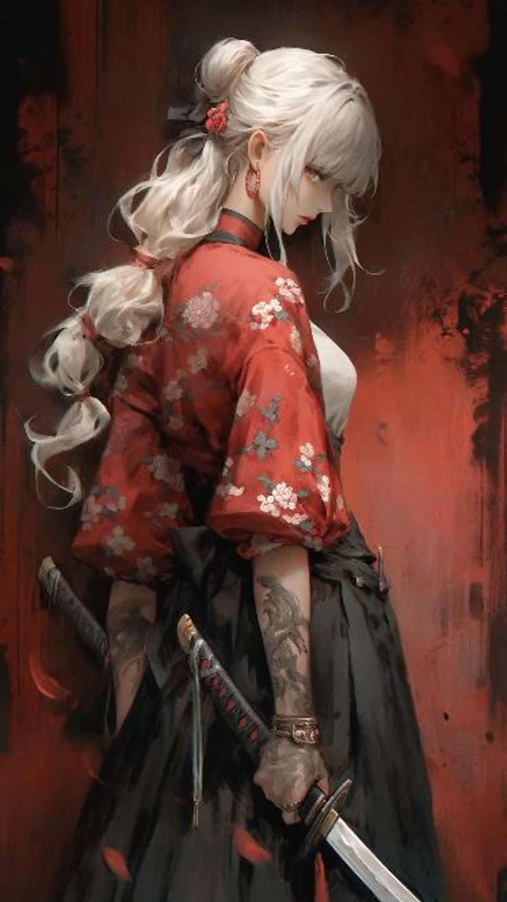
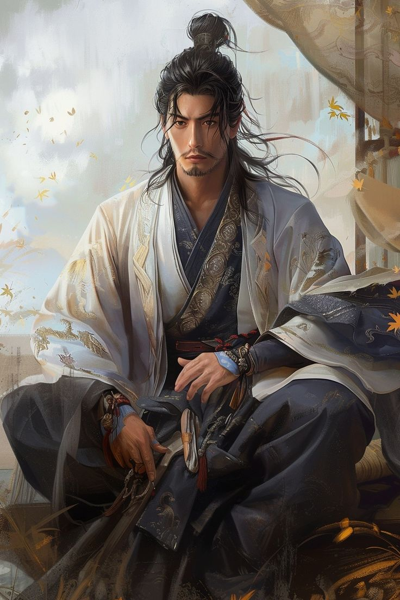
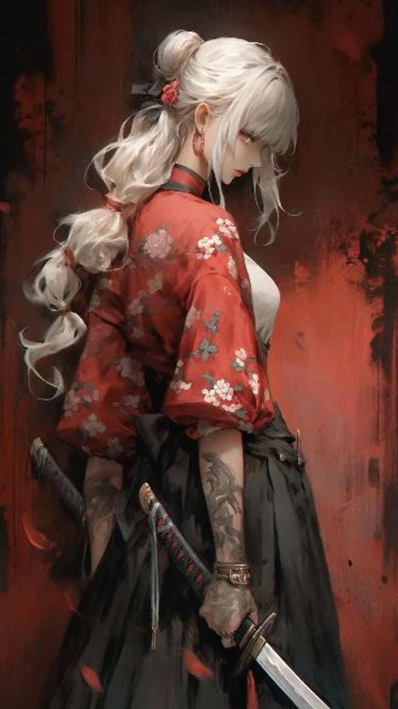
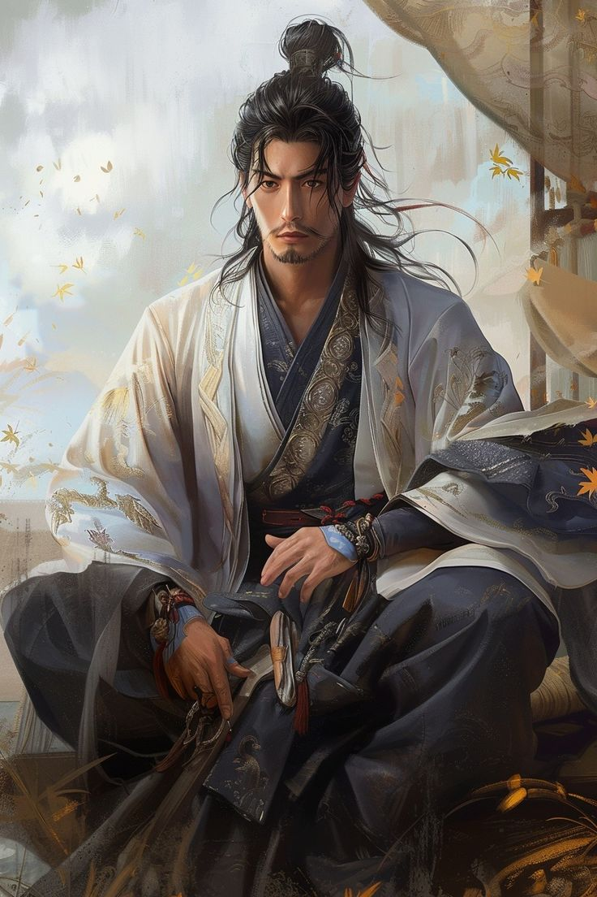

The inhabitants of the eastern lands are calm, wise and refined beings. Their mastery of tactical warfare, combat of honor and machinations hatched by shadowy hands is matched only by their apparent serenity.
Rosalians are a highly spiritual, traditional people with strong beliefs and customs. Inspired by Asian influences, they integrate meditation, magic, and craftsmanship into their way of life. Their society holds erudition and negotiation in high regard, and they are known for their diplomatic skills and depth of knowledge. Rosaliens excel in communication and persuasion, often taking on roles as mediators and advisors. Respect for history and culture is central to their identity.
Skills: Meditation, Spellcasting, Negotiation, Erudition, Persuasion, Survival, Craftsmanship, Communication.
Personality traits: Calm, Courteous, Wise (Bright), Principled, Modest, Patient, Calculative, Disciplined, Compassionate, Organized.
Strong attributes: Dexterity, Wisdom
−− Dexterity – Their refined martial arts, craftsmanship, and ceremonial disciplines demand precision, elegance, and subtlety in movement.
−− Wisdom – Rosalian traditions emphasize meditation, serenity, and philosophical thought, cultivating deep intuition and balanced judgment.
Weak attributes: None
Birth attributes: Stature 9~10, Height 9~10, Ego 10~11, Appearance 10~11, Luck 10~11, Balance 9~10
(Prefered) Allegiance: Neutral, Reason, Silence, Faith
Living environment: Urban, City-dwelling, Rural
Birth particularities: Humans - Examplary - Human Ingenuity
Cultural particularities: - Calm Affinity - Code Affinity - Secundary Specialty - Accelerated Learning - Auras: Stealthiness · Greatness · Stressless · Swiftness
Albalonian (War-Folks)

 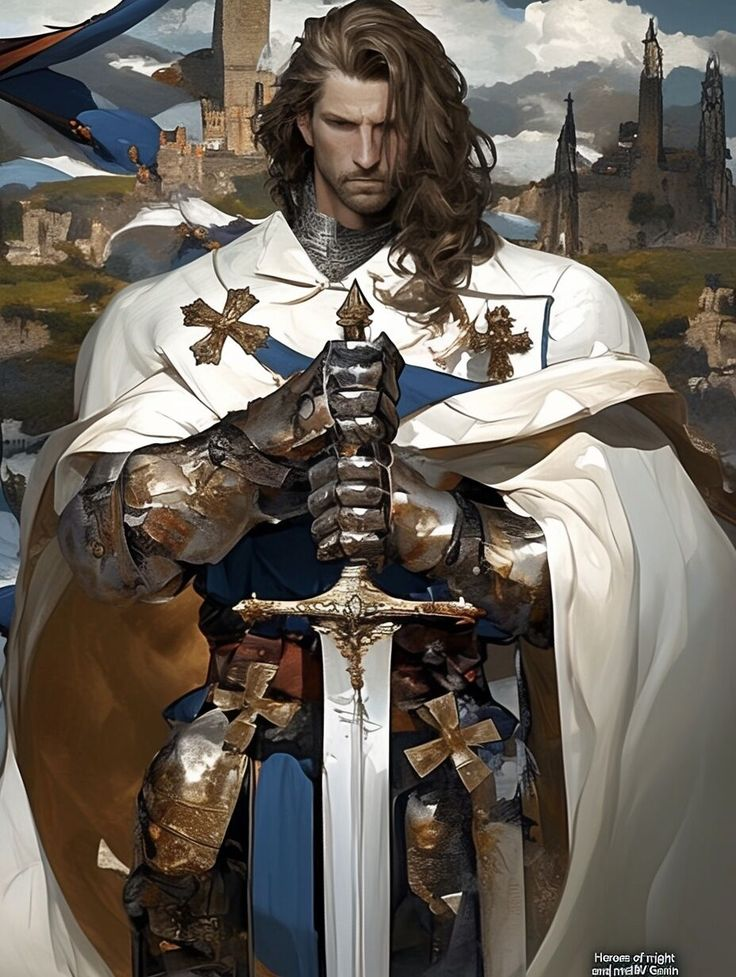
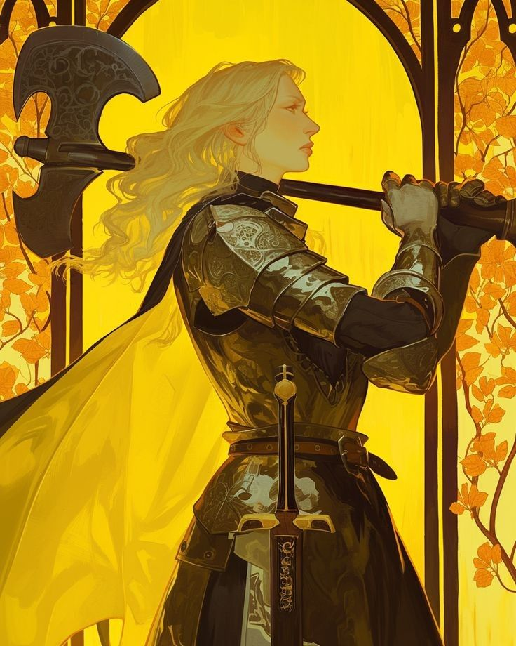
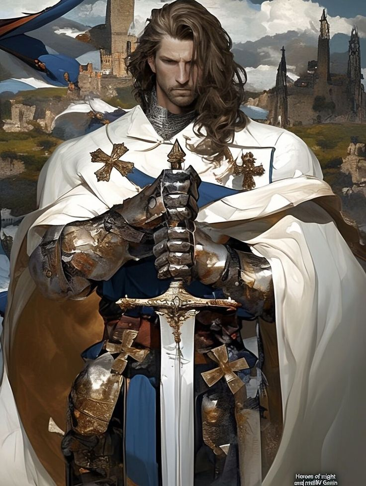
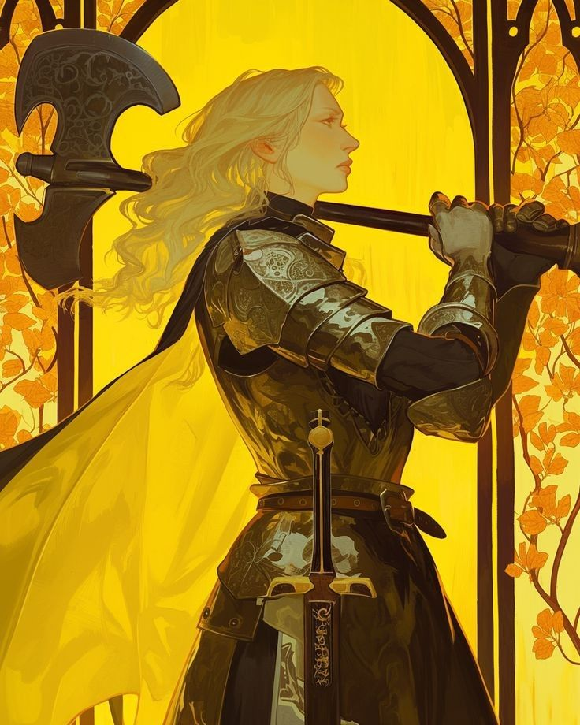
This people, forged by centuries of war and incessant battles, lives in a state of perpetual change of authority and fratricidal struggles. Here, each individual learns to wield a weapon from a young age, growing up in a culture where survival and strength dominate everything.
A militarized people with a centuries-long history of warfare, the Albalonians are fiercely dedicated to combat and tactics. Their society prioritizes physical strength, endurance, and defensive abilities, making them skilled fighters and strategic thinkers. Albalonians are deeply rooted in tradition and loyalty, often choosing lives of service and protection for their communities. They are natural leaders on the battlefield, known for their strong negotiation skills and unyielding tenacity.
Skills: Melee, Tactical, Endurance, Defense, Athletics, Brawl, Craftsmanship, Negotiation.
Personality traits: Aggressive, Fearless, Loyal, Stubborn, Competitive (Ambitious), Leader, Disciplined, Demanding, Impatient, Community-minded.
Strong attributes: Strength/Agility/Dexterity (choose one), Willpower
−− Strength / Agility / Dexterity – Albalonians train from childhood for war; their culture produces warriors of every style, from brute force to swift skirmishers to precise duelists.
−− Willpower – Generations of conflict forged unbreakable resolve; they endure hardship, command respect, and never yield on the battlefield.
Weak attributes: This information has not yet been written down
Birth attributes: Stature 10~11, Height 10~11, Ego 9~11, Appearance 9~10, Luck 9~10, Balance 9~11
(Prefered) Allegiance: Neutral, Sciences, Source, Ambition
Living environment: City-dwelling, Rural
Birth particularities: Humans - Examplary - Human Ingenuity
Cultural particularities: - Field Affinity - Battle Affinity - Secundary Specialty - Accelerated Learning - Auras: Boldness · Authority · Tenacity · Adverseness
Morrian (Dust-Folks)
 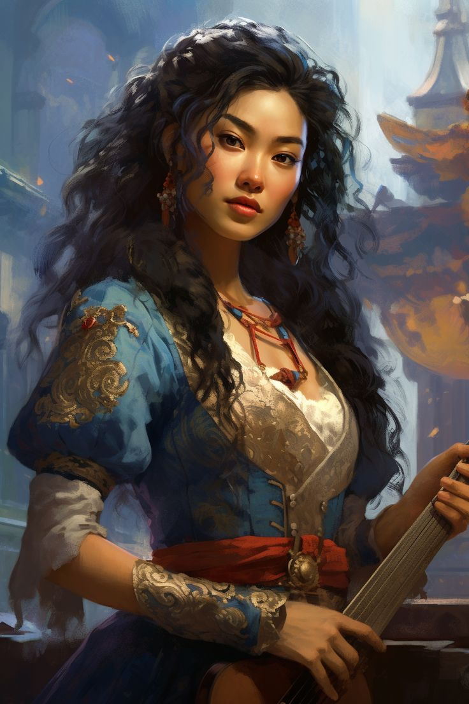
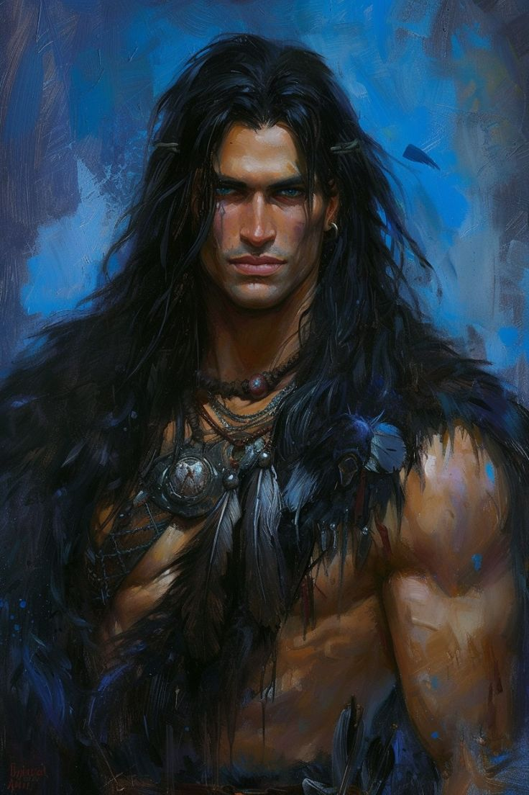
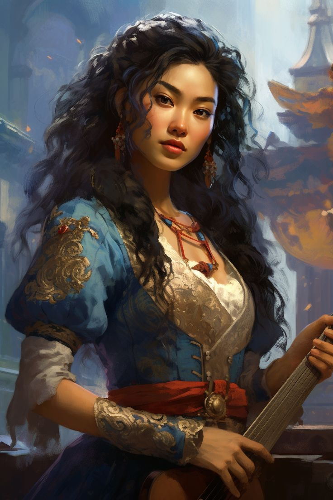
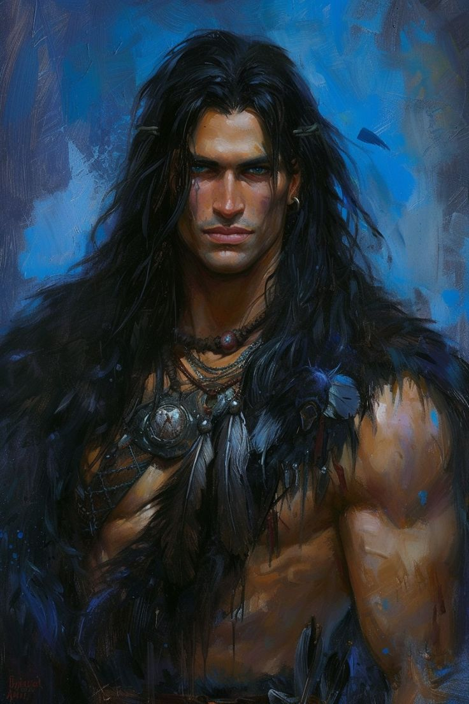

This nomadic people, devoid of large cities, travel in tribes through the wild lands according to the seasons or live in hidden and secluded arboreal villages. Deeply anchored in their beliefs and superstitions, these people find guidance and meaning in the mysteries of nature.
Morrians are resilient, clan-based people who inhabit vast, desolate, and sparsely fertile lands. Known for their strong sense of community and sedentary lifestyle, Morrians rely heavily on farming and craftsmanship. They are hardy and skilled in survival, often working with the land to sustain their small communities. Their culture values practical skills and a strong work ethic, emphasizing endurance, defense, and tactical abilities in order to protect and maintain their lands.
Skills: Rural Life, Endurance, Craftsmanship, Brawl, Melee, Survival, Defense, Tactical.
Personality traits: Hardworking, Community-minded, Calm, Resourceful, Patient, Conservative, Cautious, Modest, Principled, Serious.
Strong attributes: Agility, Perception
−− Agility – Working in fields, forests, and harsh rural terrain develops nimble, practical movements and an instinctive sense of bodily control.
−− Perception – As trackers, farmers, hunters, and guardians of isolated lands, Morrians rely on watchfulness and sharp awareness of their surroundings.
Weak attributes: None
Birth attributes: Stature 9~10, Height 10~11, Ego 9~10, Appearance 9~10, Luck 9~11, Balance 10~11
(Prefered) Allegiance: Neutral, Nature, Dreams, Silence
Living environment: Rural, City-dwelling
Birth particularities: Humans - Examplary - Human Ingenuity
Cultural particularities: - Plains Affinity - Motion Affinity - Secundary Specialty - Accelerated Learning - Auras: Swiftness · Pragmatism · Altruism · Stealthiness
Titanian (Stone-Folks)


 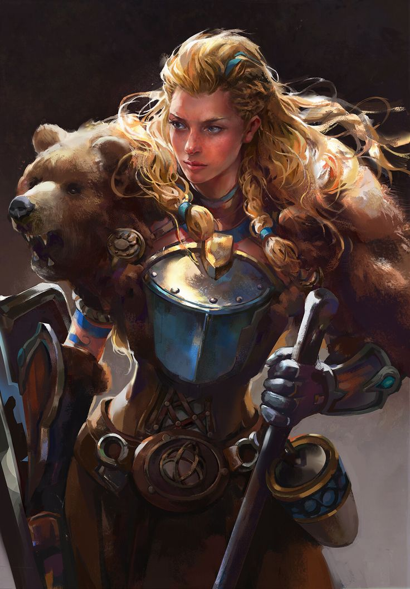
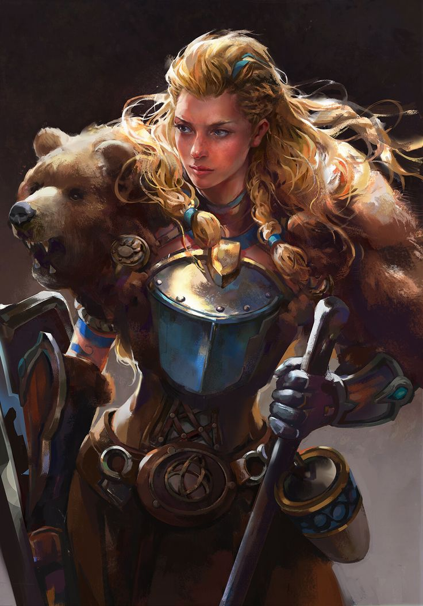
This people of solid mountain people, vigorous and enduring, was shaped by the harshness of their life and their proximity to the dwarven nations. Their iron will and unfailing courage make them unshakeable in the face of the most arduous challenges.
Skills: Endurance, Melee, Defense, Craftsmanship, Athletics, Survival, Tactical, Brawl.
Personality traits: Stoic, Proud (Pretentious), Fearless, Loyal, Hardworking, Conservative, Unshakeable, Serious, Disciplined, Cautious.
Strong attributes: Constitution, Willpower
−− Constitution – Their mountain lives, stonecraft traditions, and endurance rituals produce exceptionally sturdy and resilient bodies.
−− Willpower – Titans are known for their iron discipline, unshakeable courage, and refusal to yield under hardship or fear.
Weak attributes: None
Birth attributes: Stature 10~12, Height 9~10, Ego 10~11, Appearance 9~10, Luck 9~10, Balance 10~11
(Prefered) Allegiance: Neutral, Heritage, Source, Silence
Living environment: City-dwelling, Rural, Mountainous
Birth particularities: Humans - Examplary - Human Ingenuity
Cultural particularities: - Altitude Affinity - Resistance Affinity - Secundary Specialty - Accelerated Learning - Auras: Firmness · Stubbornness · Heroicness · Stressless
Bretonian (Science-Folks)
 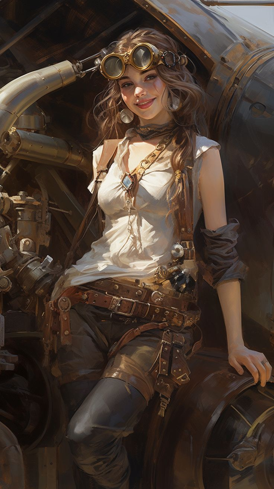
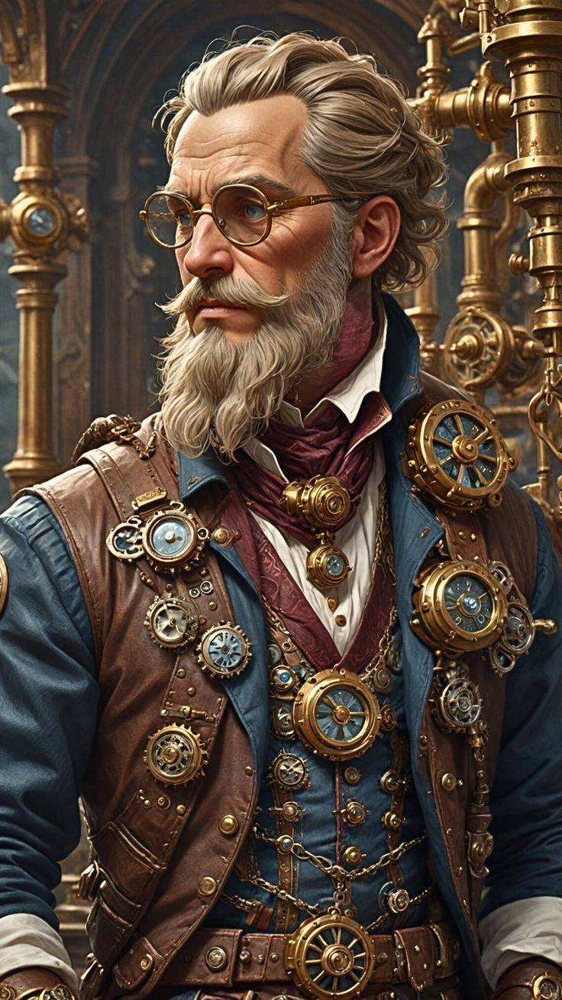
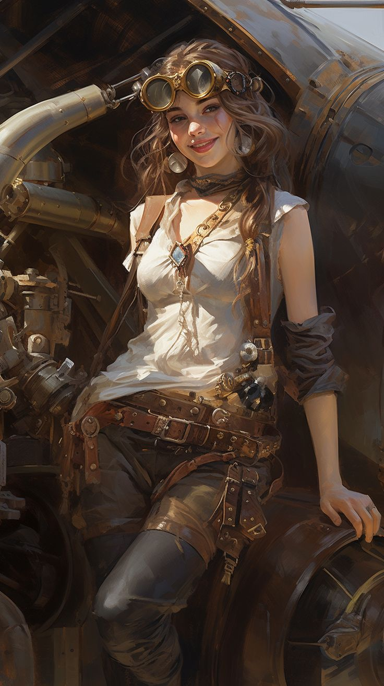
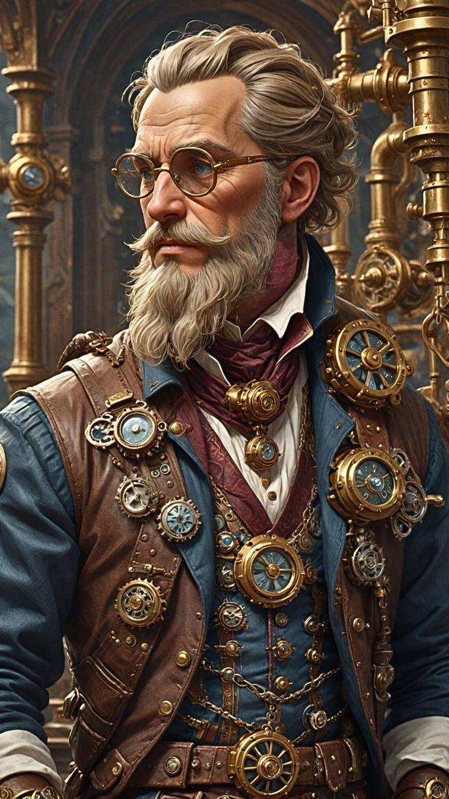

This people has elevated spirit, through things such as sciences and knowledge, to the highest rank of their values. They privilege the mind over feats of arms, and put discoveries and exploration above conquests and military alliances.
Bretonians are a technologically advanced society known for their intellectual pursuits and achievements in craftsmanship and invention. They value knowledge, investigation, and communication, making them prominent figures in trade and innovation. Bretonians have a reputation for combining their technological advancements with spellcrafting, blending magic and science to create powerful tools and inventions. They are often found in city environments that prioritize progress and
Skills: Technology, Craftsmanship, Investigation, Tactical, Communication, Spellcrafting, Negotiation, Persuasion.
Personality traits: Curious, Organized, Progressive, Erudite (Bright), Calculative, Principled, Confident, Hardworking, Open-minded, Calm.
Strong attributes: Intelligence, Cunning, Logic
−− Intelligence – Their society values invention, innovation, and theory above all, fostering brilliant analytical and academic minds.
−− Cunning – Navigating trade, technology, and complex social or scholarly institutions requires strategic thinking and adaptability.
−− Logic – Bretonians excel at structured reasoning, technical mastery, and problem-solving, blending science with magical engineering.
Weak attributes: None
Birth attributes: Stature 10, Height 10, Ego 10~11, Appearance 9~10, Luck 9~10, Balance 10
(Prefered) Allegiance: Neutral, Steam, Sciences, Reason
Living environment: Urban or City-dwelling
Birth particularities: Humans - Examplary - Human Ingenuity
Cultural particularities: - Technology Affinity - Repair Affinity - Secundary Specialty - Accelerated Learning - Auras: Insightfulness · Pragmatism · Lucidity · Stubbornness
Aurian (Mystic-Folks)


This (currently extinguished) people are distant relatives to selunian elves.
Skills: This information has not yet been written down
Personality traits: Elegant (Courteous), Erudite (Bright), Patient, Disciplined, Modest, Calm, Principled, Reserved (Secretive), Open-minded, Serious.
Strong attributes: Wisdom, Willpower, Magic
−− Wisdom – As a contemplative, mystical people, Aurians possess deep spiritual insight and a profound understanding of magical harmony.
−− Willpower – Their rituals and traditions demand intense discipline, emotional control, and inner strength.
−− Magic – Aurians carry ancient magical lineage, granting them natural affinity for arcane arts and metaphysical perception.
Weak attributes: None
Birth attributes: Stature 8~9, Height 9~10, Ego 10~12, Appearance 10~12, Luck 10~11, Balance 8~10
(Prefered) Allegiance: Neutral, Magic, Arcanes, Faith, Emeth
Living environment: Urban or City-dwelling
Birth particularities: Humans - Examplary - Human Ingenuity
Cultural particularities: - Magic Affinity - Arcane Affinity - Secundary Specialty // Cantrips - Accelerated Learning - Auras: Osmoticness · Audacity · Recklessness · Steadiness
Elven ethnics
Sylvanian (Wood-Elves/Brown-Elves)


This people of wood elves, with tanned and dark skin, are often called the brown elves. They live in perfect harmony with the vegetation, particularly in the forest, and their natural habitats are sculpted into the trees, forming splendid cities which in no way disturb the tranquility of nature. Behind these bucolic aspects lies a culture closed in on itself and made up of relentless hunters.
The Sylvanians are forest-dwelling elves who live in harmony with nature. They rely on the gifts of the forest, practicing sustainable hunting, gathering, and woodworking. Sylvanians use magic cautiously and with respect for nature, and they possess an innate skill in tracking, survival, and melee combat. With scattered settlements across the lowlands, they influence the regions where they reside. Their culture is rooted in respect for flora and fauna, and they excel in crafts like woodworking and leatherworking.
Skills: Survival, Hunting, Spellcasting, Negotiation, Craftsmanship, Subterfuge, Melee, Defense.
Personality traits: Curious, Cautious, Disciplined, Community-minded, Serious, Patient, Resourceful, Loyal, Secretive, Alert.
Strong attributes: Perception (x2), Agility, Wisdom
−− Perception – Life in dense forests trains them to read subtle cues: tracks in moss, wind changes, distant animal movement. Their senses are their survival.
−− Agility – Growing up climbing roots, leaping between branches, and moving silently through uneven terrain gives them unmatched natural agility.
−− Wisdom – Their harmony with the forest fosters introspection, patience, and instinctive understanding of living things.
Weak attributes: Strength
−− Strength – Their light, slender builds favor precision and speed over physical power; brute force is rarely part of their lifestyle.
Birth attributes: Stature 8~9, Height 8~9, Ego 10~11, Appearance 10~12, Luck 9~11, Balance 10~12
(Prefered) Allegiance: Neutral, Nature, Source, Heritage
Living environment: Rural or Forest
Birth particularities: Elven - Ancestral - Far Sight - Night Vision - Song of the Earth
Cultural particularities: - Forest Affinity - Leather Affinity - Distance Affinity - Ambidextry Affinity - Beast Tongue - Beast Animosity - Focus // Cantrips
Selunian (Snow-Elves/White-Elves)
 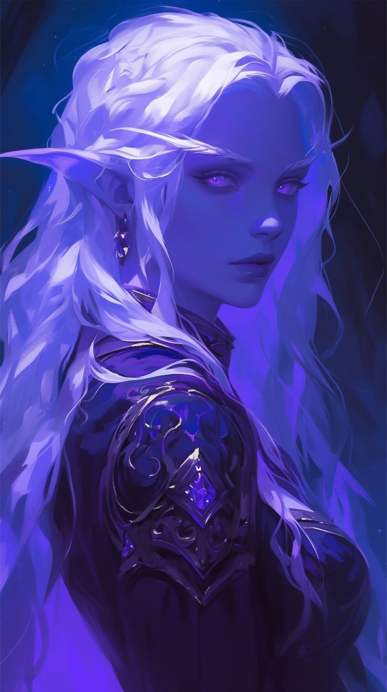
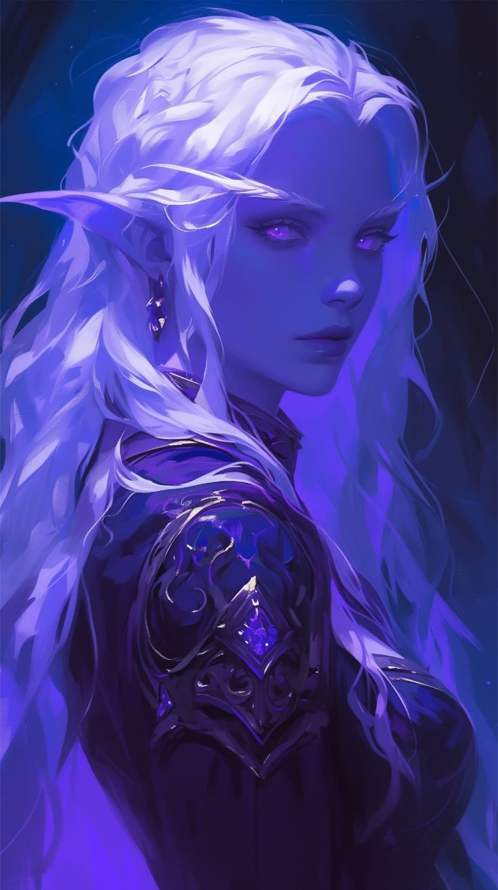
These very sedentary people of pearly, pale-skinned elves, often called white elves, place magic at the heart of their culture. Their most valued habitats are erected by this magic, creating cities with perfect shapes, both geometrically, ergonomically and visually. Behind these aspects lies a culture that is very closed in on itself, not hesitating to exploit other races from the height of their ivory towers. White elf societies are generally composed of few elves, administering a large mass of humanoids who serve them, venerating their apparent superiority.
The Selunians are a mystical, refined society deeply connected to magic and scholarly pursuits. They incorporate magic into daily life—from construction to agriculture—and are known for their powerful mage academies, which produce elite magic-users. Selunians are relatively rare, and although they have few true settlements, they exert significant influence in certain human kingdoms, particularly in politics and the military. They are skilled in diplomacy and persuasion, and their culture emphasizes artistry and craftsmanship, particularly in textiles and statuary.
Skills: Spellcasting, Erudition, Persuasion, Craftsmanship, Negotiation, Spellcrafting, Meditation, Investigation.
Personality traits: Ambitious, Organized, Conservative, Courteous, Critical, Serious, Leader, Measured, Principled, Calm.
Strong attributes: Charisma, Willpower, Magic x2
−− Charisma – Their poise, education, and refined confidence give them an aura of effortless authority and elegance.
−− Willpower – Selunian discipline is intense; magical study and societal expectations cultivate unwavering mental focus.
−− Magic – Arcane theory, ritual practice, and cultural reliance on sorcery give them a profound innate connection to magic, far above other elves.
Weak attributes: Strength, Constitution
−− Strength – Sheltered scholarly lives and delicate frames leave them physically fragile.
−− Constitution – Reliance on magic rather than physical exertion makes their bodies less resilient to hardship and disease.
Birth attributes: Stature 7~8, Height 8~9, Ego 10~12, Appearance 11~13, Luck 10~11, Balance 8~10
(Prefered) Allegiance: Neutral, Magic, Arcanes, Heritage, Silence
Living environment: Urban, City-dwelling, or Rural
Birth particularities: Elven - Ancestral - Favored Recovery : Mana (PM) - Night Vision - Soul Connection
Cultural particularities: - Immaterial Affinity - Fabric Affinity - Perfectionist Affinity - Magic Tongue - Magic Attunement // Cantrips
Thalassian (See-Elves/Blue-Elves)
 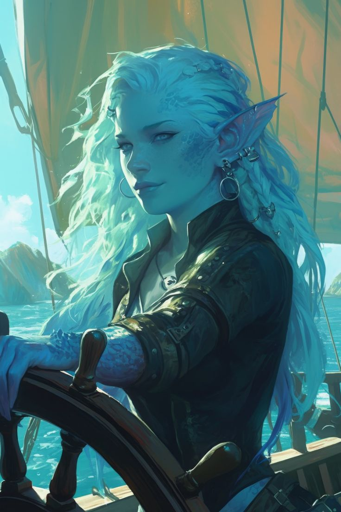
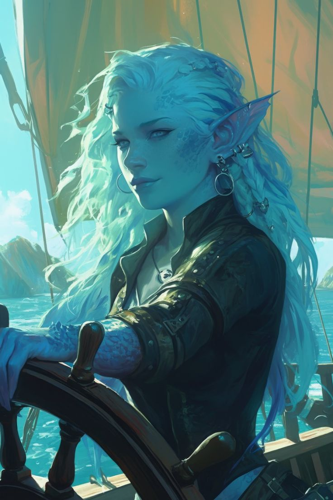


These people of sea elves, with blue skin, often called blue elves, are sailors and travelers as well as excellent traders, seeking to establish contacts to ensure their sustainability. Distrustful of other cultures, they collaborate willingly as long as the remuneration is up to par. Blue elves live in coastal cities, boat cities sailing on the waves, or underwater domed cities. They are excellent swimmers.
Thalassians are water-oriented elves who feel at home near rivers, lakes, and oceans. Known for their agility and adaptability, they are skilled in navigation and swimming, sometimes creating underwater cities through magic. Thalassians are also natural traders, using their aquatic skills to establish strong commercial connections. Their craftsmanship often involves materials from the sea, like shells and coral, and they are effective negotiators. They're found mainly in coastal areas, occasionally forming communities on the water itself.
Skills: Survival, Craftsmanship, Spellcrafting, Negotiation, Navigation, Swimming, Persuasion, Defense.
Personality traits: Friendly, Opportunistic, Adventurous, Resourceful, Energetic, Flexible (Rebellious), Confident, Talkative (Loudmouth), Curious, Pragmatic (Demanding).
Strong attributes: Agility, Intelligence, Wisdom, Perception
−− Agility – Swimming, diving, and balancing on shifting decks develop fluid, precise movement.
−− Intelligence – Navigation, trade, and maritime adaptation build sharp analytical minds.
−− Wisdom – Reading tides, predicting storms, and understanding foreign cultures cultivate practical wisdom.
−− Perception – Life at sea heightens awareness of subtle dangers: currents, sounds, silhouettes beneath the waves.
Weak attributes: Strength
−− Strength – Their bodies favor flexibility and speed—powerful strokes in water rather than heavy lifting on land.
Birth attributes: Stature 8~9, Height 8~9, Ego 9~10, Appearance 11~13, Luck 10~11, Balance 10~12
(Prefered) Allegiance: Neutral, Nature, Source, Silence
Living environment: Marine, City-dwelling, or Rural
Birth particularities: Elven - Ancestral - Favored Recovery : Chi (PC) - Night Vision - Light Feets - Amphibious (Morphological) - Yoke of the Waters
Cultural particularities: - Aquatic Affinity - Mineral Affinity - Pristine Affinity - Fish Tongue - Grace // Cantrips
Eldrazian (Black-Elves)


This people, known as ebony elves or dark elves, have skin as black as jet. Dark elves present two faces: publicly, they work as troubadours, advisors, courtiers... In the shadows, they are spies, assassins, and mercenaries. Dark elves are not born with dark skin; they develop it when their dark heart awakens. The community of dark elves is managed by an organization based in secluded citadels, overseeing the affairs of their members. A dark elf without ties to these communities eventually succumbs to their dark heart.
Eldrazians, or Black Elves, are a rare and enigmatic subgroup, often born among other elves. Recognized by their dark skin and intense disposition, they are highly disciplined, but without guidance, they may become violent and uncontrollable due to an innate “black gene.” Éldraziens live in secluded citadels where they learn to master their nature through rigorous training. Skilled in stealth, combat, and subterfuge, Éldraziens are often hired by human nobles as assassins, but they also serve as musicians, artists, or poets to mask their true purpose.
Skills: Melee, Subterfuge, Spellcasting, Brawl, Discretion, Tactical, Manipulation, Athletics.
Personality traits: Secretive, Calculative, Opportunistic, Disciplined, Intolerant, Critical, Ambitious, Stoic, Independent, Rebellious.
Strong attributes: Dexterity, Cunning, Agility, Charisma, Magic
−− Dexterity – Precision is essential for their arts, assassinations, and subtle crafts.
−− Cunning – Eldrazian society encourages strategic thinking, manipulation, and adaptation to strict internal hierarchies.
−− Agility – Their training emphasizes speed, stealth, and evasive combat techniques.
−− Charisma – Whether beguiling or intimidating, their presence is intense and persuasive.
−− Magic – Their lineage and rigorous teachings grant formidable arcane potential, often tied to shadow work.
Weak attributes: Constitution, Wisdom
−− Constitution – The “dark heart” that shapes their nature strains body and spirit, creating inherent fragility.
−− Wisdom – Emotional volatility and internal struggle hinder clarity and long-term judgment.
Birth attributes: Stature 7~9, Height 8~9, Ego 10~13, Appearance 11~13, Luck 8~10, Balance 6~9
(Prefered) Allegiance: Neutral, Chaos, Ankou, Ambition
Living environment: Urban, City-dwelling, or Subterranean
Birth particularities: Elven - Ancestral - Dark Surge - Night Vision - Forgettable Presence
Cultural particularities: - Darkness Affinity - Poison Affinity - Art Affinity - Spirit Tongue - Soiled Soul - Shadow Walker // Cantrips
Urganian (Red-Elves)


This people, known by few and called as such as ruby elves or red elves, have skin as red and radiant as rubies. Red elves have ardent hearts and live life with passion. Their society is reclusive, little known, and quite secretive; for some, they are merely legends, while others see them as outcasts who chose seclusion over facing the consequences of their ancestors' actions.
Urganian Elves are reclusive, mystical, and fierce. They are known for their deep connection to magic and meditation, often adopting an austere, disciplined lifestyle that emphasizes self-control and focus. Unlike other elves, Urganians exhibit a strict, almost authoritarian attitude. Though rare, they are known for their strategic prowess in both magical and tactical domains. They are also skilled in persuasion and subtlety, often using their knowledge and experience to influence others indirectly.
Skills: Spellcasting, Melee, Tactical, Persuasion, Defense, Meditation, Erudition, Subterfuge.
Personality traits: Serious, Disciplined, Conservative, Ascetic, Organized, Patient, Calm, Leader, Cold, Principled.
Strong attributes: Constitution, Perception, Wisdom, Magic
−− Constitution – Their austere, disciplined lifestyles forge bodies that can withstand extreme physical and spiritual trials.
−− Perception – Meditation and introspective rituals sharpen their awareness of people, energies, and intentions.
−− Wisdom – Urganian philosophy values self-mastery and contemplation, producing calm and thoughtful minds.
−− Magic – Their mystical traditions and disciplined study make them potent wielders of controlled, focused magic.
Weak attributes: Cunning
−− Cunning – Their rigid worldview leaves little room for deception or subtle political maneuvering; they act with direct intent rather than manipulation.
Birth attributes: Stature 8~10, Height 8~9, Ego 10~12, Appearance 9~11, Luck 8~10, Balance 10~12
(Prefered) Allegiance: Neutral, Nature, Ankou, Heritage
Living environment: This information has not yet been written down
Birth particularities: Elven - Ancestral - Impervious - Night Vision - Payback
Cultural particularities: - Heat Affinity - Metal Affinity - Vengeance Affinity - Monster Tongue - Monster Animosity - Neverending Hope // Cantrips
Half Elves


Half-Elves occupy a delicate place between two worlds. Neither entirely human nor fully elven, they often embody the best—and sometimes the worst—of both lineages. Their mixed heritage grants them remarkable adaptability, whether socially, magically, or physically, but also exposes them to mistrust from purist elven communities and suspicion from humans who see them as unpredictable.
Half-Elves do not form their own nations. Instead, they grow up within human or elven societies, inheriting the cultural environment of their parents. Because of this, no two Half-Elves are alike: some display the finesse and longevity of their elven lineage, while others lean toward human resilience and ambition. Many develop the ability to navigate between cultures with surprising ease, becoming diplomats, adventurers, scouts, or intermediaries in conflicts between humans and elves.
Their dual identity sometimes creates inner conflict, leading them either to wander in search of a place they truly belong, or to embrace their hybrid nature with pride. Half-Elves are often curious, adaptable, and perceptive, capable of learning quickly and excelling in roles requiring flexibility, negotiation, or creativity.
Skills: Inherits the skills of either parent (player's choice)
Personality traits: Inherits the personality traits list of both parent
Strong attributes: Inherits the strong attributes of either parent, chosen by the player.
Weak attributes: Inherits the weak attributes of one parent, which does not need to be the same parent chosen for the strong attributes.
Birth attributes: Inherits the range limits of both parents, using the lowest minimum and the highest maximum for each value.
(Prefered) Allegiance: Inherits the (Prefered) Allegiance list of both parent
Living environment: Inherits the living environment list of both parent
Birth particularities: Inherits the birth particularities of either parent (player's choice)
Cultural particularities: Inherits the affinities of either parent (player's choice)
Dwarf ethnics
Bradanan


Commonly called city dwarves, this dwarf people live very close to humans, who find them notably valuable due to their excellence in fields such as craftsmanship, technology, and management. Unlike their kin, the culture of Brandanan does not place much importance on their hair, so they often have smaller beards or mustaches, and sometimes are even clean-shaven. This is a source of humor for other dwarf peoples, who enjoy referring to them as gnomes rather than dwarves. But they nonetheless remain a robust and stubborn people who are rather reliable.
The Bradanan are dwarves who have assimilated into advanced human cities, thriving as engineers, craftsmen, and technologists. They are known for their pragmatism and adaptability in human-dominated environments, often bridging the gap between traditional dwarven skills and advanced sciences. Unlike other dwarves, Bradanan embrace innovation fully and distance themselves from mystical practices. They possess exceptional skill in ranged combat (e.g., throwing or shooting), technology, and various forms of crafting, making them invaluable assets in urban settings.
Also called Brandawis.
Skills: Craftsmanship, Technology, Persuasion, Erudition, Investigation, Negotiation, Shooting, Tactical.
Personality traits: Hardworking, Disciplined, Conservative, Critical, Stubborn, Community-minded, Serious, Loyal, Patient, Modest.
Strong attributes: Constitution, Perception, Intelligence, Logic
−− Constitution – Bradanan dwarves maintain the natural dwarven resilience despite living among humans. Centuries of labor, craft, and industry have preserved their hardened bodies, allowing them to endure long work cycles and the rigors of urban environments.
−− Perception – Their work in engineering, mechanics, and ranged weaponry requires constant vigilance and precision. Bradanan have trained senses, especially sight and hearing, essential for detecting flaws in machinery or structural weaknesses.
−− Intelligence – Integrating dwarven tradition with human innovation pushed Bradanan to adopt analytical thinking, planning skills, and scientific reasoning. They excel in technology, logistics, and complex problem-solving.
−− Logic – Whether crafting, designing machinery, or managing urban infrastructures, Bradanan rely on rationality and efficient structure. Their minds naturally break tasks into logical sequences, making them exceptional engineers and technologists.
Weak attributes: Agility, Charisma
−− Agility – Like all dwarves, Bradanan retain a compact, solid build that limits speed and fluidity of movement. Their lives center around precision rather than mobility, reinforcing this natural physical limitation.
−− Charisma – Although reliable and competent, Bradanan tend to be blunt, overly pragmatic, or socially rigid. Their urban life has softened little of their dwarven straightforwardness, making them respected, but not always well-liked.
Birth attributes: Stature 11~12, Height 7~8, Ego 10~12, Appearance 8~10, Luck 10~11, Balance 10~11
(Prefered) Allegiance: Neutral, Steam, Sciences, Reason, Ambition
Living environment: Urban or City-dwelling
Birth particularities: Dwarf - Tireless Fortitude - Financial Acumen - Infra Vision - Expensive Memory
Cultural particularities: - City Affinity - Technology Affinity - Magic Animosity - Elf Animosity - Forethought - Efficient Repairs - Mercantile Culture
Karazdan

 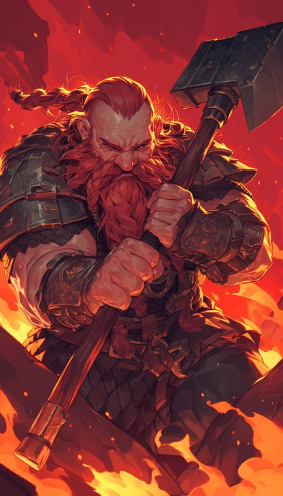
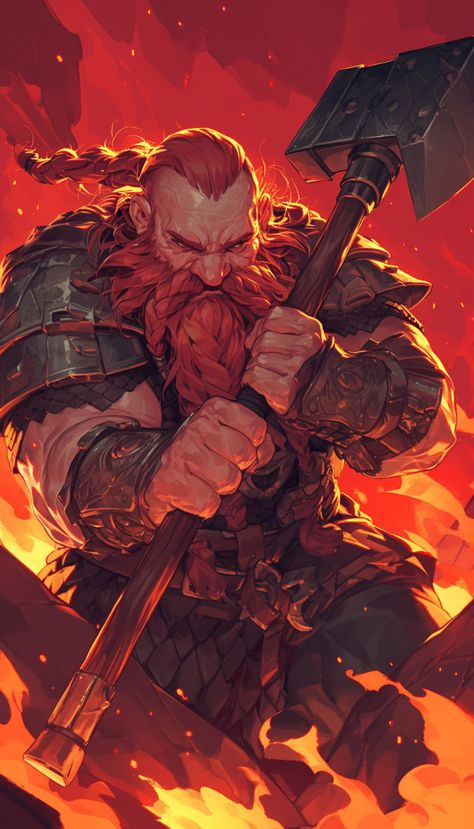

The society of the Karazdan is generally perceived as the "main" society of this race, as it represents the overwhelming majority. It is divided into clans with distinct and diverse orientations. These dwarves have a notable culture of beards and similar attributes. Their braids and beard or hair decorations are marks of good taste and often say a lot about them, especially if they are paragons. Dwarves have no deities; instead, they refer to paragons, illustrious dwarves who have left a significant mark on their society in the present OR in the past and continue to convey notions that inspire current generations.
The Karazdan are the core ethnic group of dwarven society, representing the primary dwarven culture and lineage from which other clans draw their heritage. They live in rocky, hilly regions, practicing a robust lifestyle that emphasizes defense, mining, and physical endurance. The Karazdan who do not belong to specific clans are loyal to the High King, the central figure of dwarven sovereignty, whose authority unites the separate clan lords. Karazdan culture is rooted in loyalty, respect for tradition, and a strong emphasis on physical prowess, making them steadfast defenders of dwarven values.
Also called Karazdawis.
Skills: Craftsmanship, Melee, Defense, Endurance, Tactical, Athletics, Brawl, Mining.
Personality traits: Hardworking, Aggressive, Fearless, Stubborn, Conservative, Community-minded, Imposing, Serious, Loyal, Resentful.
Strong attributes: Willpower, Constitution + the ones associated to the choosen clan
−− Willpower – Karazdan embody dwarven resolve: stubbornness elevated to a cultural virtue. Loyalty to their clan and High King reinforces their mental fortitude, allowing them to push through hardship without hesitation.
−− Constitution – Living in mountainous, subterranean, or hostile terrains has forged their bodies. Their lives revolve around mining, forging, fighting, and enduring harsh conditions, resulting in exceptional stamina and physical resilience.
−− Clan Attributes – Each clan cultivates its own strengths—strength, cunning, wisdom, leadership—rooted in their social roles and ancient traditions. These specializations refine the natural dwarven aptitude into purpose-built advantages.
Weak attributes: Agility, Dexterity, Charisma
−− Agility – Karazdan physiques are dense and sturdy, built for endurance and power rather than mobility. Their heavy armor and tools further reinforce this natural limitation.
−− Dexterity – While precise in heavy craftsmanship (smithing, carving), they struggle with delicate manipulations requiring lighter or more flexible movements. Fine motor skills are often secondary to strength-based tasks.
−− Charisma – Karazdan dwarves are famously blunt, proud, and intense. Their fiery tempers, traditionalism, and social rigidity do not translate well to diplomacy, causing them to intimidate more often than they charm.
Birth attributes: Stature 12~13, Height 7~8, Ego 10~12, Appearance 7~9, Luck 10~11, Balance 10~11
(Prefered) Allegiance: Neutral, Source, Heritage, Steam, Silence
Living environment: Subterranean, Mountainous, City-dwelling, or Rural
Birth particularities: Dwarf - Tireless Fortitude - Hardness - Financial Acumen - Infra Vision - Favored Save : Opposition (*)
Cultural particularities: - Subterranean Affinity - Mountain Affinity - Metal Affinity - Stone Affinity - Vermin Animosity - Elf Animosity - Bloodline Pride - Unyielding
Clan of the Shield
The Clan of the Shield serves as the military backbone of dwarven society, specializing in combat and defense. Members of this clan are formidable warriors who act as protectors of dwarven lands, standing ready to defend their territories or maintain peace among other clans. Their values center on loyalty, endurance, and tactical prowess, and they are often called upon to mediate conflicts due to their impartiality. Shield dwarves are known for their strength and discipline, with leadership roles that make them essential in times of conflict.
Strong attributes: Constitution, Willpower Skills: Melee, Defense, Craftsmanship, Tactical, Athletics, Endurance, Brawl, Leadership.
Clan of the Temple
The Temple Clan is composed of dwarves who serve as keepers of tradition, scholars, and religious figures within dwarven society. Although dwarves cannot wield magic, Temple Clan members are experts in dwarven lore, rituals, and the construction of war machines that aid in warfare. Their skills in meditation and erudition make them highly respected for their wisdom and dedication to preserving dwarven culture. They also support the military through engineering and craftsmanship, constructing structures and machinery essential for the dwarven way of life.
Strong attributes: Willpower, Wisdom Skills: Spellcrafting, Erudition, Meditation, Craftsmanship, Persuasion, Defense, Investigation, Leadership.
Clan of the Talion
The Talion Clan is the wealthiest and most politically influential among the dwarves. They excel in negotiation, persuasion, and commerce, controlling much of the dwarven trade networks and economic activities. Members of the Talion Clan are known for their cunning and business acumen, often relying on a secretive organization, the Black Lodge, to secure their interests. Skilled in both subterfuge and manipulation, the Talion Clan dwarves are shrewd merchants and negotiators, placing wealth and power at the forefront of their priorities.
Strong attributes: Constitution, Cunning Skills: Negotiation, Subterfuge, Persuasion, Manipulation, Larceny, Investigation, Erudition, Spellcrafting.
Clan of the Forge
The Forge Clan forms the industrial backbone of dwarven society, primarily involved in metallurgy, mining, and weapon crafting. These dwarves are highly skilled blacksmiths and metalworkers, crafting some of the finest weapons, armor, and tools. Known for their resilience and work ethic, Forge Clan dwarves are respected for their knowledge of metals and resource extraction, making them central to the dwarven economy and defense. They are also strong negotiators, often dealing with human societies to secure raw materials and trade.
Strong attributes: Strength, Constitution Skills: Craftsmanship, Endurance, Defense, Melee, Technology, Survival, Athletics, Brawl.
Clan of the Malt
The Malt Clan is well-known for their expertise in brewing, agriculture, and rural craftsmanship. They focus on producing the resources necessary for dwarven communities, especially food and drink, including the renowned dwarven ales. The Malt Clan also engages in trade with human settlements, where their brewed products are highly valued. These dwarves are practical and hardworking, and they excel in craftsmanship, particularly in areas related to food, drink, and other essential goods.
Strong attributes: Constitution, Charisma Skills: Craftsmanship, Endurance, Rural Life, Persuasion, Technology, Negotiation, Athletics, Brawl.
Clan of the Errants
Errant Clan dwarves are outcasts, often due to social or political conflicts. Forced to live outside traditional dwarven society, they are nomadic and focus on self-sufficiency. Known for their survival skills, Errant dwarves are adept at living off the land and have minimal access to traditional dwarven wealth. While they cannot own gold or weapons, Errant dwarves rely on discretion, craftsmanship, and combat skills to survive, often in isolation from other dwarves. They represent a life of simplicity and resilience, embodying the rugged spirit of dwarven heritage.
Strong attributes: Willpower, Wisdom Skills: Survival, Rural Life, Endurance, Craftsmanship, Melee, Athletics, Discretion, Brawl.
Ungordan


The Ungordan are the dwarves of the depths, residing in vast underground cities carved into the heart of the mountains. These dwarves live far below the surface, in a world of perpetual darkness illuminated only by the glow of luminescent fungi and the forge fires of their cities. Their society is highly structured, with a rigid caste system that dictates every aspect of their lives.
Ungordan, also known as the Deep Dwarves, inhabit the underground depths known as the Tréfonds. Separated physically and culturally from surface-dwelling dwarves, the Ungordan have little in common with their kin above. In fact, they view surface dwarves as “deviants” or “denatured,” having lost their connection to the true dwarven way. The Ungordan excel in survival, tactical combat, and mining, navigating the dangerous tunnels and caverns with unmatched skill. They are known for their disdain of the surface and their emphasis on resilience and unity in the harsh, unforgiving depths.
Also called Ungordawis.
Ungordan Society:
- Deep Lords - At the top of the hierarchy are the Deep Lords, ruling from magnificent halls adorned with intricate stonework and precious gems. They govern the Ungordan with an iron fist, making decisions that affect the entire society.
- Artisans and Smiths - Skilled craftsmen who create the finest weapons, armor, and artifacts. Their work is highly valued, and they are respected for their expertise in metallurgy and stonecraft.
- Warriors and Guards - Trained from a young age, these dwarves defend the cities from the dangers of the deep, including monstrous creatures and rival factions. Their discipline and combat skills are unmatched.
- Miners and Excavators - The backbone of Ungordan society, these dwarves labor tirelessly to extract precious minerals and expand their subterranean realms. Their work is grueling and dangerous, but essential for the survival of their people.
- Merchants and Traders - These dwarves manage the flow of goods within the cities and trade with surface dwellers, though such interactions are rare and often fraught with tension. They play a crucial role in ensuring the cities are well-supplied.
- Servants and Laborers - The lowest caste, performing the menial tasks that keep the cities running. Despite their low status, they are an integral part of the Ungordan society.
Skills: Survival, Melee, Defense, Tactical, Endurance, Mining, Spellcrafting, Investigation.
Personality traits: Stoic, Disciplined, Secretive, Conservative, Hardworking, Pessimistic, Cautious, Loyal, Serious, Unshakeable.
Strong attributes: Strength, Constitution (x2), Willpower
−− Strength – Life in the Tréfonds demands raw physical power. From mining colossal stone formations to fighting subterranean monstrosities, Ungordan dwarves possess unmatched brute force among their kin.
−− Constitution (x2) – Exposure to darkness, pressure shifts, toxic spores, cave hazards, and grueling labor hardened their bodies beyond even traditional dwarven standards. Their physiology adapted to resist poison, fatigue, and injury with extreme efficiency.
−− Willpower – The oppressive world below the earth can easily break weaker minds. Ungordan society cultivates strict discipline, emotional control, and mental toughness to survive the psychological toll of darkness and confinement.
Weak attributes: Cunning, Agility, Dexterity, Wisdom
−− Cunning – Ungordan culture values obedience and communal unity over scheming or subtlety. Strict social conditioning suppresses individual trickery or personal ambition, weakening their capacity for manipulation or complex deception.
−− Agility – Years of living in heavy armor, navigating stone tunnels, and maintaining compact, muscular bodies restrict their fluid movement. Speed and flexibility are rare traits among Deep Dwarves.
−− Dexterity – While strong craftworkers, their work demands force rather than finesse. Fine manipulation, delicate handling, and light mechanical work suffer due to their heavy musculature and utilitarian mindset.
−− Wisdom – The isolation of the deep limits their worldview. Ungordan rarely experience spiritual diversity, natural landscapes, cultural exchanges, or contemplative traditions, resulting in a narrower understanding of the world and weaker intuitive insight.
Birth attributes: Stature 12~14, Height 7~8, Ego 10~13, Appearance 6~8, Luck 8~10, Balance 10~12
(Prefered) Allegiance: Neutral, Ankou, Silence, Heritage
Living environment: Subterranean
Birth particularities: Dwarf - Tireless Fortitude - Hardness - Financial Acumen - Infra Vision - Favored Save : Opposition (*)
Cultural particularities: - Subterranean Affinity - Metal & Stone Affinity - Spawn Animosity - Vermin Animosity - Elf Animosity - Stuborness - Unyielding
Feral ethnics
The appearance of ferals is that of anthropomorphic animals. Depending on the individual, the propensity to which animal heritage is visible changes drastically.
Some ferals have an appearance very similar to that of the animal they inherited.
For others it is limited to a few visible features (ears, tails, etc.) and that's it.
In terms of proportion, in Thalifen, we note among males a higher concentration of so-called "bestial" appearances and among women a higher concentration of so-called "human" appearances. In reality, there is everything in nature and males can have a very marked human appearance just as a female can have a very marked bestial appearance.
Okkan (wolf-folks)
 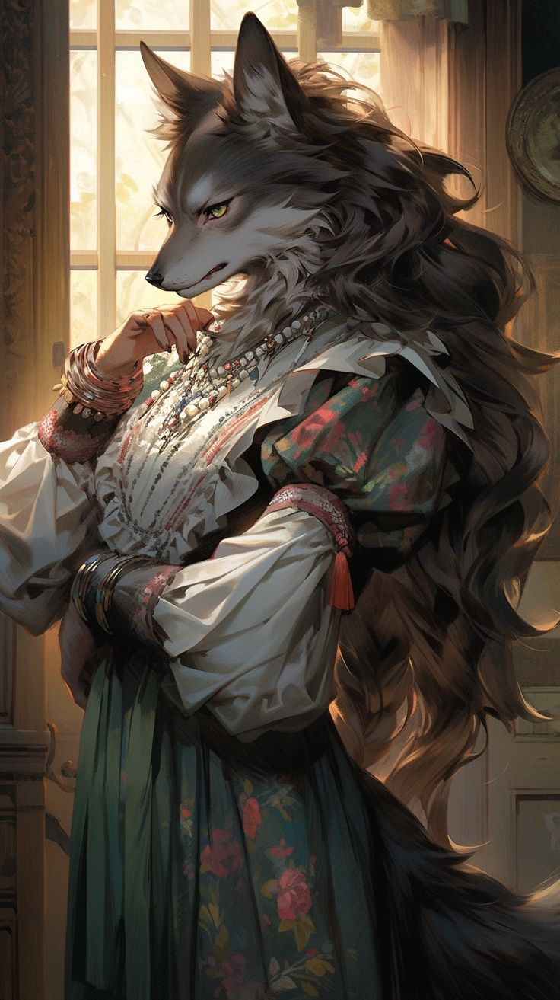
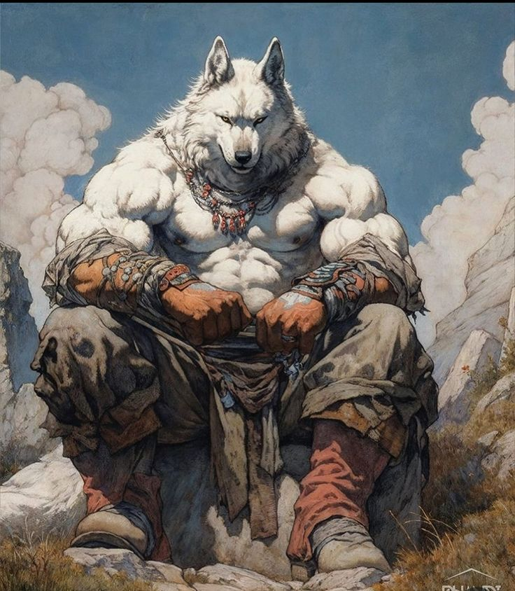
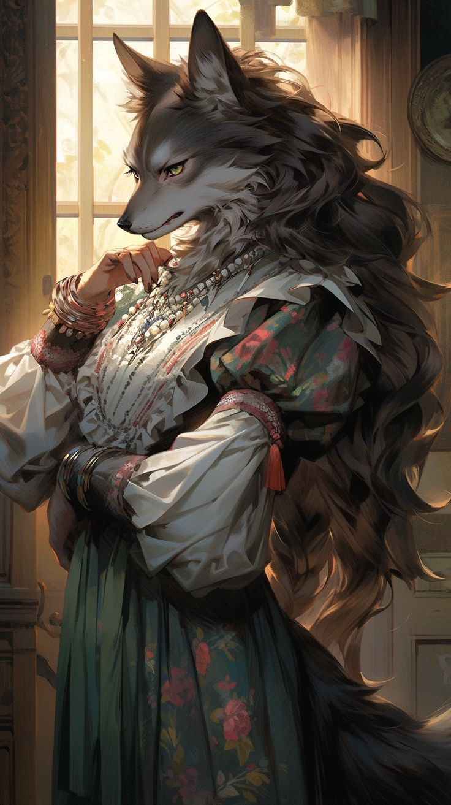
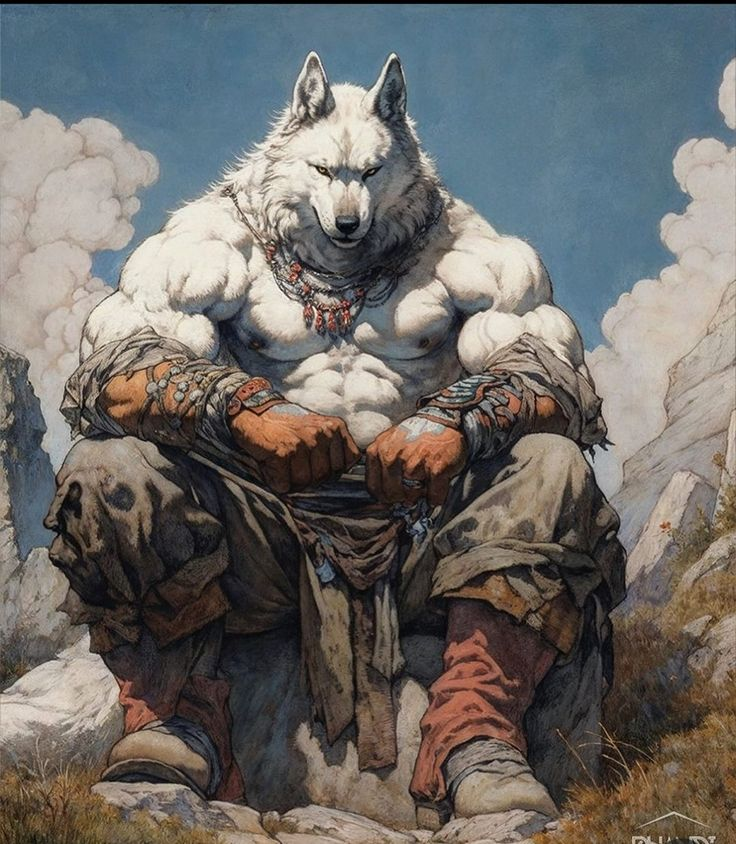

The Okkan are wolf-like humanoids who live in close-knit clan structures, much like wolf packs. Known for their wisdom and strong social bonds, they value loyalty, community, and cooperation. They are spread across the lowlands and are among the more sociable feral groups, often integrating well with other cultures. Okkan are peaceful by nature, usually avoiding conflict, but they are highly perceptive and adept at defending themselves and their clans when necessary. They are considered pacifist ferals, generally not seeking conflict with other cultures.
Skills: Survival, Hunting, Defense, Endurance, Detection, Communication, Athletics, Spiritism.
Personality traits: Loyal, Community-minded, Protective (Alert), Courageous (Fearless), Warm, Resourceful, Patient, Serious, Independent, Cautious.
Strong attributes: Perception, Wisdom (x2)
−− Perception – Pack life and constant vigilance make Okkan extremely aware of sounds, scents, and movements around them.
−− Wisdom (x2) – Guided by instinct, tradition, and communal experience, they excel at reading situations and acting for the good of the pack.
Weak attributes: Cunning
−− Cunning – Okkan are honest, direct, and pack-oriented rather than scheming. They prefer trust and loyalty over manipulation or elaborate plots.
Birth attributes: Stature 10, Height 10, Ego 10, Appearance 10, Luck 10, Balance 10
(Prefered) Allegiance: Neutral, Nature, Source, Dreams
Living environment: Forest, Nomadic, Rural
Nature: Pacifist.
Totem: Uhlo, the Unifier.
Birth particularities: Feral - Natural Weapons / Armor - Survivability - Teamworker // Good Company - Danger Sense
Cultural particularities: - Forest Affinity - Pack Affinity - Pack Instinct - Affinity with Totem - Align with Totem [1PP]
Nekkan (Cat-folk)


These humanoids with cat-like traits are mischievous, playful, curious, and stealthy. They tend to avoid settling in societies of their own, preferring instead to integrate into larger human cities, where they can indulge their cunning and blend in with other cultures. They are quick-witted and agile, excelling in stealth and subterfuge, but are often perceived as untrustworthy due to their tendency to bend or ignore rules. They are considered pacifist ferals who do not seek direct conflict.
Skills: Subterfuge, Discretion, Larceny, Finesse, Urban Life, Negotiation, Acrobatics, Persuasion.
Personality traits: Curious, Independent, Secretive, Playful, Opportunistic, Cautious, Spontaneous, Free-spirited, Lazy, Proud (Pretentious).
Strong attributes: Agility (x2), Cunning, Dexterity
−− Agility (x2) – Their feline bodies are built for sudden jumps, tight landings, stealthy movement, and acrobatics.
−− Cunning – Curious and opportunistic, Nekkan are quick thinkers who excel at trickery, improvisation, and bending rules.
−− Dexterity – Their nimble fingers and precise movements make them excellent thieves, climbers, and handlers of delicate tasks or tools.
Weak attributes: Constitution
−− Constitution – Nekkan are nimble but not particularly robust. They tire faster under sustained effort and handle harsh environments or heavy blows less effectively.
Birth attributes: Stature 9~10, Height 9~10, Ego 9~10, Appearance 10~12, Luck 10~13, Balance 9~10
(Prefered) Allegiance: Neutral, Chaos, Ankou, Dreams
Living environment: Nomadic, Rural, City-dwelling
Nature: Pacifist or Predatory.
Totem: Adis, the Whisperer in Shadows.
Birth particularities: Feral - Natural Weapons / Armor - Black Cat // White Cat - If Pacifist : Survivability and Danger Sense - If Predatory : Hunter and Fear Sense
Cultural particularities: - Darkness Affinity - Feline Instincts - Affinity with Totem - Align with Totem [1PP]
Felkkan (Lion-folk)

 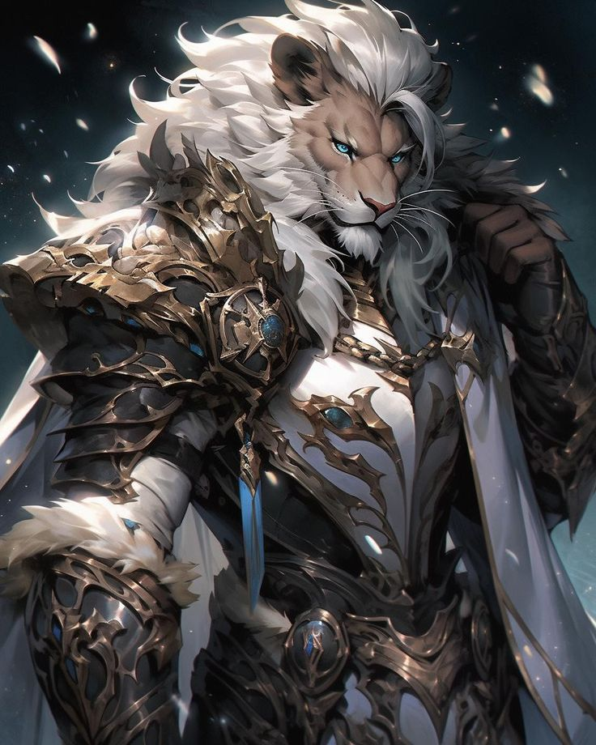
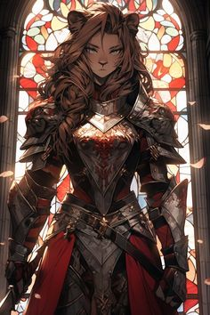
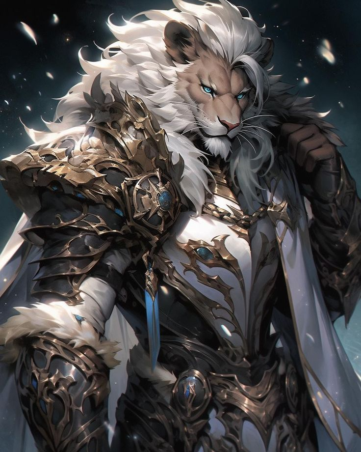
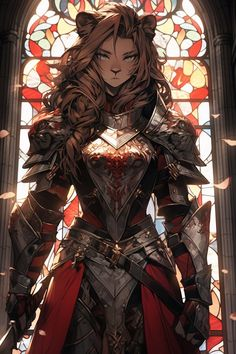
This tribe of humanoids with lion-like features are impressive figures, strong and proud, courageous and imposing. They are quite rare and live in scattered clans across the hot lands of Atlas. Occasionally, they can be found in other cultures where they are highly regarded for their leadership abilities. They are regarded as predatory ferals who avoid direct conflicts but stand resolutely against any threats, fiercely defending their territory.
Skills: Melee, Survival, Athletics, Defense, Tactical, Endurance, Detection, Persuasion.
Personality traits: Imposing, Leader, Fearless, Proud (Pretentious), Loyal, Aggressive, Competitive (Ambitious), Community-minded, Energetic, Reckless.
Strong attributes: Strength, Charisma, Willpower
−− Strength – Felkkan bodies are built like big-game predators: powerful muscles, explosive force, and raw physical dominance suited for melee combat and territorial defense.
−− Charisma – Their natural presence, confidence, and proud bearing inspire respect or fear. Felkkan often take leadership roles simply by entering a room.
−− Willpower – Pride and honor push them to stand their ground. They rarely back down from challenges and endure hardship to uphold their status and oaths.
Weak attributes: Cunning
−− Cunning – Direct, straightforward and sometimes hot-blooded, Felkkan prefer frontal displays of strength and courage over long-term scheming or subtle manipulation.
Birth attributes: Stature 10~12, Height 10~11, Ego 10~12, Appearance 8~10, Luck 8~10, Balance 8~10
(Prefered) Allegiance: Neutral, Chaos, Nature, Ambition
Living environment: Nomadic, Desert (hot), Mountain
Nature: Predatory.
Totem: Eaos, the Boundless Sovereign.
Birth particularities: Feral - Natural Weapons / Armor - Stronger Natural Weapons - Royal Roar - Hunter - Fear Sense
Cultural particularities: - Desertic Affinity - Barehands Affinity - King's Shoot // Tyran's Shoot - King Instincts - Affinity with Totem - Align with Totem [1PP]
Koddan (Bear-folk)

 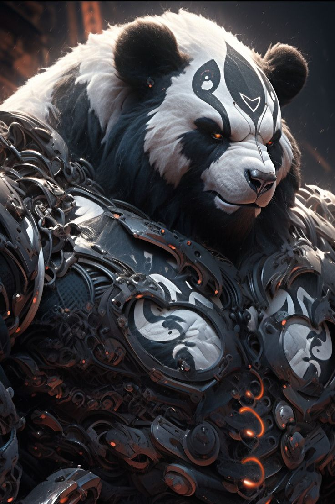
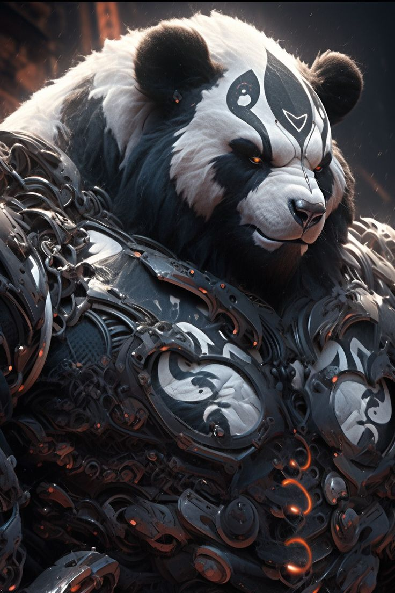
This tribe of humanoids with bear-like features are as massive and imposing as they are patient and wise. Though they may not excel in advanced intelligence, they possess a profound understanding of the world, with which they share a special connection. They give off an impression of immutable strength. They are quite rare and live in scattered clans across the cold lands of Kjeldor. Occasionally, they can be found in other cultures, where they are highly esteemed for their great wisdom coupled with their imposing stature that deters missteps. They are considered pacifist ferals who do not seek direct conflict.
Skills: Survival, Endurance, Athletics, Hunting, Detection, Rural Life, Defense, Mysticism.
Personality traits: Calm, Patient, Warm, Protective (Alert), Hardworking, Community-minded, Serious, Principled, Optimistic, Measured.
Strong attributes: Strength, Constitution, Wisdom
−− Strength – Massive frames and heavy musculature give Koddans impressive physical power, whether in work, travel, or combat.
−− Constitution – Their bodies are slow to tire and hard to break, shaped by cold climates, harsh terrain, and a lifestyle of constant exertion.
−− Wisdom – Reflective, patient, and deeply connected to nature, Koddans understand rhythms of seasons, emotions, and life's cycles better than they grasp abstract theories.
Weak attributes: Agility
−− Agility – Their size and bulk come at the cost of speed and finesse. Koddans move deliberately rather than quickly, favoring stability over nimbleness.
Birth attributes: Stature 12~14, Height 11~13, Ego 7~10, Appearance 8~10, Luck 8~10, Balance 10~12
(Prefered) Allegiance: Neutral, Nature, Source, Silence
Living environment: Cold Desert and Mountain
Nature: Pacifist.
Totem: Oborh, the Patient Beast.
Birth particularities: Feral - Natural Weapons / Armor - Stronger Natural Armor - Force of Nature - Wild Sentinel - Survivability - Danger Sense
Cultural particularities: - Cold Affinity - Survival Instincts - Affinity with Totem - Royal Roar - King's Shoot // Tyran's Shoot - Align with Totem [1PP]
Bedokkan (Reptile-folk)
 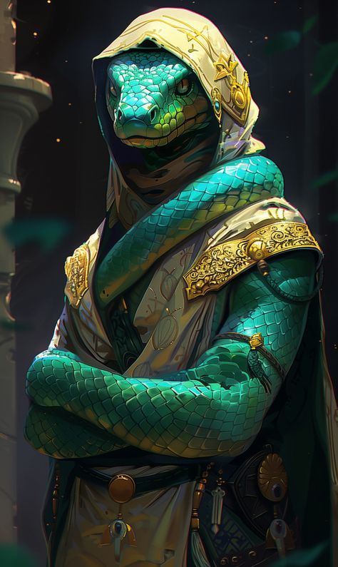
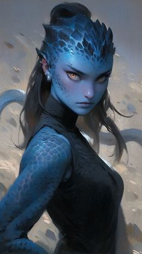
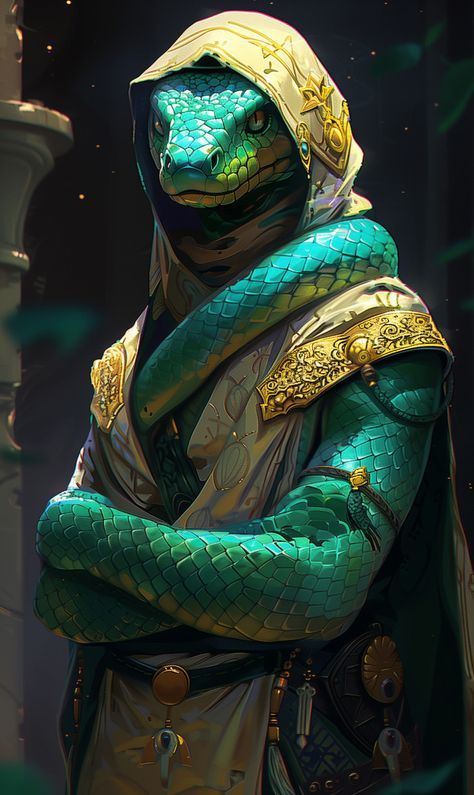
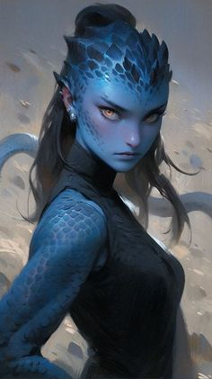
This tribe of humanoids, distinguished by their lizard-like features, excels in the arts of survival and hunting. They lead a life of simplicity, dwelling within the swamps and other humid regions they call home. Renowned as formidable warriors, they possess an exceptional aptitude for enduring the harshest conditions. It is exceedingly rare to encounter them in proximity to, or in collaboration with, other cultures, whose advanced ways and intricate traditions they find excessively elaborate. They mostly refuse any contact with others, even feral beings, preferring instead the purity of a more unadorned existence. They are regarded as predatory ferals who avoid direct conflicts but stand resolutely against any threats, fiercely defending their territory.
Skills: Survival, Hunting, Brawl, Endurance, Detection, Craftsmanship, Rural Life, Athletics.
Personality traits: Aggressive, Opportunistic, Cautious, Calculative, Stoic, Resourceful, Independent, Serious, Fearless, Suspicious (Intolerant).
Strong attributes: Dexterity, Perception
−− Dexterity – Bedokkan hands and bodies are precise and controlled, ideal for careful strikes, climbing, and handling tools or weapons in hostile environments.
−− Perception – Living in swamps and hostile wetlands forces them to detect danger through subtle signs—movement in water, temperature shifts, changes in sound.
−− Constitution – Their cold-blooded biology and harsh surroundings forge hardy bodies capable of withstanding disease, fatigue, and environmental hardship.
Weak attributes: Charisma
−− Charisma – Withdrawn, taciturn, and often unsettling to others, Bedokkan struggle to connect with more sociable cultures and rarely inspire trust or sympathy.
Birth attributes: Stature 10~12, Height 10~11, Ego 9~10, Appearance 7~9, Luck 10, Balance 10
(Prefered) Allegiance: Neutral, Nature, Chaos, Ankou
Living environment: Marine and Forest
Nature: Predatory.
Totem: Brera, the Reclusive Tyrant.
Birth particularities: Feral - Natural Weapons / Armor - Stronger Natural Weapons - Tail (Morphological) - Amphibious (Morphological) - Hunter's Edge - Hunter - Fear Sense
Cultural particularities: - Aquatic Affinity - Flanking Affinity - Hunting Instinct - Affinity with Totem - Align with Totem [1PP]
Garukkan (Bird-folk)
 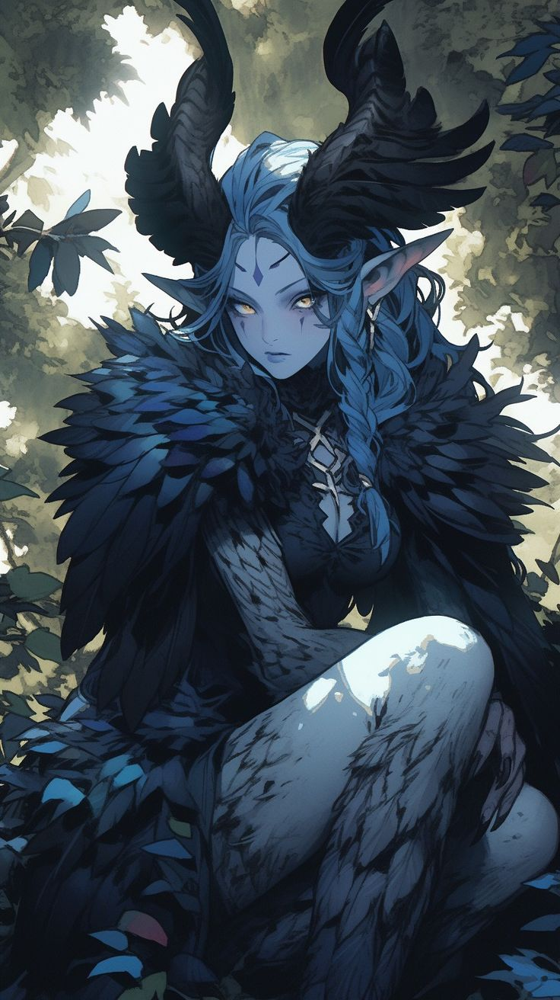
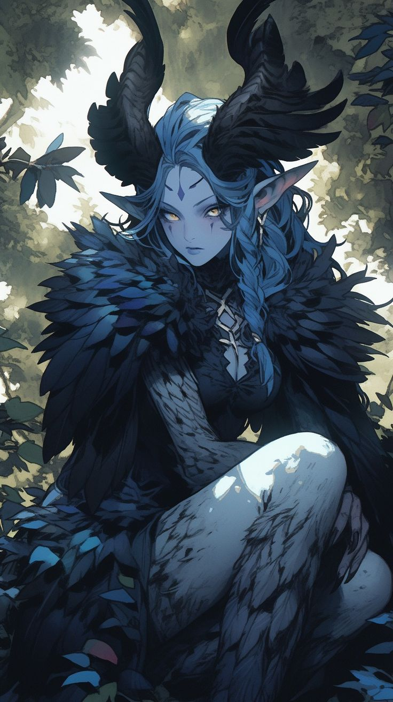

This ethnic group of feral beings embodies the diverse and varied aspects of birds. They are tenacious and self-assured, characterized by a considerable ego and a generally noteworthy eloquence. These beings readily integrate into human cultures, where they enjoy a certain renown, both for their noble appearance and their aptitude for sociability. However, this ethnicity suffers somewhat from the dispersion of its members, who rarely cultivate a sense of belonging to a common family. As a result, their numbers are few, and this is not likely to change soon. Among them, some are pacifists, while others, more akin to raptors, are predators who do not hesitate to resolve personal conflicts with bloodshed.
Skills: Acrobatics, Athletics, Persuasion, Communication, Endurance, Defense, Rural Life, Finesse.
Personality traits: Curious, Optimistic, Adventurous, Free-spirited, Bright, Expressive, Community-minded, Calm, Welcoming, Independent.
Strong attributes: Perception (x2), Willpower
−− Perception (x2) – Avian senses, especially sight, are exceptionally sharp. Garukkan see far, track motion easily, and read body language and atmospheres at a glance.
−− Willpower – Their strong egos and grounded self-image help them stay true to their path, resist manipulation, and persist through hardship.
Weak attributes: Constitution
−− Constitution – Light-boned and adapted to height and mobility rather than endurance, Garukkan endure less physical punishment than heavier ferals.
Birth attributes: Stature 8~10, Height 9~10, Ego 9~10, Appearance 10~12, Luck 10~12, Balance 9~10
(Prefered) Allegiance: Neutral, Nature, Dreams, Source
Living environment: Marine, Mountain, Forest
Nature: Predatory or Pacifist.
Totem: Reean, the Splendor of the Sky.
Birth particularities: Feral - Natural Weapons / Armor - Winged Creature (Morphological) - Survivability - Danger Sense
Cultural particularities: - Height Affinity - Freedom Instinct - Affinity with Totem - Align with Totem [1PP]
Luppan (Leporid-folk)


This ethnic group of feral beings consists of individuals who are generally laid-back and fond of a good life, yet also fearful and quick to flee rather than confront. They appear as humanoids with lupine traits, resembling rabbits or hares. They cherish life's pleasures and constantly devise numerous ways to avoid the toil of labor, earning them a somewhat tarnished reputation among other cultures that value merit and dedication. It is said that fortune smiles upon them, and whether true or not, this belief grants them a certain audacity in risky situations, although they still prefer to avoid such scenarios. Naturally, these people are pacifists and are also excellent artists. They are considered pacifist ferals who do not seek direct conflict... In fact, they avoid ALL conflicts.
Skills: Art, Finesse, Discretion, Communication, Persuasion, Acrobatics, Survival, Subterfuge.
Personality traits: Cautious, Nervous, Alert, Community-minded, Loyal, Hardworking, Patient, Indulgent, Homebound, Sensitive.
Strong attributes: Agility, Charisma, Luck
−− Agility – Quick legs and reactive bodies make Luppans experts at dodging, fleeing, and acrobatic maneuvers.
−− Charisma – Their softness, expressiveness, and sociable nature make them endearing and persuasive, even when they try to avoid responsibility.
−− Luck – Stories claim fortune smiles on them. Somehow, situations tend to turn just enough in their favor for them to escape disaster… most of the time.
Weak attributes: Balance
−− Balance – Luppans lack inner harmony. Their fear, stress, and indulgent tendencies make them vulnerable to fatigue, panic, corruption, or emotional breakdown when pressure mounts.
Birth attributes: Stature 8~10, Height 9~10, Ego 7~9, Appearance 11~13, Luck 10~13, Balance 8~10
(Prefered) Allegiance: Neutral, Nature, Dreams, Silence
Living environment: Forest and Rural
Nature: Pacifist.
Totem: Zolir, the Little One.
Birth particularities: Feral - Natural Weapons / Armor - Speedster - Survivability - Danger Sense
Cultural particularities: - Prudence Affinity - Alert Instinct - Affinity with Totem - Align with Totem [1PP]
Leokkan


This ethnic group of feral beings comprises feline humanoids, bearing the traits of tigers, leopards, or cheetahs. They form a disparate populace without real attachments, moving in small, nomadic communities when gathered. Driven by an innate and intense selfishness, they remain indifferent to the rest of the world, guided by a keen sense of hunting and self made traditions. This people is highly predatory.
Skills: Melee, Hunting, Detection, Athletics, Finesse, Survival, Subterfuge, Persuasion.
Personality traits: ?.
Strong attributes: Dexterity (x2), Charisma
−− Dexterity (x2) – Leokkans are precision hunters: their strikes, movements, and manipulations are smooth, controlled, and deadly efficient.
−− Charisma – Even when selfish, they radiate a predatory charm and self-confidence that can fascinate or intimidate those around them.
Weak attributes: Constitution
−− Constitution – Built for speed and impact rather than endurance, Leokkan bodies burn energy fast and handle prolonged strain less effectively than sturdier ferals.
Birth attributes: Stature 10~11, Height 10, Ego 10, Appearance 8~10, Luck 10~11, Balance 8~10
(Prefered) Allegiance: Neutral, Chaos, Ankou, Ambition
Living environment: This information has not yet been written down
Nature: Predatory.
Totem: Ekneas, the Gracious Beast.
Birth particularities: Feral - Natural Weapons / Armor - Stronger Natural Weapons - Fast to Act - Hunter - Fear Sense
Cultural particularities: - Chasing Affinity - Rivality Affinity - Bestial Instincts - Affinity with Totem - Align with Totem [1PP]
Cervikkan


This ethnic group of feral beings consists of cervine humanoids, adorned with antlers that grow more majestic (and cumbersome) with age. They are imbued with ego and self-confidence, yet they generally match their words with deeds. Though not the most skilled or formidable warriors, they do not forsake their values in the face of adversity. They hold oral traditions and legends in high esteem. Above all, they are pacifists.
Skills: Rural Life, Hunting, Detection, Persuasion, Athletics, Survival, Defense, Know How.
Personality traits: ?.
Strong attributes: Constitution, Willpower, Perception
−− Constitution – Life in forests, constant vigilance, and physical trials give Cervikkans resilient bodies able to endure long journeys and harsh climates.
−− Willpower – Proud and value-driven, they cling firmly to their beliefs, stories, and promises even when it would be easier to bend.
−− Perception – As wary forest dwellers, they are keenly attuned to sounds, movements, and disturbances in their environment, spotting danger or visitors early.
Weak attributes: Cunning
−− Cunning – Cervikkans are often straightforward and idealistic. They prefer honesty and tradition over schemes, which makes them less apt at manipulation, trickery, or political games.
Birth attributes: Stature 10~11, Height 11~12, Ego 10~12, Appearance 10~12, Luck 7~10, Balance 8~10
(Prefered) Allegiance: Neutral, Source, Heritage, Faith
Living environment: This information has not yet been written down
Nature: Pacifist.
Totem: Cevdos, the Father of All Lands.
Birth particularities: Feral - Natural Weapons / Armor - Horns (Morphological) - Steadfast Resolve - Survivability - Danger Sense - Hornamental Magic Tradition
Cultural particularities: - Honor and Oath Affinity - Oath Instinct - Affinity with Totem - Align with Totem [1PP]
Razzan (Rat-folk)


This ethnic group of feral beings consists of individuals who have the appearance of humanoids with rodent traits, such as rabbits or hares. They are industrious and do not shy away from hard work. Clever, helpful, and tireless workers, they are not known for artistic talents but are instead connoisseurs of fine food. They love to snack throughout the day and hold a genuine reverence for the various meals. Generally easy-going and amiable, they are highly appreciated by those around them.
Skills: Craftsmanship, Rural Life, Know How, Medicine, Detection, Communication, Hunting, Survival.
Personality traits: Opportunistic, Resourceful, Curious, Secretive, Envious, Cautious, Spontaneous, Chaotic, Suspicious (Intolerant), Independent.
Strong attributes: Perception, Cunning, Agility
−− Perception – Razzans constantly scan their surroundings for opportunities, scraps, threats, and exits, giving them finely-tuned senses.
−− Cunning – They are practical survivors: clever, adaptable, and good at finding the easiest path through social or material obstacles.
−− Agility – Small, quick, and nimble, they slip through gaps, dodge danger, and maneuver easily in cramped or cluttered environments.
Weak attributes: Willpower
−− Willpower – Their flexibility and opportunism make them less resistant to pressure, temptation, or intimidation; they tend to yield or adapt rather than stand firm.
Birth attributes: Stature 9, Height 9, Ego 11, Appearance 8, Luck 13
Birth attributes: Stature 8~9, Height 5~7, Ego 7~9, Appearance 10~11, Luck 9~13, Balance 9~13
(Prefered) Allegiance: Neutral, Chaos, Reason, Steam
Living environment: Subterranean, City-dwelling, Rural
Nature: Pacifist.
Totem: Merro, the Avid Crawler.
Birth particularities: Feral - Natural Weapons / Armor - Tail (Morphological) - Maniac - Survivability - Danger Sense
Cultural particularities: - Small Affinity - Avid Instinct - An Ally in Each City - Affinity with Totem - Align with Totem [1PP]
Peskkan


This ethnic group of feral beings comprises humanoids with traits derived from various fish, inheriting features from graceful dolphins to mysterious octopuses and formidable sharks. They live in varying degrees of cooperation with the blue elves, who share their preferred habitats, and remain rather distant from humanoids in general, convinced that the latter do not sufficiently respect the land of their birth. Members of this species intermingle regardless of their bestial ancestry, resulting in a highly disparate society.
They are either pacifists or predators depending on their sub-ethnicity, but if they seek conflict, it is usually on an individual basis.
Skills: Survival, Occultism, Detection, Hunting, Investigation, Spiritism, Acrobatics, Subterfuge.
Personality traits: ?.
Strong attributes: Agility, Willpower, Perception
−− Agility – Adapted to water, currents, and three-dimensional movement, Peskkan are naturally fluid and quick, both in and out of water.
−− Willpower – Their close link to the mysteries of the sea and occult currents grants them inner resolve; they often follow their own path despite outside expectations.
−− Perception – Sensitive to vibrations, pressure changes, and aquatic flows, they perceive subtle cues in their environment that others would miss.
Weak attributes: Charisma
−− Charisma – Distant, cryptic, and often judgmental toward land-dwellers, Peskkan find it difficult to truly integrate or be understood by other peoples.
Birth attributes: Stature 10~11, Height 8~11, Ego 8~10, Appearance 8~11, Luck 8~11, Balance 8~11
(Prefered) Allegiance: Neutral, Nature, Source, Dreams
Living environment: This information has not yet been written down
Nature: Predatory or Pacifist.
Totem: Edea, the Mother of All Sees.
Birth particularities: Feral - Natural Weapons / Armor - Stability - Amphibious (Morphological) - Yoke of the Waters - If Pacifist : Survivability and Danger Sense - If Predatory : Hunter and Fear Sense
Cultural particularities: - Water Affinity - Watery Instinct - Affinity with Totem - Align with Totem [1PP]
Taurran

 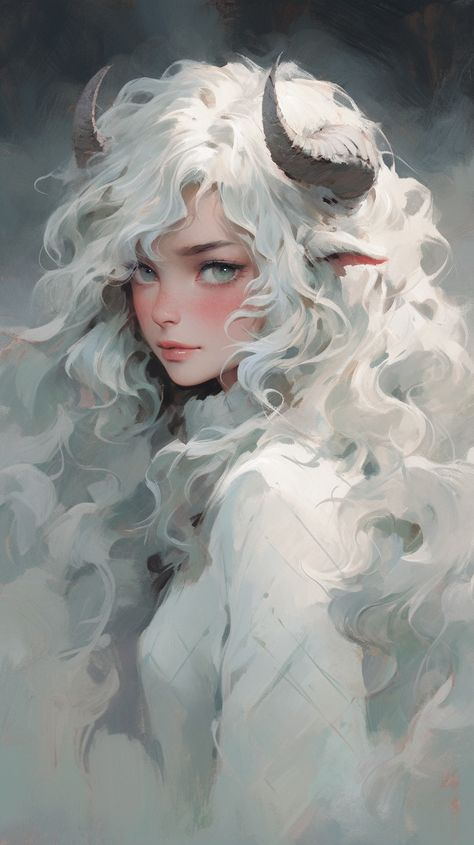
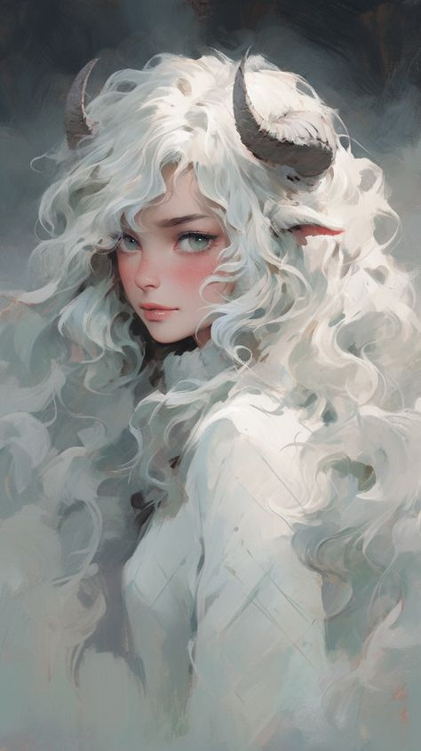
This tribe of humanoids with bull-like features, complete with horns and a robust frame, as muscular and intimidating as they are composed and respectful. Though they possess a hot-headed temperament, they maintain a notable martial culture based on instinct and controlled fury. Despite their impulsive nature, they are a fundamentally reasonable people, primarily nomadic, roaming the vast expanses of the Morrian lands. They are rare and live in scattered clans, nestled in underground areas or ruins which saw them for their tranquility and their immensity. A good number of them live alone, far from all social ties, it's a kind of lifestyle that pushes them to refocus on themselves. Their code of honor revolves around strength and wisdom, embodying a balanced blend of body and mind. They are pacifists, but of a type that few predators seek quarrels with.
Skills: Melee, Athletics, Endurance, Survival, Defense, Tactical, Brawl, Rural Life.
Personality traits: ?.
Strong attributes: Strength (x2), Constitution, Wisdom
−− Strength (x2) – Taurrans are mountains of muscle. Their bodies are made for heavy loads, powerful blows, and raw physical dominance.
−− Constitution – Their lifestyle—nomadic, harsh, and often solitary—demands great endurance and physical stability.
−− Wisdom – Despite their hot temper, their culture emphasizes inner balance, respect, and practical understanding of life, giving them grounded judgment.
Weak attributes: Cunning
−− Cunning – Taurrans favor honor, instinct, and direct confrontation over plotting. Subtle political maneuvering or long-term manipulation is not their forte.
Birth attributes: Stature 11~13, Height 11~13, Ego 6~10, Appearance 8~11, Luck 7~10, Balance 10~12
(Prefered) Allegiance: Neutral, Source, Heritage, Silence
Living environment: This information has not yet been written down
Nature: Pacifist.
Totem: Siion, the Majestuous Horned Lord.
Birth particularities: Feral - Natural Weapons / Armor - Stronger Natural Armor - Horns (Morphological) - Force of Nature - Bull Stance - Survivability - Danger Sense - Hornamental Magic Tradition
Cultural particularities: - Big Affinity - Slow Affinity - Unknown Instinct - Affinity with Totem - Align with Totem [1PP]
Cursed Feral ethnics
Oni (onikkan) (Jackal-folk)

 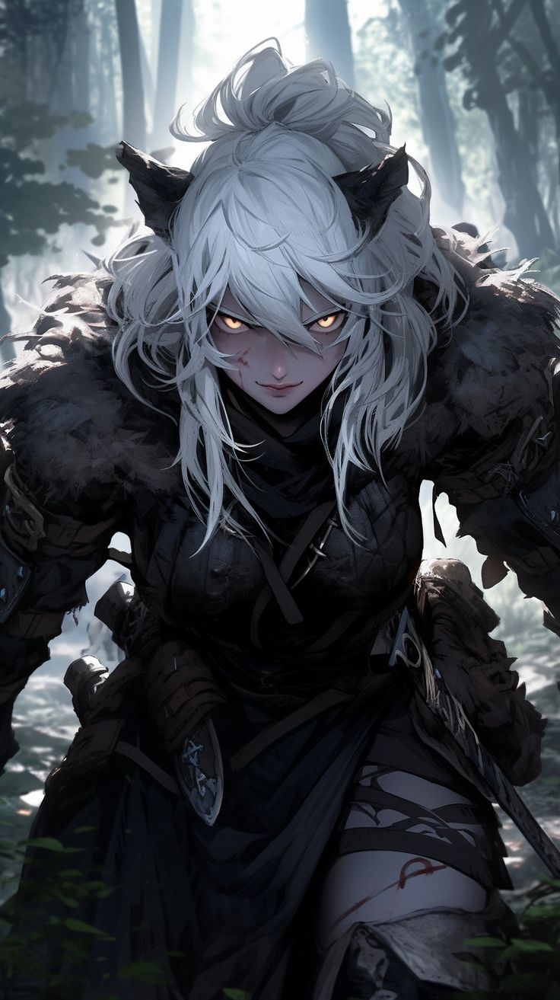
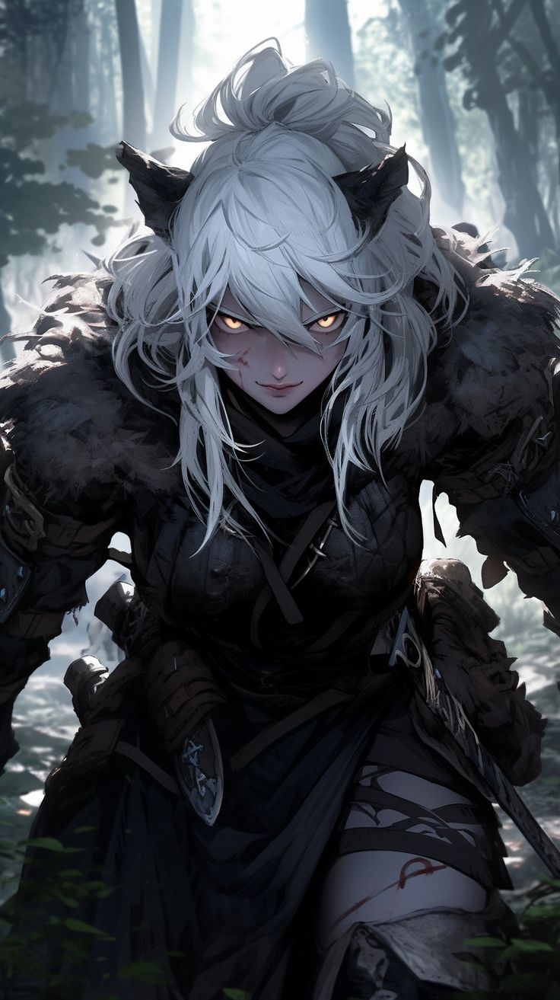
The Oni are cousins of the Okkans, humanoids with wolf features. Physically they are distinguished by a denser coat and/or darker tons.
As with the other so-called cursed ferals, they are touched by what some may describe as an illness which makes them associable at best, they therefore evolve little in society and when this is the case violence reigns supreme.
The evil that afflicts the Oni is resentment and jealousy, prompt to violent urge.
They are true predators.
Skills: Melee, Brawl, Endurance, Athletics, Subterfuge, Detection, Mysticism, Occultism.
Personality traits: Opportunistic, Aggressive, Cunning (Calculative), Suspicious (Intolerant), Fearless, Envious, Resourceful, Rebellious, Secretive, Impatient.
Strong attributes: Strength, Dexterity, Perception
−− Strength – Their predatory nature and constant physical conflicts forge powerful, aggressive bodies suited for brutal combat.
−− Dexterity – Oni are quick and precise, combining feral reflexes with lethal accuracy in claws, weapons, and ambushes.
−− Perception – As hunters driven by jealousy and resentment, they are highly attuned to scents, tracks, and subtle movements of prey and rivals.
Weak attributes: Luck
−− Luck – Marked by resentment and violent impulses, Oni seem followed by misfortune—broken alliances, bloody feuds, and catastrophes often arise around them.
Birth attributes: Stature 10~11, Height 10~11, Ego 10~11, Appearance 7~9, Luck 7~10, Balance 8~10
(Prefered) Allegiance: Neutral, Chaos, Ankou, Ambition
Living environment: Forest, Nomadic, Desert (hot/cold), Mountain
Nature: Predatory.
Totem: Ouros, the Disastrous Fang.
Birth particularities: Feral - Natural Weapons / Armor - Stronger Natural Weapons - Blood Lust - Hunter - Fear Sense
Cultural particularities: - Blood Affinity - Blood Instincts - Blood Critical - Affinity with Totem - Align with Totem [1PP]
Kitsune

 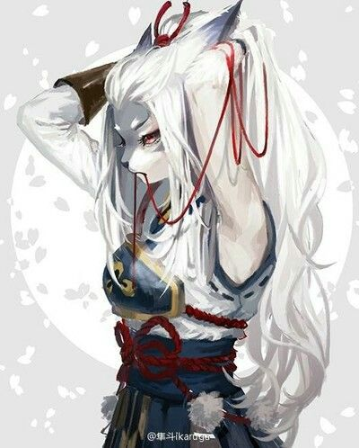
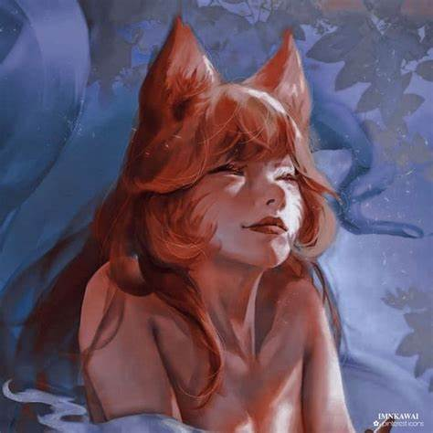
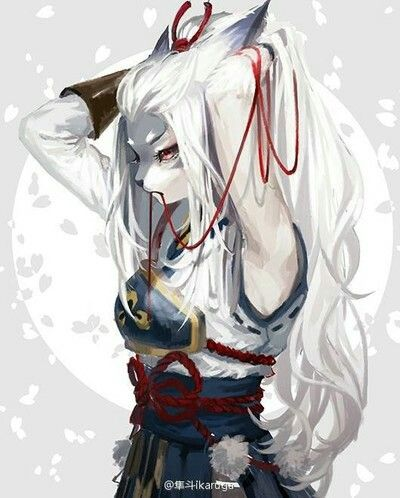
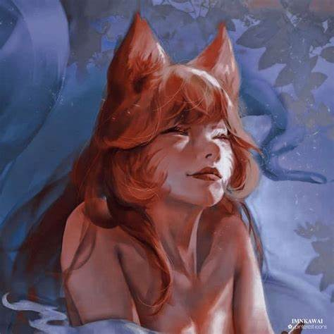
The Oni are cousins of the Okkans, humanoids with fox features. Physically they are distinguished by the presence of multiple tails, particularly bushy, and by red tones.
As with the other so-called cursed ferals, they are touched by what some may describe as an illness which makes them associable at best, they mosty never unit as a clan, driven by a personality focused exclusively on themselves.
The evil that afflicts the Oni is curiosity and frivolity, nothing is really serious to them, not even life.
They are somewhat neutral and doesn't define themselves as pacifists or predators, more like mediators or something alike.
Skills: Subterfuge, Discretion, Persuasion, Mysticism, Spellcrafting, Occultism, Detection, Finesse.
Personality traits: Curious, Playful, Opportunistic, Spontaneous, Expressive, Free-spirited, Trickster (Liar), Energetic, Independent, Indulgent.
Strong attributes: Charisma, Cunning, Magic
−− Charisma – Kitsune charm, seduce, and manipulate with ease. Their playful demeanor and beauty draw attention wherever they go.
−− Cunning – Trickery, curiosity, and mischief define them. They excel at lies, illusion, and bending reality—socially or mystically—to their whims.
−− Magic – Their nature is intertwined with mysticism and fox-spirits; Kitsune instinctively grasp illusions, glamours, and subtle occult forces.
Weak attributes: Luck
−− Luck – Their frivolity and disregard for consequences often backfire. Jokes go too far, risks pile up, and fate eventually demands a price.
Birth attributes: Stature 9~10, Height 9~10, Ego 10~12, Appearance 10~12, Luck 10~12, Balance 6~9
(Prefered) Allegiance: Neutral, Dreams, Reason, Ambition
Living environment: Forest, Nomadic, Desert (hot/cold), Mountain, Rural
Nature: Pacifist or Predatory.
Totem: Eaos, the Mischivious Hundred Tails.
Birth particularities: Feral - Natural Weapons / Armor - Favored Save : Fortune - If Pacifist : Survivability and Danger Sense - If Predatory : Hunter and Fear Sense
Cultural particularities: - Curiosity Affinity - Ingenious Affinity - Curious Instinct - Affinity with Totem - Align with Totem [1PP]
Tengu (Raptor-folk)

 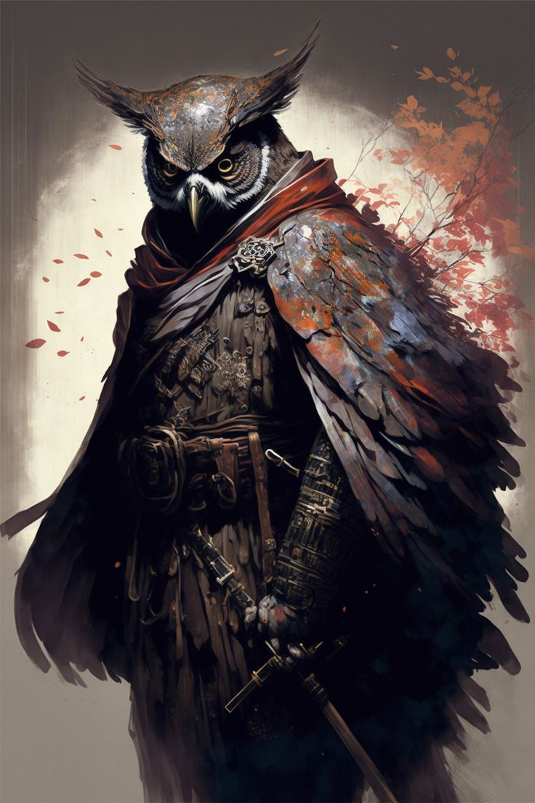
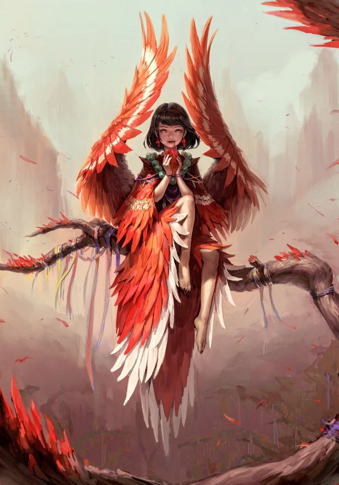
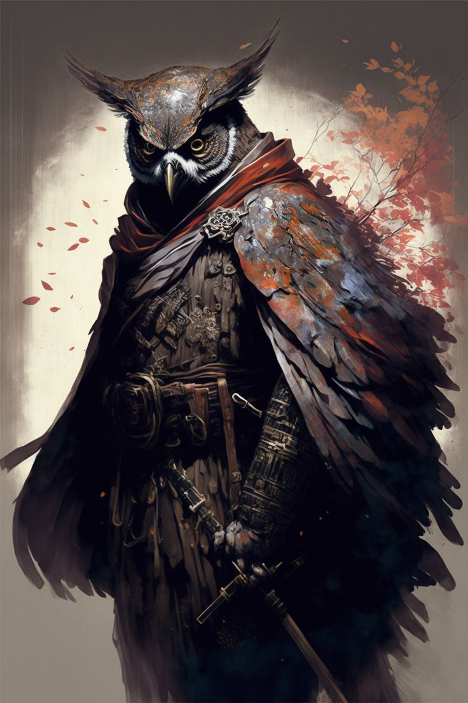
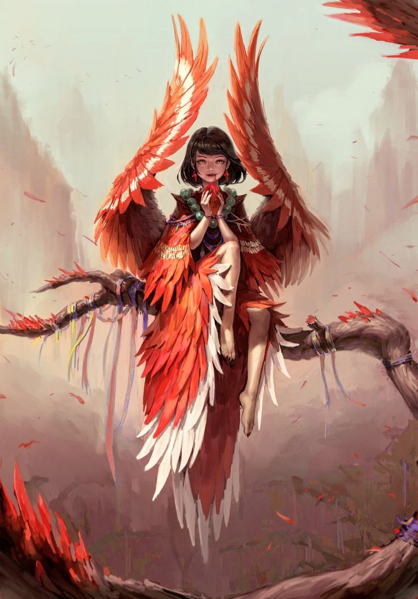
The Tengu are bird-like humanoids who embody the darker, more aggressive aspects of their avian lineage. While the Garukkan exhibit sociability and pride, the Tengu embrace tenacity, independence, and cunning with a more ominous undertone. Known for their eloquence and intelligence, Tengu are highly self-assured, with a significant ego that often leads to isolation from others, even within their own kind. Unlike the Garukkan, who enjoy mingling with other societies, the Tengu view the world with suspicion and prefer to operate alone or in small, tightly knit groups.
Tengu are natural predators, and some are known to resolve conflicts with lethal efficiency. Tengu society is loosely structured, lacking a true sense of community, as most members act according to personal codes of honor or vendettas. These dark, solitary beings are rarely seen in friendly terms with other cultures and are often feared or misunderstood for their ruthlessness and fierce independence.
Skills: Acrobatics, Detection, Athletics, Brawl, Finesse, Survival, Communication, Throw.
Personality traits: Aggressive, Ambitious, Competitive, Fearless, Proud (Pretentious), Rebellious, Opportunistic, Energetic, Reckless, Independent.
Strong attributes: Intelligence (x2), Perception, Cunning
−− Intelligence (x2) – Tengu are sharp, analytical thinkers, obsessively dissecting tactics, grudges, and rivalries; their minds are honed for strategy and calculated conflict.
−− Perception – As raptors, they possess razor-sharp sight and awareness, spotting weaknesses, movements, and distant targets with ease.
−− Cunning – Ambitious, competitive, and ruthless, Tengu are excellent strategists on a small scale—duels, ambushes, and personal vendettas.
Weak attributes: Constitution, Luck
−− Constitution – Lean and built for speed rather than durability, Tengu do not handle prolonged punishment or attrition as well as sturdier ferals.
−− Luck – Their arrogance, reckless choices, and appetite for conflict attract retaliation and misfortune: they often create their own downfall.
Birth attributes: Stature 8~10, Height 9~10, Ego 10~12, Appearance 8~10, Luck 8~10, Balance 10~12
(Prefered) Allegiance: Neutral, Dreams, Reason, Sciences
Living environment: Marine, Mountain, Forest
Nature: Predatory.
Totem: Fydall, the Boundless Nightmare.
Birth particularities: Feral - Natural Weapons / Armor - Winged Creature (Morphological) - Favored Recovery : Spirituality (PS) - Hunter - Fear Sense
Cultural particularities: - Height Affinity - Erudition - Bookworm - Practical Instinct - Affinity with Totem - Align with Totem [1PP]
Razkkan


The Skaven are rat-like humanoids living in tunnels, ruins, and hidden areas. They are highly cunning and ruthless, with a society driven by personal gain and constant infighting. Known for their stealth, larceny, and survival skills, Skaven are adept at infiltration and scavenging, often using poisons, diseases, and crude technologies to their advantage. They rarely cooperate with others and are notorious for betrayal.
Skills: Larceny, Subterfuge, Occultism, Discretion, Detection, Urban Life, Investigation, Brawl.
Personality traits: ?.
Strong attributes: Agility, Cunning, Perception
−− Agility – Razkkan skitter through ruins, sewers, and tunnels with ease, climbing, dodging and fleeing in tight, hazardous spaces.
−− Cunning – Their entire society revolves around schemes, betrayals, and self-interest. Every Razkkan learns to think crooked to survive.
−− Perception – Used to filth, darkness, and unstable environments, they are quick to notice cracks, sounds, movement, and exploitable details others miss.
Weak attributes: Willpower, Luck
−− Willpower – Addiction to power, fear, and paranoia make them easy prey to domination, panic, or mass hysteria.
−− Luck – Surrounded by disease, collapsing lairs, treachery and dangerous experiments, Razkkan are almost cosmically unlucky—only their cunning keeps them alive.
Birth attributes: Stature 8~9, Height 6~8, Ego 10~12, Appearance 7~8, Luck 7~11, Balance 9~13
(Prefered) Allegiance: Neutral, Chaos, Ankou, Steam
Living environment: This information has not yet been written down
Nature: Predatory.
Totem: Zegen, the Rotten Ambition.
Birth particularities: Feral - Natural Weapons / Armor - Plagued - Hunter - Fear Sense
Cultural particularities: - Filth Affinity - Malicious Instinct - Malicious Expertise - Affinity with Totem - Align with Totem [1PP]
Urssian (Grizzly-folk)
 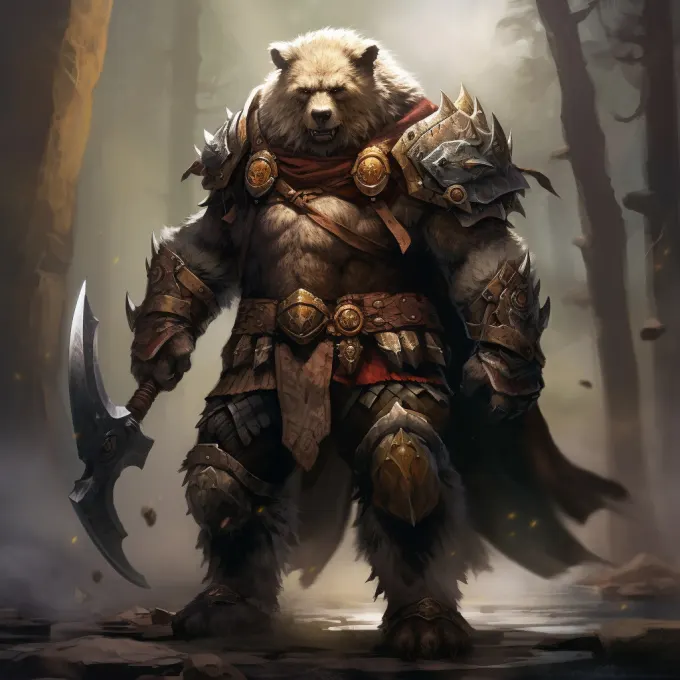
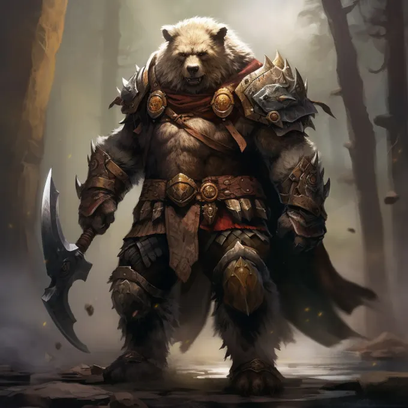


The Urssian are a feral ethnicity similar to the Koddans, but with a more aggressive and violent culture. Known for their sheer physical strength and a social structure that values might above all, Urssians believe that power determines status and respect. They are often found in rugged, mountainous regions, where they maintain a life of endurance and combat readiness. Conflict and displays of dominance are central to their way of life.
Skills: Melee, Defense, Endurance, Athletics, Craftsmanship, Detection, Rural Life, Tactical.
Personality traits: Stoic, Imposing, Aggressive, Loyal, Protective (Alert), Hardworking, Stubborn, Serious, Cautious, Resentful.
Strong attributes: Strength, Constitution (x2)
−− Strength – Urssians are walking siege engines: their physical might surpasses most ferals and allows devastating blows in combat.
−− Constitution (x2) – Their bodies are built to endure cold, injuries, and exhaustion. They can keep fighting, working, or traveling long after others fall.
−− Willpower – Their culture of dominance and endurance forges unbending resolve; once an Urssian commits to a course, turning back is rare.
Weak attributes: Luck
−− Luck – Their culture of constant confrontation and dominance invites trouble—feuds, grudges, and brutal trials often stack the odds against them, even when they win.
Birth attributes: Stature 11~13, Height 12~14, Ego 10~12, Appearance 6~8, Luck 7~9, Balance 10~12
(Prefered) Allegiance: Neutral, Nature, Ankou, Heritage
Living environment: Cold Desert and Mountain
Nature: Predatory.
Totem: Udtar, the Juggernaut.
Birth particularities: Feral - Natural Weapons / Armor - Stronger Natural Armor - Hunter - Force of Nature - Unyielding Bulk - Fear Sense
Cultural particularities: - Mountain Affinity - Furious Instincts - Affinity with Totem - Frenzy Shoot - Align with Totem [1PP]
Minor Feral ethnics
Not all animal breeds are represented in the rules because some of them represent the majority of existing individuals/declinations, but there are many more than that in nature corresponding to minorities scattered here and there. We will then speak of minor feral ethnicity and in these cases it is proposed to use the profile of an equivalent major ethnicity.
| Ethnics | Animal | Attributes |
|---|---|---|
| Pandarran | Panda | Constitution, Wisdom |
| Raskkan | Shark | Stength, Cunning |
Ethnicities without cultural and/or racial properties get 1 PP for each missing list (as if they had chosen the disadvantage that turns these lists into 1 PP each).
Demie ethnics
Halfling


Halflings are small folk gifted with a disarming youthful appearance that makes suspicion slip right past them. Their round faces, bright eyes, and lively manners suggest innocence—even when they are far from it. This lack of perceived threat is both a blessing and a curse: they avoid trouble easily, yet they are rarely taken seriously, even when they should be.
Living mostly among human societies—and, more rarely, elven ones—Halflings blend effortlessly into larger cultures, adapting to their customs while keeping their own traditions mostly unspoken. A long-standing rumor claims they have a homeland of their own, a hidden place of green hills and cozy burrows. Halflings themselves speak of it fondly, yet none can say if it truly exists. They were taught never to seek it, as if the myth itself mattered more than the truth; a story they cling to for comfort, identity, or perhaps something deeper.
Behind their cheerful faces lie sharp instincts for survival, negotiation, and quiet mischief—traits born from a life lived on the edge of obscurity.
Skills: Persuasion, Discretion, Acrobatics, Larceny, Survival, Negotiation, Finesse, Communication.
Personality traits: Friendly, Playful, Optimistic, Curious, Resourceful, Homebound, Community-minded, Indulgent, Talkative (Loudmouth), Avoidant.
Strong attributes: Dexterity, Agility, Cunning, Luck (x2)
−− Dexterity – Small hands, nimble fingers, and a natural talent for subtle manipulation make Halflings excellent pickpockets, cooks, tinkerers, and lockbreakers.
−− Agility – Light, quick, soft-footed, and unpredictable, they move gracefully through crowds and tight spaces that larger folk cannot navigate.
−− Luck (x2) – Fortune truly seems to love them. Coin flips, daring escapes, risky gambles, and improbable coincidences routinely go their way.
−− Cunning – Their innocent appearances conceal quick thinking. Halflings understand people, twist situations to their advantage, and improvise solutions in charmingly sneaky ways.
Weak attributes: Strength, Constitution, Charisma, Willpower
−− Strength – Small stature means little raw power. They rely on agility and cleverness, not force.
−− Constitution – They are not built for hard labor, prolonged suffering, or harsh climates; they prefer comfort and safety.
−− Charisma – They are liked, yes, but not respected. Their childish looks and carefree manners make it hard for others to take them seriously.
−− Willpower – Halflings avoid conflict, trouble, and responsibilities. Their indulgent habits and reluctance to commit make them less resistant to manipulation or pressure.
Birth attributes: Stature 8~9, Height 6~7, Ego 7~10, Appearance 10~12, Luck 10~13, Balance 6~10
(Prefered) Allegiance: Neutral, Chaos, Dreams, Ambition
Living environment: Rural or City-dwelling
Family: Small Folks
Nature: Impure Beings
Birth particularities: Demie - Quick Feets - Favored Recovery : Karma (PK) - Favored Save : Composure - Cautious
Cultural particularities: - Thievery Affinity - Food Affinity - 4th Breakfast - Lightfoot
Dryavid / Treefolks

 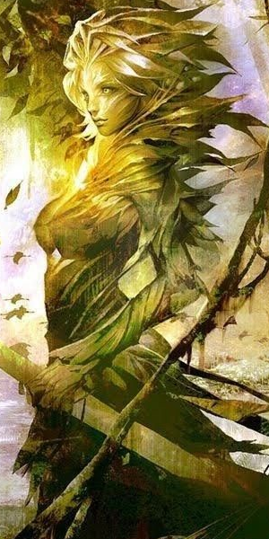
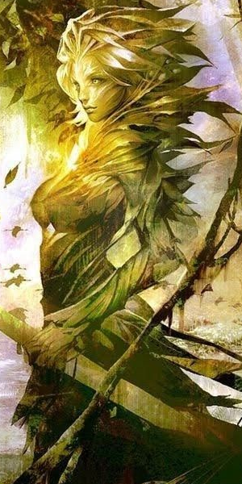
Dryavids are beings of living wood and sap, guardians of secluded groves and ancient spirits. They coexist closely with Sylvanian elves, sharing values, culture, and an intimate reverence for the forest. While Dryavids understand elven society, they rarely partake in it fully, preferring the quiet sanctuaries hidden deep within the wilderness.
Their temperament contrasts sharply with that of their long-standing counterparts, the Nymphs. Though both peoples embody nature, they do so through very different philosophies. Dryavids are direct, unwavering, and at times uncompromising—living embodiments of the forest's immutable laws. Nymphs, on the other hand, tend to be fluid, playful, charming, and subtly unpredictable.
This divergence often leads to a gentle rivalry: Dryavids view Nymphs as overly capricious and lacking discipline, while Nymphs see Dryavids as overly rigid and humorless. These tensions are rarely hostile, but they shape centuries of cultural teasing, disagreements, and competitive pride between the two races.
Despite this, when the forest is threatened, Dryavids stand among its fiercest protectors, wielding ancient strength and deep-rooted resolve.
Not to be confused with treants, which is a monstrous version of this people.
Skills: Spellcasting, Survival, Meditation, Craftsmanship, Erudition, Defense, Hunting, Subterfuge.
Personality traits: Calm, Patient, Conservative, Community-minded, Principled, Serious, Forgiving, Warm, Measured, Cautious.
Strong attributes: Constitution, Wisdom
Weak attributes: None
Birth attributes: Stature 10~11, Height 9~10, Ego 10~11, Appearance 8~10, Luck 10, Balance 10~11
(Prefered) Allegiance: Neutral, Nature, Silence, Heritage
Living environment: Forest
Family: Small Folks
Nature: Pure or Impure Beings
Birth particularities: Demie - Natural Armor - Living Wood - Favored Save : Insight - All Senses Out
Cultural particularities: - Forest Affinity - Wood Affinity - Strongness - Totem Carving
Celestial


Celestials are radiant beings who dwell high above Thalifen on floating islands where order, law, and discipline form the core of civilization. They do not concern themselves with moral “good,” but rather with absolute order, which they see as the foundation of existence. Their society is rigid and structured, where every action is regulated and every transgression is a sacrilege.
Those who violate these sacred rules face exile—a punishment more severe than death for a Celestial. Most inhabitants of Thalifen have only ever encountered these exiles, for the Celestial realm remains almost entirely inaccessible to mortals. Even stripped of their status, exiled Celestials often retain the pride and aloofness of their people, viewing the world below as chaotic, primitive, and unbearably undisciplined.
Yet exceptions exist. Throughout history, a handful of Celestials have forged meaningful bonds with terrestrial peoples, such as the famed Alluren, whose exile aided the creation of Sylvengarde. Some Celestials, like the Valkyries, even allow themselves to be venerated by mortal cultures, acting as martial spirits or divine emissaries.
A Celestial's presence commands respect, but behind their luminous beauty lies a mind shaped by strict doctrine—and a heart rarely given freely.
Skills: Spellcasting, Erudition, Defense, Tactical, Persuasion, Meditation, Leadership, Endurance.
Personality traits: Serious, Principled, Conservative, Organized, Disciplined, Leader, Cold, Patient, Judgmental (Critical), Conformist.
Strong attributes: Charisma, Willpower (x2), Magic (x2)
Weak attributes: Perception, Cunning
Birth attributes: Stature 10, Height 10, Ego 11~13, Appearance 11~13, Luck 5~8, Balance 10~12
(Prefered) Allegiance: Neutral, Magic, Arcanes, Faith
Living environment: City-dwelling, Urban, Rural
Family: Divine Folks
Nature: Pure Beings
Birth particularities: Divine - Favored Save - Celestial Light - Celestial Heart - Winged Creature (Morphological) - Immaculate - Eternal Youth
Cultural particularities: - Light Affinity - Order Affinity - Cantrips - Demanding - Karmic Vision - Supra Vision - Celestial Powers [1PP]
Fairies


Fairies are graceful, winged beings roughly half the height of a human—slightly taller than Halflings yet far lighter. They are whimsical, capricious, and irresistibly curious, embracing life as a kaleidoscope of sensations and emotions. Their moods shift with the wind: playful laughter one moment, spiteful mischief the next.
Though often charming, Fairies are known for their volatile tempers and their notorious inability to accept defeat. A fairy scorned may unleash a cascade of pranks, illusions, or unsettling tricks—not deadly, but certainly memorable, and sometimes genuinely dangerous. The wrath of a Fairy, once provoked, can linger far longer than expected.
Their societies favor artistic expression, freedom, and the surreal logic of dreams. Fairies wander through forests and coastal regions, dancing between sunlight and moonbeams, shaping the world subtly with their magic. They are neither benevolent nor malevolent—merely true to their nature: emotional, impulsive, and endlessly enchanted by secrets and stories.
Not to be confused with pixies, which is a monstrous version of this people.
Skills: Spellcasting, Acrobatics, Discretion, Subterfuge, Persuasion, Negotiation, Finesse, Art.
Personality traits: Playful, Spontaneous, Energetic, Expressive, Curious, Emotional (Sensitive), Reckless, Opportunistic, Indulgent, Loudmouth.
Strong attributes: Cunning, Luck, Magic
Weak attributes: Strength, Constitution
Birth attributes: Stature 3~5, Height 3~5, Ego 11~14, Appearance 11~14, Luck 10~14, Balance 10~12
(Prefered) Allegiance: Neutral, Dreams, Chaos, Magic
Living environment: Forest and Marine
Family: Small Folks
Nature: Pure Beings
Birth particularities: Small Folk - Flight Movement - Windborne - Winged Creature (Morphological) - Keep Best
Cultural particularities: - Dream Affinity - Selfishness Affinity - Whimsical Magic Tradition - Flutterstep
Qunari


The Qunari are a horned people known for their imposing stature and austere discipline. Their society follows a rigid doctrine called the Line, which teaches that every individual—regardless of strength, age, or rank—is responsible for maintaining the cohesion of the whole. Leadership among the Qunari is not fixed by birth or authority but granted temporarily to those whose competence best suits the situation, making their hierarchy fluid, adaptive, and surprisingly egalitarian.
Communities gather around large communal halls where decisions are made collectively through structured, ritualized debate. Endurance—physical, mental, and moral—is the cornerstone of Qunari identity. Emotional restraint is considered a form of wisdom, and their philosophy, although not a religion, holds that life gains meaning through discipline, clarity of purpose, and stability.
Qunari rarely assimilate into foreign cultures, which they often perceive as chaotic or lacking in foundational rigor. Still, individuals who struggle with the Line—or who simply seek a different path—sometimes abandon their homeland, becoming wanderers, mercenaries, or diplomats of circumstance.
Despite their stoic exterior, Qunari are not emotionless. They simply shape their emotions as they shape their bodies. Even those of frail build are expected to cultivate strength of mind and duty. Outsiders often misinterpret their seriousness as humorless solemnity, yet Qunari communities prize a form of ritualized irony: a dry, expressionless wit exchanged without smiles—both a cultural bonding tool and a subtle test of intellect. To most foreigners, this is as incomprehensible as it is unsettling.
<> Qunaris possess what scholars call the Memory of Iron: Their horn structure contains dense mineral fibers that subtly vibrate in the presence of emotional tension. Trained Qunaris can “read” these vibrations in others of their kin, sensing anxiety, aggression, hesitation, or determination without a word spoken. This gives them exceptional synchronicity in combat formations and makes Qunari warbands notoriously difficult to outmaneuver.
Skills: Melee, Tactical, Endurance, Leadership, Defense, Athletics, Persuasion, Survival.
Personality traits: Disciplined, Serious, Organized, Stoic, Leader, Conservative, Loyal, Measured, Cautious, Unshakeable.
Strong attributes: Strength, Dexterity, Charisma, Willpower
Weak attributes: Luck, Balance
Birth attributes: Stature 11~12, Height 11~12, Ego 11~12, Appearance 7~9, Luck 6~8, Balance 10~12
(Prefered) Allegiance: Neutral, Source, Faith, Heritage
Living environment: Rural, City-dwelling, or Mountain
Family: Horned Folks
Nature: Impure Beings
Birth particularities: Horned Folk - Long Reach - Above Average - Horns (Morphological) - Hornamental Magic Tradition
Cultural particularities: - Community Affinity - Sacrifice Affinity - Tattoo - Training - Improved Tattoo [1PP] - Improved Training [1PP]
Nymphs


Nymphs are nature-born beings traditionally associated with forests, rivers, and glades. Though admired for their elegance, they are far from the idealized figures depicted in human folklore. Their culture is shaped by duality: gentleness and mischief, serenity and volatility. Nymphs value emotional expression as much as Dryavids value structure, creating a longstanding cultural tension between the two peoples.
In Nymph society, decisions are taken through circles, communal gatherings where opinions are weighed not by authority but by persuasive ability—a trait they cultivate rigorously from youth. They cherish beauty not as ornament, but as a form of truth, believing that aesthetics reflect the inner state of beings and environments.
Though peaceful in appearance, Nymphs possess a sharp sense of pride and can react strongly to disrespect or broken promises. Their relationships with outsiders tend to be selective: they are welcoming to those who show sensitivity to nature, yet distant or even playful-cruel toward those who do not.
Unlike Dryavids, who embody the stern, immutable laws of the forest, Nymphs represent its fluidity—its charm, its illusions, its gentler yet unpredictable rhythms. They embrace sensibility, diplomacy, and intuition, making them subtle negotiators and enchanting speakers. Their playful nature, however, masks a keen intellect and a deep understanding of the emotional currents around them. Tensions with Dryavids stem from these philosophical differences: Dryavids see Nymphs as too indulgent and whimsical, while Nymphs find Dryavids overly rigid and lacking in joy. Still, despite this rivalry, the two peoples stand united when nature calls for protectors.
<> Nymphs possess the Echo of Emotion: any strong feeling expressed near them leaves behind a faint, temporary impression—an echo—visible only to their senses. These echoes take the form of glimmers, subtle colors, or vibrations in the air, allowing Nymphs to read emotional “trails” left by others. This makes them extraordinary mediators… and dangerously insightful antagonists.
Skills: Spellcasting, Survival, Meditation, Craftsmanship, Defense, Finesse, Negotiation, Swimming.
Personality traits: Warm, Expressive, Curious, Sensitive, Persuasive (Confident), Community-minded, Indulgent, Opportunistic, Reactive (Impatient), Bright.
Strong attributes: Charisma (x2), Wisdom
Weak attributes: Balance
Birth attributes: Stature 8~9, Height 8~9, Ego 10, Appearance 12~16, Luck 6~8, Balance 8~12
(Prefered) Allegiance: Neutral, Dreams, Magic, Ambition
Living environment: Forest
Family: Wild Folks
Nature: Pure Beings
Birth particularities: Wild Folk - Too Pretty To Hit - Favored Save : Prestige - Mind of Nature - All Eyes on Me
Cultural particularities: - Oratory Affinity - Unarmored Affinity - Courageous Presence - Karmic Vision - Charm Carving
Trolls


Trolls are a nomadic horned people whose origins remain one of Thalifen's cultural enigmas. The few records that mention them describe their arrival from the far southern reaches of the world—lands believed lost to Morvivance. Whether they fled, migrated, or simply wandered remains unknown even to them, as Troll oral traditions are fragmented and contradictory.
Troll society is defined by absolute personal autonomy. They acknowledge no chiefs, masters, or formal structures; authority is a foreign concept to them. Cooperation arises organically through mutual respect or shared goals, and conflicts are resolved through debate, contests of wits, or ritual duels intended to defuse tension rather than establish dominance.
Highly adaptive, Trolls travel in small caravans or as lone wanderers, guided by instinct and a deep cultural belief that stagnation is a form of death. Their craftsmanship is unexpectedly refined, often using unusual materials collected during their travels. Outsiders find them difficult to categorize: simultaneously contemplative and fierce, hospitable and aloof, unpredictable yet bound by a strong sense of personal honor.
Because so few Trolls have been seen in Thalifen, they remain shrouded in speculation, often romanticized or misunderstood by scholars.
<> Trolls wield the Pulse of Chaos, a dormant resonance within their blood inherited from their forgotten homeland. This pulse reacts to powerful magic, emotional upheaval, or mortal danger, manifesting as flickers of colored light beneath their skin and granting them brief surges of instinctual clarity or strength.
Skills: Melee, Brawl, Endurance, Survival, Subterfuge, Defense, Tactical, Craftsmanship.
Personality traits: Stoic, Enduring (Hardworking), Independent, Gloomy, Cautious, Resourceful, Patient, Principled, Quiet, Unshakeable.
Strong attributes: Intelligence, Willpower, Balance, Magic or Logic
Weak attributes: Luck, Wisdom
Birth attributes: Stature 10, Height 10, Ego 10~12, Appearance 10~12, Luck 8~10, Balance 10~12
(Prefered) Allegiance: Neutral, Chaos, Ankou, Faith
Living environment: Subterranean
Family: Horned Folks
Nature: Pure or Impure Beings
Birth particularities: Horned Folk - Natural Regeneration - Full Recovery - Horns (Morphological) - Hornamental Magic Tradition
Cultural particularities: - Chaos Affinity - Road Affinity - Second Chance Gambit - Supra Vision
Semie ethnics
Naggan


Naggan are serpentfolk descended from ancient lineages that once thrived behind the protective walls of Rosaï. They are recognized by their serpentine tails, shimmering scales, and calm, deliberate manner of speech. Though humanoid in stature, their physical and spiritual heritage ties them deeply to the forgotten age when Primordial Dragons still brushed against the world.
Their society was once divided into several clans—each distinguished by scale coloration and cultural tradition. Many of these clans were decimated when Morvivance reached Rosaï, scattering survivors across Thalifen. Today, Naggan communities are small, secretive, and often hidden within remote societies where mistrust follows them like a shadow.
Naggan culture venerates the Primordial Dragons not as gods, but as archetypes of cosmic principles. Each clan interprets this devotion differently: some through shamanism, others through martial discipline, mysticism, or oratory tradition. Although most Naggan now live isolated lives, the old customs endure in fragments—songs, scales dyed in ritual pigments, meditative dances, and cryptic proverbs referencing the "Silenced Wyrms."
Despite their enigmatic aura, Naggan are not hostile; they are contemplative and pragmatic, their worldview shaped by the belief that destiny coils and uncoils like a serpent, unpredictable yet purposeful.
Some of most known naggan's clan are:
Cindervale Clan — Black and ember-red scales : A warrior lineage known for strict discipline and controlled rage. They viewed destruction as a path to renewal, echoing the Ashen Serpent's teachings. Today, survivors wander as stoic mercenaries, bound by rigid personal honor.
Glistenscale Clan — Iridescent blue and green scales : Mystics and shamans who practiced water-based divination and dream-trance rites. They believe memories flow like rivers and that the Primordials still whisper through them. Many now live near coasts or waterways.
Sandcoil Clan — Gold and desert tones : Survivalists shaped by harsh environments, valuing patience, silence, and adaptability. Inspired by the Dune Wyrm, they mastered ambush tactics and desert navigation. Their remnants drift between remote desert communities.
Verdancescale Clan — Green and earth-toned scales : Diplomats, negotiators, and keepers of social balance. Their ritual debates followed spiral patterns symbolizing growth and resolution. They integrate more easily into forest societies, though still as outsiders.
Lumenscale Clan — White and pale lavender scales : Students of karmic flows, illusions, and hidden forces. Their insight is uncanny and often unsettling to others. They suffered greatly during Rosaï's fall, leaving only scattered scholars and occultists.
Not to be confused with nagas, which is a monstrous version of this people.
Skills: Spellcasting, Subterfuge, Melee, Persuasion, Survival, Tactical, Negotiation, Defense.
Personality traits: Calm, Calculative, Secretive, Cautious, Opportunistic, Loyal, Disciplined, Measured, Independent, Curious.
Strong attributes: Agility, Intelligence/Cunning/Willpower/wisdom (choose one)
Weak attributes: None
Birth attributes: Stature 10, Height 10~12, Ego 8~12, Appearance 10~12, Luck 7~9, Balance 10~11
(Prefered) Allegiance: Neutral, Silence, Reason, Source
Living environment: Forest, Mountain, Desert, or Marine
Family: Serpentfolk / Semies
Birth particularities: Semie - Variable Size - Excellent Speed - Tail (Morphological) - Motionless
Cultural particularities: - Quick Affinity - Karmic Vision - Dragon Tongue - Excellency
Centauran

Centaurans are an ancient semi-equine people whose culture blends warrior tradition with ritual wisdom. Proud and fiercely independent, they live in secluded forest enclaves where every aspect of life—craft, combat, diplomacy, even travel—is governed by elaborate customs passed down through long oral lineages. To outsiders, these customs often seem cryptic or overly formal, but to Centaurans they are the foundation of balance and honor.
Their society values strength of body as much as clarity of purpose. Centaurans rarely involve themselves in the affairs of other peoples, believing that most humanoids lack the discipline and respect necessary to navigate Centauran etiquette. Yet, when they choose to act, they do so with solemn conviction and strategic foresight.
Regarded as both protectors and omens by nearby communities, Centaurans maintain an aura of mystique. They act neither as sages nor savages—simply as guardians of their own path, bound to traditions older than most written histories.
Not to be confused with centaurs, which is a monstrous version of this people.
Skills: Melee, Tactical, Endurance, Leadership, Survival, Athletics, Persuasion, Defense.
Personality traits: Serious, Principled, Conservative, Community-minded, Leader, Disciplined, Patient, Proud (Pretentious), Cautious, Hardworking.
Strong attributes: Strength, Agility, Willpower
Weak attributes: Intelligence
Birth attributes: Stature 11~12, Height 11~12, Ego 11~12, Appearance 7~9, Luck 7~9, Balance 10~11
(Prefered) Allegiance: Neutral, Nature, Source, Heritage
Living environment: Forest
Family: Equine Beings / Semies
Birth particularities: Semie - Restless - Heart of Stead - Favored Recovery : Endurance (PE) - Quadruped (Morphological) - Sturdy Back
Cultural particularities: - Custom Affinity - Wounded Affinity - Momentum Breaker
Undine


Undines are semi-aquatic beings shaped by ancient oceanic magic, capable of shifting their lower body between a sleek piscine tail and a pair of scaled, amphibious legs. This adaptation allows them to walk on land with surprising agility, though never without discomfort: Undines are biologically and psychologically bound to water. Without regular immersion or at least sustained contact with moisture, they grow anxious, then disoriented, and after a week of complete dryness, their bodies begin to fail.
Their underwater cities—grown from coral, living stone, and bioluminescent reefs—follow the principle of harmonic flow, a philosophy teaching that decisions must align with emotional and environmental currents. This gives Undines an air of serenity and contemplation, though their communication, rich in subtle gestures and shifts of “emotional currents,” often perplexes surface-dwellers.
While generally peaceful, they are not passive: Undines possess long memories and a wary eye toward land cultures. Some live as emissaries or negotiators between sea and shore, but most prefer the safety of their submerged sanctuaries, venturing onto land only with purpose—and always keeping a path back to the water.
Skills: Spellcasting, Swimming, Survival, Craftsmanship, Defense, Negotiation, Persuasion, Tactical.
Personality traits: Calm, Measured, Patient, Principled, Community-minded, Welcoming, Cautious, Modest, Sensitive, Organized.
Strong attributes: Perception, Willpower
Weak attributes: None
Birth attributes: Stature 9~10, Height 9~10, Ego 8~10, Appearance 10~12, Luck 10~11, Balance 10~11
(Prefered) Allegiance: Neutral, Nature, Source, Magic
Living environment: Marine
Family: Marine Beings / Semies
Birth particularities: Semie - Guile - Perspicacity - Waterborne - Tail (Morphological) - Amphibious (Morphological) - Metamorph - Yoke of the Waters
Cultural particularities: - Water Affinity - Adaptative Affinity - Initial Flow - Vigilance
Drakkan


The Drakkan are descendants of ancient dragons whose origins stretch so far back in time that no living people can recount them with certainty. Their existence predates most written histories, and even the oldest traditions speak of them only in fragments—stories of great wyrms who once walked the world and left behind mortal offspring. Whether these dragons took physical form, shifted shapes, or begot children through more mystical means is unknown; what remains undeniable is that the Drakkan carry the unmistakable mark of dragonkind.
Recognizable by their horns, scaled skin, powerful physiques, tails, and vestigial wings, Drakkan embody the traits of the Primordial Dragons they descend from. Each lineage reflects the temperament of its progenitor: fiery ambition from Tiamat, resilience and wisdom from Prometheus, cunning fluidity from Leviathan, competitive energy from Aquilon, sharp insight or shadowed instinct from Bahamut, rigid justice from Chromium, or mystical intellect from Arcanum.
Their past is heavy. Long ago, Drakkan civilizations rose to frightening heights, driven by pride, power, or loyalty to their draconic blood. Their wars—sometimes among themselves, sometimes against other peoples—were so devastating that entire nations united simply to survive them. Though these conflicts are long gone, the memory persists. Many Drakkan today bear the burden of that legacy, living under suspicion or outright fear from other cultures.
Drakkan communities are rare and scattered. Some embrace ancient customs; others reject their heritage, attempting to build humbler lives far from the weight of legend. A few even try to restore a lost sense of honor, arguing that the sins of their ancestors should not define them. Yet everywhere they go, their lineage precedes them—respected by some, distrusted by many, and treated as living artifacts of an age forgotten.
The Primordial Dragons themselves have vanished, believed by scholars either dead, slumbering, or wandering worlds beyond reach. Drakkan grow up surrounded by tales of these forebears, though none can claim to truly know them. Still, denying the connection is considered foolish—perhaps even dangerous—for it is said that nothing angers a Drakkan more than mocking the truth they carry in their blood.
Personality traits: Depends on heritage (spawn type)
Strong attributes: Depends on heritage (spawn type)
Weak attributes: Depends on heritage (spawn type)
Birth attributes: Stature 11~12, Height 11~12, Ego 11~12, Appearance 6~8, Luck 6~8, Balance 10~11
Red (Tiamat): Children of the dragon of fire and war, they embody raw strength, wrath, and leadership. Highly persuasive and influential, they dominate through combat skills (Melee, Brawl) and tactical prowess. Magic is also present, often tied to fire.
Strong attributes: Strength, Charisma
Environment: Warm and arid lands/places
Chromatic Blood Domain: Fire
Skills: Melee, Endurance, Persuasion, Spellcasting, Tactical, Leadership, Brawl, Defense.
Green (Prometheus): Children of the dragon of earth and wisdom, these Spawns are calm, thoughtful, and resilient. Focused on survival and craftsmanship, they excel in tasks requiring endurance and defense. Their knowledge (Erudition) makes them wise advisors and peaceful leaders.
Strong attributes: Constitution, Willpower
Environment: Forest and verdurant lands/places
Chromatic Blood Domain: Earth or Metal
Skills: Endurance, Craftsmanship, Erudition, Survival, Melee, Tactical, Defense, Leadership.
Blue (Leviathan): Descendants of the dragon of waters, these Spawns are quick, agile, and skilled at aquatic navigation (Swimming, Acrobatics). Subtle, persuasive, and opportunistic, they rely on finesse and survival skills to adapt to any situation.
Strong attributes: Dexterity, Intelligence
Environment: Waters and cold lands/places
Chromatic Blood Domain: Water or Cold
Skills: Swimming, Acrobatics, Melee, Subterfuge, Persuasion, Finesse, Brawl, Survival.
Yellow (Aquilon): Children of the dragon of skies, they are energetic, social, and adept at trade interactions. Athletic and competitive, they excel in physical skills (Athletics, Acrobatics) and are strong leaders with a social edge (Persuasion, Negotiation).
Strong attributes: Agility, Cunning
Environment: Windy and high grounds/places
Chromatic Blood Domain: Wind or Lightning
Skills: Athletics, Melee, Persuasion, Finesse, Leadership, Acrobatics, Negotiation, Survival.
Black (Bahamut): Children of the dragon of chaos and shadows, they are cunning and adept at subterfuge. Skilled in spellcrafting and tactical arts, they are formidable manipulators and stealth combatants, known for their survival instincts and strategic prowess.
Strong attributes: Two different physical attributes
Environment: Filthy or dark places/places
Chromatic Blood Domain: Darkness or Death or Chaos
Skills: Subterfuge, Melee, Tactical, Discretion, Persuasion, Brawl, Spellcrafting, Survival.
White (Chromium): Children of the dragon of virtue and justice, these Spawns are eloquent, disciplined, and dedicated defenders. Highly respected, they focus on defense, leadership, and strategy (Tactical), complemented by magic to uphold order.
Strong attributes: Two different mental attributes
Environment: Neutral places
Chromatic Blood Domain: Sacred or Life or Law
Skills: Persuasion, Leadership, Defense, Erudition, Spellcasting, Tactical, Negotiation, Endurance.
Purple (Arcanum): Descendants of the dragon of sorcery and mysticism, they are wise, scholarly, and possess strong magical abilities (Spellcasting, Spellcrafting). Drawn to erudition and meditation, they are mystics and artisans in pursuit of knowledge and mastery of the arcane.
Strong attributes: Magic and one of the mental attribute
Environment: Plans of existence and magical imbue places
Chromatic Blood Domain: Arcane or Magic or Illusion
Skills: Spellcasting, Erudition, Meditation, Spellcrafting, Persuasion, Craftsmanship, Tactical, Leadership.
Grey (Gileyn Fu): ...
Strong attributes: Cunning and Willpower
Environment: ...
Chromatic Blood Domain: ...
Skills: ...
(Prefered) Allegiance: Neutral, Heritage, Chaos, Ambition, Faith
Living environment: Desert, Mountain, or Subterranean
Family: Draconic Beings
Birth particularities: Draconic - Natural Weapons / Armor - Stronger Natural Weapons - Stronger Natural Armor - Chromatic Blood - Winged Creature (Morphological) - Tail (Morphological) - Horns (Morphological) - Natural Resistance - Hornamental Magic Tradition
Cultural particularities: - Origin-Specific Environment Affinity - Surnatural Resistance - Dragon Breath [1PP] - Dragon Powers [1PP]
Vermine ethnics
Ogren

Ogrens are massive (gargantuan even) humanoids, descended from ancient ogres yet far more structured and civilized than their monstrous kin. Their imposing physiques, ritual markings, and sheer presence command attention. Though often perceived as brutes, Ogrens possess a practical, earthy intelligence shaped by survival rather than theory.
They inhabit harsh deserts and mountains, living in tight-knit clans centered around endurance, strength, and ancestral trials. To an Ogren, identity is earned through hardship: surviving the world is a rite in itself. While their past conflicts with other peoples have given them an intimidating reputation, those who look beyond their size discover a loyal, honest folk—remarkably skilled in stonecraft, forging, and pragmatic engineering.
Ogrens are towering survivors defined by durability and brute strength. Their weaknesses lie not in courage but in inner instability and a lifetime of hardship, reflected in low Balance and Luck.
Not to be confused with ogre, which is a monstrous version of this people.
Skills: Melee, Endurance, Brawl, Craftsmanship, Defense, Survival, Athletics, Tactical.
Personality traits: Imposing, Aggressive, Hardworking, Loyal, Direct (Rude), Reckless, Community-minded, Stubborn, Fearless, Resourceful.
Strong attributes: Strength, Constitution (x2), Willpower
Strength – Their immense musculature grants them overwhelming physical power.
Constitution (x2) – Ogrens possess exceptional endurance and resilience, capable of withstanding tremendous physical strain.
Willpower – Their survivalist culture forges unbreakable determination and mental toughness.
Weak attributes: Dexterity, Agility, Luck
Dexterity – Their large hands and massive frames limit fine motor skills and delicate movements.
Balance – Ogrens are powerful but lack inner harmony; they are vulnerable to fatigue, spiritual strain, and corruptive influences.
Luck – Misfortune follows their people; life is a constant trial, rarely eased by favorable chance.
Birth attributes: Stature 12~14, Height 12~14, Ego 8~9, Appearance 6~8, Luck 6~8, Balance 10~11
(Prefered) Allegiance: Neutral, Chaos, Ankou, Ambition
Living environment: Desert or Mountain
Family: Gargantuan Beings / Aberrations
Birth particularities: Vermine - High Natural Regeneration - Reserve Stock - Force of Nature - Oversized Tool Bearer
Cultural particularities: - Peril Affinity - Strive Affinity - Fatigueless - Debt of Pain
Orkkan


Orkkans, sometimes called “half-orcs,” are a warrior people shaped by relentless environments and an even harsher history. Their powerful frames, pronounced tusks, and resilient skin speak of a life defined by struggle. In Orkkan society, adversity is not merely endured—it is honored. Strength, rivalry, and tenacity form the core of their culture.
Primarily nomadic, Orkkans travel across deserts, jungles, coasts, and underground territories, adapting with surprising ease. Their long-standing conflicts with humans have created mutual mistrust, passed down through generations. Yet Orkkans are far from mindless brutes: they possess a fierce sense of honor, deep clan loyalty, and a cultural respect for those who prove themselves through action rather than words.
Orkkans are fierce, fast, and durable, thriving in adversity. Their impulsiveness and tumultuous past diminish their Wisdom, Intelligence, and Luck, grounding them as proud survivors shaped by struggle.
Not to be confused with orcs, which is a monstrous version of this people.
Skills: Melee, Endurance, Tactical, Leadership, Brawl, Athletics, Defense, Survival.
Personality traits: Aggressive, Fearless, Rebellious, Loyal, Energetic, Reckless, Community-minded, Stubborn, Competitive (Ambitious), Impatient.
Strong attributes: Strength, Agility, Constitution
Strength – Their warrior heritage gives them outstanding physical might.
Constitution – Orkkans endure extremes of climate, conflict, and deprivation.
Agility – Despite their size, they are surprisingly agile and efficient in motion.
Weak attributes: Intelligence, Wisdom, Luck
Wisdom – Their impulsive, rivalry-driven culture leaves little room for introspection.
Intelligence – Orkkans value instinct over analysis, limiting scholarly or strategic reasoning.
Luck – Their history is marked by conflict, exile, and systemic misfortune; fate rarely favors them.
Birth attributes: Stature 11~13, Height 11~13, Ego 10~12, Appearance 4~7, Luck 8~10, Balance 8~10
(Prefered) Allegiance: Neutral, Chaos, Ankou, Ambition
Living environment: Rural, Desert, Nomadic, Marine, or Subterranean
Family: Aberrations
Birth particularities: Aberration - Favored Save : Thoughness - Favored Recovery : Vitality (PV) - Steady Hands - Last Stand
Cultural particularities: - Rivality Affinity - Adversity Affinity - Vermin Instinct - Human Animosity - Dwarf Animosity - Terrible Presence - Wild Urges
Gablin


Gablins, civilized cousins of monstrous goblins, are small, sharp-minded, and irrepressibly resourceful. Quick of hand and quicker of wit, they thrive in cramped alleys, bustling cities, and subterranean networks. Their society revolves around improvisation, cunning, and adaptability—traits that let them survive where others falter.
Although often mistrusted, Gablins maintain complex social structures based on extended families or craft-and-thief guilds. They excel in improvised engineering, erratic chemistry, stealth, negotiation, and the creative reinterpretation of ownership. Where something needs fixing, repurposing, acquiring, or quietly relocating, a Gablin is rarely far behind—usually grinning while doing it.
Gablins thrive on improvisation, speed, and cleverness. Their weaknesses stem from physical frailty and an inherently unstable inner nature, making them brilliant but fragile opportunists.
Not to be confused with goblins, which is a monstrous version of this people.
Skills: Larceny, Discretion, Subterfuge, Survival, Acrobatics, Brawl, Finesse, Negotiation.
Personality traits: Opportunistic, Curious, Resourceful, Spontaneous, Talkative (Loudmouth), Chaotic, Cautious, Envious, Independent, Playful.
Strong attributes: Dexterity, Agility, Cunning, Logic
Dexterity – Nimble-fingered and precise, Gablins excel at tinkering, theft, and improvised engineering.
Agility – Quick, reactive, and restless, they move with remarkable speed for their size.
Cunning – Their sharp intuition allows them to improvise solutions instantly.
Logic – Despite their chaotic methods, Gablins possess a strange but effective technical reasoning.
Weak attributes: Strength, Willpower, Charisma, Balance
Strength – Small bodies and limited muscle mass restrict physical force.
Willpower – Their volatile temperament makes them easily distracted, anxious, or overwhelmed.
Charisma – Their abrasive mannerisms, erratic behavior, and unsettling energy often make them distrusted or poorly received by others.
Birth attributes: Stature 6~8, Height 6~8, Ego 11~13, Appearance 6~8, Luck 11~13, Balance 11~13
(Prefered) Allegiance: Neutral, Chaos, Reason, Steam
Living environment: Rural, Desert, Nomadic, Marine, or Subterranean
Family: Aberrations
Birth particularities: Aberration - Favored Save : Reflexes - Scapegoats - Coward Insights
Cultural particularities: - Escape Affinity - Treachery Affinity - Vermin Instinct - Dwarf Animosity - Miserable Presence - Resourceful - Not Picky - Scavenger
Particularities
Tail
The character possesses a functional tail fully integrated into their anatomy, allowing improved balance, spatial awareness, and natural rear coverage in physical situations.
Effect: The tail may be used as an additional limb, limited by a dedicated skill acting as a cap (similar to ambidexterity). It cannot wield tools or manufactured weapons, restricting combat actions to natural weapons only. The tail counts as a natural weapon based on AGI, and the character suffers no penalties when attacked from behind or when flanked.
Horns
The character bears prominent horns that extend their body's natural lethality and reinforce their presence in close combat encounters.
Effect: The horns count as natural weapons usable without equipment. Horn-based attacks are treated as natural weapon attacks (attribute is typically STR) and may be used for actions such as charges or headbutts.
Winged Creature
The character possesses fully developed wings adapted for sustained aerial movement and precise control while flying.
Effect: The character gains the ability to fly, benefits from good maneuverability while airborne (180°), and unlocks the Flight skill.
Amphibious
The character has biological adaptations that allow them to function efficiently in aquatic environments, including prolonged underwater activity.
Effect: The character gains good maneuverability while swimming (180°), can hold their breath far longer than a standard individual, and gains advantage on Swimming-related tests.
Quadruped
The character moves using four limbs dedicated to locomotion, providing exceptional stability, speed, and resistance to displacement.
Effect: The character gains +5 Defense against knockdown and push effects. When performing movement actions, they may replace one Simple Action with one Free Action, and they gain advantage on Running-related tests.
Particularities: Generics
Favored Recovery (Vitality)
The character naturally recovers from physical harm more efficiently than most, enduring restorative procedures with reduced strain.
Effect: Vitality (PV) recovery is increased by +2. When the character receives healing to Vitality that generates Fatigue (typically from non-natural sources), the Fatigue threshold is increased by +1 (1 Fatigue per 3 points recovered instead of the default).
Favored Recovery (Endurance)
The character replenishes their physical stamina more efficiently, allowing sustained effort with reduced exhaustion.
Effect: Endurance (PE) recovery is increased by +2. When the character receives healing to Endurance that generates Fatigue, the Fatigue threshold is increased by +1.
Favored Recovery (Karma)
The character's fortune and destiny realign more easily, smoothing the strain caused by forced or accelerated recovery.
Effect: Karma (PK) recovery is increased by +2. When the character receives healing to Karma that generates Fatigue, the Fatigue threshold is increased by +1.
Favored Recovery (Spirituality)
The character's spiritual essence stabilizes quickly after depletion, resisting backlash from restorative effects.
Effect: Spirituality (PS) recovery is increased by +2. When the character receives healing to Spirituality that generates Fatigue, the Fatigue threshold is increased by +1.
Favored Recovery (Mana)
The character channels arcane energies more safely, recovering magical reserves with reduced exhaustion.
Effect: Mana (PM) recovery is increased by +2. When the character receives healing to Mana that generates Fatigue, the Fatigue threshold is increased by +1.
Favored Recovery (Chi)
The character's internal energy flows more harmoniously, allowing accelerated recovery with less physical or spiritual strain.
Effect: Chi (PC) recovery is increased by +2. When the character receives healing to Chi that generates Fatigue, the Fatigue threshold is increased by +1.
Favored Save (Fortune)
The character is naturally protected by luck or destiny when facing unpredictable outcomes.
Effect: Fortune Saves are increased by +1.
Favored Save (Composure)
The character maintains emotional control under pressure more reliably than most.
Effect: Composure Saves are increased by +1.
Favored Save (Insight)
The character resists deception, illusion, and misdirection with heightened clarity of mind.
Effect: Insight Saves are increased by +1.
Favored Save (Determination)
The character's willpower allows them to endure coercion, fear, and mental strain more effectively.
Effect: Determination Saves are increased by +1.
Favored Save (Prestige)
The character's social standing and force of presence shield them against reputational or authority-based threats.
Effect: Prestige Saves are increased by +1.
Favored Save (Toughness)
The character's body withstands physical punishment and harmful effects better than average.
Effect: Toughness Saves are increased by +1.
Favored Save (Reflexes)
The character reacts instinctively to danger, avoiding sudden threats with superior reflexes.
Effect: Reflexes Saves are increased by +1.
Favored Save (Opposition)
The character excels at actively resisting external forces, particularly supernatural intrusions.
Effect: Opposition Saves are increased by +1. This bonus also applies to other Saves when they are used specifically to counter magical effects.
Exemplary
Raised as a model individual within their people, the character embodies discipline, cultural standards, and social expectations.
Effect: The character gains +1 PP.
Human Ingenuity
Humans display remarkable adaptability, either by accumulating raw potential or by excelling naturally in a specific type of situation shaped by their culture.
Effect: The character gains +10 PA, or selects one Aura (see Auras below).
Secondary Specialty
The character diversifies their expertise beyond their initial focus, developing a second domain of specialization.
Effect: The character gains one additional Specialty. This Specialty must meet the same requirements as the first one.
Accelerated Learning
Humans learn quickly through experience, adapting faster than most to new challenges and disciplines.
Effect: The character gains +20 PX.
Auras
An Aura represents a natural human excellence in a specific type of situation.
When an Aura applies, the character's natural Prowess for the relevant test is increased by +2, allowing the expenditure of up to 2 PC to gain up to +2 adjustments.
Singularities-Based Auras
| Aura | Applies When the Test… |
|---|---|
| Excellence | Would result in a critical success |
| Heroicness | Displays an exploit |
| Steadiness | Displays clumsiness or a fumble |
| Providence | Displays a strike of luck |
| Destiny | Is rerolled through Karma |
| Stubbornness | Is attempted again after a previous failure |
| Altruism | Benefits others but not the character |
| Audacity | Is performed against a figure of authority (in combat, only the leader qualifies) |
Save-Based Auras
| Aura | Associated Save |
|---|---|
| Hardiness | Robustness |
| Swiftness | Reflexes |
| Unyieldingness | Determination |
| Stressless | Composure |
| Fatefulness | Fortune |
| Insightfulness | Intuition |
| Adverseness | Opposition |
| Authority | Prestige (first contact with NPCs only) |
Skill Group-Based Auras
| Aura | Applies To |
|---|---|
| Bodycraft | Athletics / Finesse skill groups |
| Adverseness | Combat skill groups (melee attacks only) |
| Aimfulness | Combat skill groups (ranged attacks only) |
| Bulwarkness | Combat skill groups (defensive actions only) |
| Stalwartness | Combat skill groups (tactical actions only) |
| Greatness | Social skill groups |
| Stealthiness | Stealth skill groups |
| Deviousness | Thievery and Subterfuge skill groups |
| Professionalism | Craft and Profession skill groups |
| Wildernessism | Rural Survival and Hunting skill groups |
| Urbanism | Urban Survival and Street skill groups |
| Persuasiveness | Social Interaction and Eloquence skill groups |
| Lorecraft | Knowledge and Erudition skill groups |
| Deductiveness | Investigation skill groups |
| Pragmatism | Practical Know-how skill groups |
| Swiftness | Sagacity skill groups |
| Benevolence | Healing skill groups |
| Osmoticness | Arcane skill groups |
| Tenacity | Discipline skill groups |
| Lucidity | Acuity skill groups |
Ancestral
The character carries an ancient lineage that instinctively resists supernatural interference with the mind and emotions.
Effect: The character may reroll tests made to resist magical charms, illusions, and other magical effects that alter the mind or emotions.
Far Sight
The character perceives the world with exceptional clarity, effortlessly noticing distant details that would escape most individuals.
Effect: All perception distances and ranged attack distances are increased by 50%. When precise measurement is unnecessary, the character is simply considered to see farther and more clearly than average.
Night Vision
The character's eyes are adapted to low-light environments, allowing them to function effectively in darkness.
Effect: The character can see in dim light and darkness, but not in total darkness. Penalties caused by low light are reduced by 3, but penalties caused by complete darkness are not reduced.
Song of the Earth
By attuning themselves to a place through quiet communion, the character harmonizes with its subtle rhythms and energies.
Effect: The character may spend a short uninterrupted period alone to attune to a specific location (typically limited to a single room). Until attuned to another location, the character gains +1 to all tests performed there. If the location is natural, this bonus becomes +2. During attunement, the character cannot perform any other action.
Focus
Through deep concentration, the character can momentarily sharpen their perception and execution.
Effect: Once per day, the character may reroll one chosen skill test.
Soul Connection
The character forges profound emotional bonds that transcend distance, manifesting as a constant awareness of those they are linked to.
Effect: The character may designate up to three individuals as soul-linked. They continuously perceive their general state, emotions, and relative orientation (and roughly their distance). This bond must be based on genuine attachment and cannot be formed casually.
Light Feets
The character moves with supernatural lightness, barely disturbing the surface they tread upon.
Effect: The character may walk on water, sinking only once their movement ends. They ignore movement penalties and terrain-based damage, provided they do not end their turn on damaging terrain.
Yoke of the Waters
The character's body requires constant contact with water to function properly, binding their survival to its presence.
Effect: Each day after the first without significant skin contact with water imposes a –1 penalty to Constitution, worsening daily until death if deprivation continues. In exchange, while properly hydrated, the character gains +1 Fortune.
Impervious
The character's body partially absorbs hostile energies, dulling their impact.
Effect: The character gains minor resistance to all energy types, reducing such damage by 25%.
Forgettable Presence
When nothing about the character stands out, their presence slips easily from memory.
Effect: If the character's appearance and behavior are unremarkable, witnesses cannot recall their presence afterward. In combat, the character may halve their menace if they choose to activate this effect.
Shadow Walker
The character blends instinctively with shadows, moving unseen where others could not.
Effect: The character may attempt to hide in conditions that would normally make hiding impossible, except in completely bare and well-lit spaces. Under favorable conditions, hiding attempts are made with advantage. In combat, menace may be halved if the effect is activated.
Soiled Soul
The character’s soul has been permanently tainted, bearing scars that cannot be fully cleansed. This corruption does not dominate them outright, but it leaves a lingering imprint that makes them more tolerant—and more vulnerable—to its influence.
Effect: The character’s maximum Corruption threshold is increased by +2.
Grace
The character turns successful evasions into lethal opportunities.
Effect: When the character successfully dodges an attack or tactic, they may mark the attacker. Only one target may be marked at a time, and the mark ends at the end of the scene. The character gains a reroll on their next attack or tactical combat action against the marked target.
Payback
Pain sharpens the character's resolve, fueling precise retaliation.
Effect: When the character is hit, they may mark the attacker. Only one target may be marked at a time, and the mark ends at the end of the scene. The character gains a reroll on their next attack or tactical combat action against the marked target.
Neverending Hope
Even in despair, the character draws strength from loss, turning suffering into resolve.
Effect: Initiative is increased by +1 for every 5 total points of Spirituality (PS) and Vitality (PV) lost so far, up to a maximum of +5.
Dark Surge
A dormant and unsettling power lurks within the character, awakening in moments of emotional or existential strain.
Effect: The precise effects of Dark Surge are defined by the setting and campaign tone, typically granting heightened power at a significant narrative or mechanical cost.
Cantrips
The character instinctively channels minor magical effects without formal training.
Effect: The character may cast level 0 spells as if they had proper access to magic. The magical tradition is chosen among those associated with the character's primary attribute. Maximum Mana (PM) is equal to half the normal maximum. The character may only access one domain or skill. If the character later gains a domain through a proper tradition, maximum PM is recalculated using the higher value, and all spells from that domain may be cast at orison level.
Magic Attunement
The character resonates deeply with a specific branch of magic.
Effect: The character selects one magic domain. When casting spells from this domain, each die rolled has a minimum value of 3. When spells from this domain are used against the character, each die rolled has a maximum value of 5.
Tongues
Magic Tongue
The character can sense and convey the immediate intentions of magically attuned beings.
Effect: The character may imperfectly understand or transmit basic intentions to creatures possessing a magic attribute. Complex or abstract concepts cannot be conveyed.
Beast Tongue
The character communicates instinctively with terrestrial and aerial beasts, including feral creatures.
Effect: As Magic Tongue, but applies to beasts.
Fish Tongue
The character shares a primal understanding with aquatic creatures and amphibious peoples.
Effect: As Magic Tongue, but applies to aquatic creatures and amphibious ancestries.
Spirit Tongue
The character perceives the intent of spirits and creatures bound to darkness and the unseen.
Effect: As Magic Tongue, but applies to spirits, vermin, infernal creatures, and creatures adapted to darkness.
Monster Tongue
The character understands the raw instincts of monstrous beings.
Effect: As Magic Tongue, but applies to monsters, including semi-monsters.
Dragon Tongue
The character can perceive the immediate intent of draconic beings.
Effect: As Magic Tongue, but applies to dragons and drakkans.
Tireless Fortitude
Dwarves endure combat through sheer resilience, wearing down their enemies through unwavering toughness.
Effect: All attack, defense, and tactical rolls made by opponents against the character are reduced by 1 during combat.
Financial Acumen
The character possesses a natural sense for value, profit, and material worth.
Effect: The character gains 5% more money from all monetary gains.
Infra Vision
The character's eyes are adapted to low-light environments, allowing effective perception underground and in darkness.
Effect: The character can see in dim light and darkness, but not in total darkness. Penalties caused by low light are reduced by 3, while penalties caused by complete darkness are not reduced.
Expansive Memory
The character's memory is exceptionally reliable, capable of retaining vast amounts of technical, historical, or practical information.
Effect: The character's Memory score is increased by +5.
Forethought
The character is habitually prepared, rarely caught without the tools they need.
Effect: As long as the character owns the appropriate tools or items and has sufficient inventory space, they are assumed to have them available when needed. No Intuition test is required to determine whether the character remembered to bring necessary equipment.
Efficient Repairs
Dwarven craftsmanship prioritizes durability and efficiency, especially when restoring damaged equipment.
Effect: The cost or the duration of repair actions is halved (player chooses which applies each time).
Mercantile Culture
Trade and wealth are deeply ingrained in the character's cultural background.
Effect: The character gains 5% more money from all monetary gains. This bonus stacks with Financial Acumen.
Hardness
The character's body is physically dense and resistant to harm.
Effect: Physical Protection is increased by +1, and the character can sustain one additional scratch wound.
Bloodline Pride
The character draws strength and confidence from their lineage, invoking ancestral achievements when it truly matters.
Effect: Once per day, if the character meaningfully references their lineage or family accomplishments during a skill test, all dice rolled for that test have a minimum value of 4 (this effect cannot generate singularities). In combat, this may be used, but requires a speech action appropriate to the length of the explanation.
Unyielding
Refusing to fall, the character clings to consciousness through sheer stubborn will.
Effect: Once per scene, when the character would lose their last Vitality (PV) or Spirituality (PS) point, that resource is set to 0 instead of going into negative values.
Stubbornness
Experience hardens the character against afflictions they have already endured.
Effect: The character may reroll a test to resist venom, poison, sickness, curses, or rare conditions that they have already experienced at least once. For common conditions, this applies if the character has experienced the condition earlier in the same scene.
Particularities: Dwarf
Tireless Fortitude
Dwarves endure combat through sheer resilience, wearing down their enemies through unwavering toughness.
Effect: All attack, defense, and tactical rolls made by opponents against the character are reduced by –1 during combat.
Financial Acumen
The character possesses a natural sense for value, profit, and material worth.
Effect: The character gains 5% more money from all monetary gains.
Infra Vision
The character's eyes are adapted to low-light environments, allowing effective perception underground and in darkness.
Effect: The character can see in dim light and darkness, but not in total darkness. Penalties caused by low light are reduced by 3, while penalties caused by complete darkness are not reduced.
Expansive Memory
The character's memory is exceptionally reliable, capable of retaining vast amounts of technical, historical, or practical information.
Effect: The character's Memory score is increased by +5.
Forethought
The character is habitually prepared, rarely caught without the tools they need.
Effect: As long as the character owns the appropriate tools or items and has sufficient inventory space, they are assumed to have them available when needed. No Intuition test is required to determine whether the character remembered to bring necessary equipment.
Efficient Repairs
Dwarven craftsmanship prioritizes durability and efficiency, especially when restoring damaged equipment.
Effect: The cost or the duration of repair actions is halved (player chooses which applies each time).
Mercantile Culture
Trade and wealth are deeply ingrained in the character's cultural background.
Effect: The character gains 5% more money from all monetary gains. This bonus stacks with Financial Acumen.
Hardness
The character's body is physically dense and resistant to harm.
Effect: Physical Protection is increased by +1, and the character can sustain one additional scratch wound.
Bloodline Pride
The character draws strength and confidence from their lineage, invoking ancestral achievements when it truly matters.
Effect: Once per day, if the character meaningfully references their lineage or family accomplishments during a skill test, all dice rolled for that test have a minimum value of 4 (this effect cannot generate singularities). In combat, this may be used, but requires a speech action appropriate to the length of the explanation.
Unyielding
Refusing to fall, the character clings to consciousness through sheer stubborn will.
Effect: Once per scene, when the character would lose their last Vitality (PV) or Spirituality (PS) point, that resource is set to 0 instead of going into negative values.
Stubbornness
Experience hardens the character against afflictions they have already endured.
Effect: The character may reroll a test to resist venom, poison, sickness, curses, or rare conditions that they have already experienced at least once. For common conditions, this applies if the character has experienced the condition earlier in the same scene.
Natural Weapons / Armor
The character is born with innate weapons and natural protection, fully integrated into their body and fighting style.
Effect: The character possesses Category 1 natural weapons and Category 1 natural armor, and is trained in the use of both.
Stronger Natural Weapons
The character's natural weapons are more developed and deadly than average.
Effect: The character's natural weapons are upgraded to Category 2. The character is trained in their use.
Stronger Natural Armor
The character's hide, scales, or shell offer enhanced protection.
Effect: The character's natural armor is upgraded to Category 2. The character is trained in its use.
Hardness
The character's body is dense and resistant to impact.
Effect: Physical Protection is increased by +1, and the character can sustain one additional scratch wound.
Unyielding Bulk
The character's massive build allows them to carry far more than most.
Effect: Bulk capacity is increased by +2, and total bulk capacity is increased by +4.
Teamworker
The character thrives when acting alongside others.
Effect: Once per scene, the character may reroll a test when helping an ally. Allies may also reroll when helping the character.
Good Company
The character's presence uplifts those around them.
Effect: Once per day, after spending at least a short period of time with someone, the character may grant that person temporary Karma Points lasting until the end of a full cycle. This cannot be used on self and does not stack. Allies resting near the character gain +1 Recovery, which also applies to the character if at least one ally benefits.
An Ally in Each City
The character's community extends far and wide.
Effect: In any city of at least 1,000 inhabitants, the character knows at least one ally from their community. This ally can provide limited, non-burdensome assistance at the GM's discretion.
Hunter's Edge
The character strikes with lethal efficiency when hunting or using natural weapons.
Effect: The character may reroll tests made with natural weapons, or when hunting a proper target using hunting weapons.
Blood Lust
Wounding foes fuels the character's endurance.
Effect: When the character deals Vitality damage with a melee or close-combat attack, they recover 1 Endurance (PE) for every 3 Vitality points inflicted (subject to Fatigue).
Blood Critical
The character's critical strikes exploit existing wounds with savage precision.
Effect: The character's critical combat actions gain a bonus to the roll equal to the target's wound level.
Survivorability
The character remains harder to bring down as long as they are not stunned or shocked.
Effect: While not shocked, passive defenses are increased by +1 when armored, or +2 when unarmored (natural armor does not count as armor).
Hunter
The character pierces defenses with ruthless efficiency.
Effect: The character ignores one category of natural armor. All weapons gain +1 minimum die value, and natural weapons gain an additional +1 minimum die value.
Royal Roar
The character's roar galvanizes action and intent.
Effect: Once per scene, the character may reroll a Shout action.
King's Shout
The character inspires allies through commanding presence.
Effect: Once per turn, the character may use a non-standard Shout simple action to grant all nearby allies d8 + mCHA Morale Points for the scene. This may be combined with a standard Shout action by spending a Free Action.
Tyrant's Shout
The character crushes enemy resolve through sheer dominance.
Effect: Same as King's Shout, but instead removes the same amount of Morale Points from all nearby enemies. No defense or save applies. May be combined with a standard Shout action by spending a Free Action.
Guardian's Shout
The character shields allies through commanding warnings.
Effect: Once per turn, the character may use a non-standard Shout simple action to grant all nearby allies a mark that gives advantage on their next defense action. The mark lasts until the character's next turn and affects the character as well. May be combined with a standard Shout action by spending a Free Action.
Frenzy Shout
The character spreads chaos and reckless aggression.
Effect: Once per turn, the character may attempt a non-standard Shout simple action (Difficulty 15) to mark all nearby enemies, giving them disadvantage on their next defense action. The mark lasts until the character's next turn. May be combined with a standard Shout action by spending a Free Action.
Speedster
The character is accustomed to constant motion and rapid repositioning.
Effect: The character may reroll speed-based movement tests and treats movement actions as familiar and routine.
Fast to Act
The character reacts instantly when conflict erupts.
Effect: The character gains +10 Speed during the first round of a confrontation.
Maniac
The character pushes beyond normal limits in moments of frenzy.
Effect: The character may act during a third round, suffering –20 to all actions and disadvantage on all tests. They may also borrow up to 10 Initiative from their next turn.
Stability
The character's stance is unwavering.
Effect: The character may reroll balance-based tests. Initiative rolls have a minimum die value of 3 (cannot trigger singularities).
Bull Stance
The character plants themselves like an immovable force.
Effect: Defense against knockdown and push effects is increased by +5.
Danger Sense
The character instinctively feels nearby threats.
Effect: The character senses the presence of danger in the area. Hostile intentions are perceived only when an act is imminent or premeditated. If danger is nearby, the character can identify its source.
Fear Sense
The character senses fear as a tangible presence.
Effect: The character perceives fear in the surrounding area and can identify its origin if it is nearby.
Hornamental Magic Tradition
The character channels magic through raw physical resilience.
Effect: The character may choose CON as a free magic tradition attribute. Accessible domains are limited to Metal, War, and Law, with rare exceptions granted by story and GM discretion (up to MD).
Affinity with Totem
The character resonates naturally with their cultural totem.
Effect: The character gains an Affinity linked to one attribute associated with their Totem. By default, a Totem provides two attributes.
Align with Totem
Through ritual alignment, the character invokes their Totem's supernatural power.
Cost: 1 PP
Effect: Once per day, the character may use a Totem power a number of times equal to the Degrees of Success obtained on a Religion test performed the previous day (Difficulty 10; at least 1 Degree at 15).
- FOR / CHA – Domination: The target suffers disadvantage on a test involving the character.
- CON / VOL – Resilience: All disadvantages on a test are negated.
- SAG / PER – Focus: The target loses all advantages on a test involving the character.
- AGI / RUS – Guile: The target's advantages become disadvantages on a test involving the character.
- DEX / INT – Coordination: The target loses one advantage, which the character gains for all resulting actions.
If the Totem grants the same power twice, it also provides:
- Balance: The character gains advantage on a test.
Erudition
The character's accumulated knowledge can be recalled with precision.
Effect: Once per day, the character may reroll an Erudition or Knowledge skill test.
Bookworm
The character can decipher almost any written language.
Effect: The character can read all living or dead languages at a rudimentary level, understanding the subject but not the nuance. They gain a high bonus on reading attempts.
Plagued
The character's attacks carry a lingering corruption.
Effect: When hit by the character's natural weapons, targets gain the Poison condition with a number of charges equal to the action's roll score. The target may attempt a Toughness test to reduce the charges (Difficulty based on mCON instead of mDEX). On a singularity, this may also apply to non-natural weapons.
Malicious Expertise
The character excels at inflicting lasting harm and debilitation.
Effect: The character's Expertise is increased by +1 when applying conditions.
Quick Feets
The character moves with exceptional agility and lightness.
Effect: Allure is increased by +1.
Lightfoot
The character barely disturbs the ground beneath them.
Effect: Falling damage is halved. The character ignores walking penalties and terrain-based damage, provided they do not end their turn on damaging terrain.
Long Reach
The character's movements and strikes extend farther than expected.
Effect: Reach is increased by +1 for all weapons.
Excellent Speed
The character's raw speed surpasses normal limits.
Effect: Speed is increased by +2.
Heart of Stead
The character flows effortlessly through motion.
Effect: The character gains one free Move action per scene and one free Step action per turn.
Flutterstep
The character dances through danger with instinctive grace.
Effect: The character gains one free Dodge action per scene, and an additional free Dodge action usable only while flying.
All Senses Out
The character remains instinctively aware of their surroundings at all times.
Effect: The character may always attempt an Acuity test regardless of circumstances (including sleep). They automatically gain access to an appropriate perception test without requiring an Intuition test to notice that something is wrong.
All Eyes on Me
The character's presence is impossible to ignore.
Effect: The character cannot be forgotten. In confrontations, they may attempt one free emotion-based action per target (area-of-effect actions count each target).
Karmic Vision
The character perceives the hidden currents of fate and morality.
Effect: The character may learn and use the Sixth Sense, allowing them to perceive a target's alignment, persona (temperament and character), and current resources.
Supra Vision
The character perceives how others perceive.
Effect: The character may learn and use the Seventh Sense, allowing them to know whether they (or another target) are being seen, heard, or sensed.
Living Wood
The character's skin is composed of bark and living wood.
Effect: The character gains 1 Resistance, 3 Absorption, and 1 Protection at all times, but is vulnerable to fire.
Natural Armor
The character's body provides inherent protection.
Effect: The character possesses Category 1 natural armor.
Immaculate
The character recovers with remarkable purity and efficiency.
Effect: Recovery is increased by +1. Any Fatigue gained through healing is reduced by 1.
Natural Regeneration
The character's endurance replenishes continuously.
Effect: The character recovers 2 Endurance (PE) per round while in a scene. This recovery may generate Fatigue normally. Outside of scenes, Endurance returns to maximum unless the character chooses to prevent it to avoid Fatigue.
Full Recovery
The character's overall recovery capacity is exceptional.
Effect: Recovery is increased by +2.
Restless
The character endures strain longer than most.
Effect: Fatigue threshold is increased by +2.
Keep Best
Luck favors the character even when fate is rewritten.
Effect: When rerolling dice through Karma or reroll effects, the character keeps the best result between the original and the new roll.
Above Average
The character's failures are rarely complete.
Effect: Any die showing a 1 is treated as a 2 instead. This effect may trigger singularities normally and may be ignored voluntarily.
Second Chance Gambit
The character dares one final attempt when all others would stop.
Effect: Once per day, the character may retry a failed action that normally forbids retries. A second failure results in aggravated consequences or additional Fatigue. The character gains a moderate bonus to the relevant skill for this attempt.
Initial Flow
The character enters scenes already in motion.
Effect: The character starts every scene with 1 temporary Chi (PC), increased to 2 in confrontation scenes.
Cautious
The character avoids disastrous mistakes through careful restraint.
Effect: The critical failure threshold is increased by 5 (a failure of 15+ is required to trigger a critical failure).
Mind of Nature
The character's mind is deeply attuned to natural patterns.
Effect: All mental attributes gain +2, while Strength and Constitution suffer a –4 penalty.
Motionless
The character remains unmoved by emotional manipulation.
Effect: Defenses against emotion-based actions are increased by +5, and such actions cannot critically succeed against the character.
Too Pretty To Hit
The character's allure disrupts hostile intent.
Effect: Defenses are increased by +2 against enemies who may be attracted to the character, or +3 if the target is actively seduced for the scene. Defenses are reduced by –1 against others. Applies to both physical and mental situations.
Guile
The character instinctively compensates for their weaknesses.
Effect: The character's lowest defenses are increased by +2.
Vigilance
The character anticipates retaliation.
Effect: Defenses against counterattacks are increased by +2.
Totem Carving
The character carves symbolic totems infused with fortune.
Effect: By spending a small activity, the character may carve a totem linked to a specific activity. The bearer may shatter it to reroll a skill test. Totems have no monetary value. Crafting Difficulty 15; on a critical success, the totem may be used twice.
Charm Carving
The character creates charms bound to individuals.
Effect: As Totem Carving, but applies to a specific person and allows rerolling a Save instead of a skill test.
Tattoo
The character bears a meaningful tattoo tied to mastery.
Effect: The clumsiness range for tests using a specific skill is reduced by 1.
Improved Tattoo
The tattoo's power is refined and intensified.
Cost: 1 PP
Effect: The exploit range of the tattoo's skill is increased by +1, stackable up to a maximum final range of 6.
Training
The character receives structured martial instruction.
Effect: The character gains one level of training in melee weapons, ranged weapons, or armor.
Improved Training
The character broadens their martial expertise.
Effect: The character gains two levels of training across two different choices among melee weapons, ranged weapons, or armor.
Celestial Light
Sunlight sustains the character's celestial nature.
Effect: After a few minutes of sunlight exposure, the character's needs for sleep, food, and water are halved. Daily recovery requires only half the normal rest duration.
Celestial Heart
A divine core shields the character from corruption and despair.
Effect: Corruption maximum is increased by +2. Saves against sickness, venom, poison, and toxins gain advantage. Self Morale is increased by +2.
Eternal Youth
Time barely touches the character's body.
Effect: Physical aging progresses at one year per ten years after reaching maturity, maintaining peak condition indefinitely.
Flight Movement
The character's aerial form is both swift and protected.
Effect: Allure is increased by +2 while flying, and passive defense against all magic is increased by +2.
Windborne
The character masters the skies.
Effect: The character gains perfect flight maneuverability and +1 passive defense when flying high above the ground.
Waterborne
The character moves flawlessly underwater.
Effect: The character gains perfect swimming maneuverability and +1 passive defense while fully submerged.
Whimsical Magic Tradition
The character channels magic through chance and unpredictability.
Effect: The character may choose LUK as a free tradition attribute. Accessible domains are limited to Illusion, Charm, and Chaos, with rare narrative exceptions.
Celestial Powers
Celestials wield ideal-driven magic rooted in abstract virtues.
Cost: 1 PP
Effect: The character selects one Edict (ideal). Spells aligned with that Edict gain advantage and are reinforced. Edicts are morally neutral and represent rigid cosmic principles such as Justice, Balance, or Order.
Chromatic Blood
The character's blood carries latent chromatic energy.
Effect: Each day, the character gains up to 5 + mEQU Chroma Points, which may be spent to prevent Endurance loss.
Natural Resistance
The character resists energies tied to their chromatic nature.
Effect: The character gains light resistance to all domains and energies linked to their kind or color.
Surnatural Resistance
The character's resistances deepen beyond the mundane.
Effect: All natural resistances are upgraded from light to medium.
Dragon Breath
The character unleashes raw elemental force.
Effect: As Dragon Powers, but limited to a cone-shaped effect using an energy tied to the chosen domain.
Dragon Powers
Cost: 1 PP
Drakkans carry within their veins a diluted echo of true draconic power. Where true dragons wield Chromatic Power directly through their dragon heart—an overwhelming, primordial force—Drakkans can only access a minute fragment of that power through their blood. This fragment allows them to invoke crude yet potent magical phenomena tied to a specific chromatic domain. Though vastly inferior to true dragons in mastery and magnitude, this inherited magic remains instinctive, raw, and difficult to counter through conventional arcane means.
Effect:
Chroma Points granted by Chromatic Blood may be spent to invoke Dragonic Powers. These powers represent Chromatic Magic, a fast but simple form of magic distinct from spellcasting.
- As a Simple Action, once per turn, the character may produce a spell-like phenomenon based on a simple spell from the chromatic domain associated with their blood.
- Most Drakkan types are tied to a predefined set of domains. This choice is made at character creation and cannot be changed later.
- Balance (EQU) is used to perform the test associated with Dragonic Powers.
- A dedicated skill group and skill may be learned to improve the odds of successfully invoking these powers.
Dragonic Powers may be used at spell level 0, increased by +1 spell level for every 4 character ranks.
Magical tools do not function properly with Dragonic Powers. However, the character may still add their rank to the power's roll as if using an appropriate magical tool, regardless of the power's level.
The Chroma Point cost of a Dragonic Power is equal to the minimum mana cost of a comparable spell and cannot be reduced by any means. The action difficulty is also based on that same comparable spell.
Dragonic Powers are not spells:
- They cannot be countered.
- They are not treated as regular spells.
- They are unaffected by arcane actions or effects that specifically interact with spells.
Depending on the Drakkan type, Chroma Points may alternatively be spent as if they were another resource:
- Red: Rage
- Blue: Chi
- Green: Guard
- Yellow: Adrenaline
- Purple: Mana
- Black: Vitality
- White: Karma
- Grey: Spirituality
High Natural Regeneration
The character's body regenerates at an extreme rate, far beyond normal biological limits.
Effect: This functions as Natural Regeneration, but all recovered values are doubled.
Reserve Stock
The character's body instinctively stores surplus energy for later use.
Effect: When resting, excess recovery may be stored at a 1:3 ratio. Stored resources may reach up to 10% of the character's current maximum.
Last Stand
The character refuses to fall even when pushed beyond mortal limits.
Effect: While Vitality (PV) is negative, the character gains medium resistance to all physical damage. While Spirituality (PS) is negative, the character gains medium resistance to all mental damage. The character may also ignore up to the first two levels of wounds and traumas.
Fatigueless
The character shrugs off strain more easily than others.
Effect: Stress gained is always reduced by 1.
Oversized Tool Bearer
The character can wield equipment far larger than what their size would normally allow.
Effect: The character may use Category 7 items (tools, armor, and weapons), which are typically custom-made.
Steady Hands
The character maintains firm control even over unwieldy equipment.
Effect: The required grip for weapons is reduced by 3.
Resourceful
The character always finds a way to make do with what is available.
Effect: The character can always find or improvise a usable weapon or tool in their surroundings and is considered trained in all improvised weapons and tools. Common sense and context determine applicability.
Not Picky
The character is accustomed to using subpar equipment.
Effect: Penalties caused by item degradation or poor-quality equipment are reduced by 1.
Scavenger
The character excels at reclaiming value from the aftermath of conflict.
Effect: When recycling, harvesting, or looting money from defeated enemies, the amount gained is increased by 10%. Context and logic apply.
Debt of Pain
The character temporarily defers suffering, pushing pain aside through sheer will.
Effect: Once per scene, when receiving damage, the character may use a reaction to ignore that damage for the duration of the scene. The ignored damage (before penetration or mitigation) is recorded. At the end of the scene, the character suffers the recorded damage as piercing damage, ignoring armor and protection. If an Endurance test is successful, this use does not count against the once-per-scene limit. Applies to both physical and mental damage.
Strongness
The character's physiology and mindset blunt harmful effects while amplifying beneficial ones.
Effect: Negative conditions are applied with 2 fewer charges, while positive conditions are applied with 2 additional charges.
Scapegoats
The character instinctively draws blame and hostility onto themselves.
Effect: The character may attempt to take responsibility for a situation, redirecting blame toward themselves. Affected targets may resist with an Insight save against the character's mental expertise. In confrontations, this requires a Simple Action. Enemies who ignore this effect and continue targeting their original objective suffer disadvantage on their tests. This functions as a provocation without requiring a direct opposed roll.
Coward Insights
The character survives by redirecting danger rather than confronting it directly.
Effect: Once per scene, when targeted by an attack, the character may redirect it to an adjacent willing ally. The new target may defend normally.
Courageous Presence
The character's resolve inspires others in tense situations.
Effect: During confrontations, the character grants +1 Morale.
Miserable Presence
The character's suffering is contagious, but fuels their own determination.
Effect: During confrontations, the character grants –1 Morale to others, but gains +2 Morale themselves.
Terrible Presence
The character radiates oppression and despair.
Effect: During confrontations, the character grants –1 Morale and additionally reduces enemy Morale by 2.
Wild Urges
The character's primal drives surge far beyond restraint.
Effect: Maximum Rage, Guard, or Adrenaline is increased by +4. At the start of a scene, the character may begin with 4 + mCON points in one of these resources.
Animosity
The character harbors a deep and enduring hatred toward a specific category of creatures, often rooted in ancestral conflicts, cultural trauma, or personal history. This animosity sharpens both their aggression and their vigilance when dealing with such foes.
Effect: The character gains a +1 bonus to all battle tests aimed at attacking, defending, or applying tactical moves against targets belonging to the chosen creature type.
When selecting this particularity, choose one of the following Animosity types:
- Human Animosity — Targets the human race.
- Elf Animosity — Targets the elven race.
- Dwarf Animosity — Targets the dwarven race.
- Feral Animosity — Targets feral peoples and feral creatures.
- Vermin Animosity — Targets vermin races, including their monstrous variants.
- Magic Animosity — Targets creatures considered magical, typically those possessing a magic-related attribute.
- Spawn Animosity — Targets spawn-like creatures: servile or identity-less beings such as underdark engence and, more broadly, undead.
- Monster Animosity — Targets monsters of all kinds.
- Beast Animosity — Targets creatures of the animal kingdom, including feral beasts.
Animosity applies whenever the target clearly belongs to the selected category, as determined by the GM.
Particularities: Instincts
Instincts represent a form of heightened, almost supernatural perception focused on a specific topic. They do not provide precise information, but rather a constant, intuitive awareness.
Common Effects (all Instincts): - The character gains advantage on tests made to track, spot, identify, or interpret their Instinct's topic. - Within an area equal to Attribute × 1 m², the character always knows whether a subject related to the Instinct's topic is nearby, though not its exact location. - The governing Attribute is defined by the Instinct and is either Wisdom or Cunning.
Pack Instinct
The character instinctively perceives those they consider part of their pack, sensing presence, distress, and cohesion without conscious effort.
Topic: Allies.
Feline Instincts
The character intuitively perceives subtle routes, hidden angles, and indirect paths that allow bypassing obstacles through agility, positioning, or verticality rather than brute force.
Topic: Implicit paths, bypasses, climbs, and agile routes around obstacles.
King Instincts
The character instinctively senses figures of authority, dominance, or influence, perceiving not only their presence but also the nuances of their power and legitimacy.
Topic: Leaders, powerful individuals, authority figures, and influence structures.
Survival Instincts
The character's instincts constantly scan their surroundings for anything that could preserve life or avert imminent death.
Topic: Survival-relevant elements such as food, water, shelter, tools, and immediate solutions to mortal danger.
Hunting Instinct
The character perceives prey through signs, patterns, and weakness, entering a focused state when pursuing a target as part of a deliberate hunt.
Topic: Prey being hunted, including non-bestial targets when framed as a ritualized hunt.
Freedom Instinct
The character instinctively senses opportunities to escape, break free, or avoid confinement, without relying on physical bypasses like climbing or squeezing.
Topic: Means of escape, liberation, or avoidance of capture and restraint.
Alert Instinct
The character instinctively detects threats that are concealed or about to strike.
Topic: Ambushes, traps, and hidden hostile beings.
Bestial Instincts
The character perceives primal behaviors, dominance cues, and instinct-driven intentions in creatures acting on raw impulse.
Topic: Instinctual, animalistic behaviors and reactions.
Oath Instinct
The character instinctively senses the presence and weight of spoken bonds, promises, and vows.
Topic: Oaths, promises, pacts, and the relationships created by binding words.
Venal Instinct
The character instinctively senses the presence of wealth and objects of material value.
Topic: Lootable wealth such as gold, gems, precious items, and valuables.
Watery Instinct
The character instinctively perceives water in all its manifestations and movements.
Topic: Water sources, currents, humidity, and bodies of water in any form.
Unknown Instinct
The character feels the presence of things that are unexplored, hidden, or not yet understood.
Topic: Unknown, undiscovered, or unexplained elements.
Blood Instincts
The character instinctively senses spilled blood and its lingering traces.
Topic: Shed blood, blood trails, and evidence of injury or violence.
Curious Instinct
The character instinctively notices what is out of place, unusual, or worthy of investigation.
Topic: Strange, curious, or abnormal elements.
Practical Instinct
The character instinctively focuses on useful information and actionable clues.
Topic: Practical information, evidence, and meaningful clues.
Furious Instincts
The character senses rising violence and emotional volatility, as well as places marked by recent or habitual bloodshed.
Topic: Imminent violence, uncontrolled anger, emotional outbursts, recent fights, and lingering violent tension.
Malicious Instinct
The character instinctively detects cold or calculated intent to cause harm.
Topic: Malicious intent, betrayal, manipulation, corruption, and moral decay.
Vermin Instinct
The character instinctively perceives the presence and dynamics of the weak, submissive, or easily manipulated.
Topic: Minions, underlings, powerless individuals, and highly influenceable people.
Affinity
An Affinity represents a situational harmony between the character and a specific environment, context, or mode of action. When conditions are met, the character performs more efficiently at critical moments.
Common Effect (all Affinities): When a test performed under the conditions of an Affinity results in a Singularity, the character gains a +1 bonus to that test.
- Multiple Affinities may apply to the same test and can stack.
- Affinities only apply when the fictional conditions are clearly met, as determined by the GM.
Environmental Affinities
- Forest Affinity — Lush, forested, or overgrown environments; urban gardens also qualify.
- Plains Affinity — Open plains or wide empty spaces; large areas devoid of notable scenery also qualify.
- Desertic Affinity — Arid or barren environments; completely empty spaces also qualify.
- Cold Affinity — Cold environments, natural or artificial.
- Heat Affinity — Hot environments, natural or artificial.
- Mountain Affinity — Mountainous, rocky, or cliffside environments.
- Subterranean Affinity — Underground environments such as caves, tunnels, and caverns.
- Filth Affinity — Extremely dirty or polluted environments (sewers, swamps, refuse-filled areas).
- Water Affinity — Flooded or humid environments; rain, shores, or full immersion always qualify.
- Height Affinity — Elevated environments or situations involving vertical dominance.
- Big Affinity — Vast or disproportionate spaces; applies only against large targets (Size 15+).
- Small Affinity — Tight or cramped environments; applies only against small targets (Size 5 or lower).
- Darkness Affinity — Very dark environments defined by strong shadow contrast, even during daytime.
- Light Affinity — Extremely bright environments with strong light contrast, including direct sunlight.
- Calm Affinity — Silent and calm environments; any noise, including the character's own, breaks the condition.
- Road Affinity — Travel situations, journeys, nomadic movement, or being “on the road.”
- Dream Affinity — Dreamscapes and oneiric environments.
- Field Affinity — Large-scale battlefields involving multiple groups and widespread conflict.
- Origin-Specific Environment Affinity — An environment strongly tied to the character's origin or culture.
Situational & Behavioral Affinities
- Pack Affinity — Presence of nearby allies.
- Barehands Affinity — Actions performed unarmed or using natural weapons.
- Flanking Affinity — Actions performed against a flanked opponent.
- Prudence Affinity — Actions that result in clumsiness or similar negative singularities.
- Chasing Affinity — Pursuits, chases, and sustained running actions.
- Rivalry Affinity — Actions that clearly reinforce an established rivalry.
- Honor and Oath Affinity — Actions taken to uphold vows, promises, rules, or personal honor.
- Blood Affinity — Actions involving blood: sensing, tracking, identifying, or exploiting it.
- Curiosity Affinity — Actions driven by curiosity or investigation.
- Ingenious Affinity — Actions based on clever planning, ruses, or innovative ideas.
- City Affinity — Actions tied to the notable structure or nature of an urban environment.
- Distance Affinity — Actions involving significant distance; ranged attacks only apply at long range or beyond.
- Ambidextry Affinity — Actions performed using the non-dominant hand.
- Immaterial Affinity — Actions involving magic or intangible forces.
- Perfectionist Affinity — Actions using skills of rank 3 or higher and contributing to improvement or refinement.
- Motion Affinity — Actions tied to emotions or emotional expression.
- Battle Affinity — Actions related to warfare or combat context, excluding direct combat actions.
- Art Affinity — Actions related to artistic creation or expression.
- Vengeance Affinity — Actions taken to fulfill revenge.
- Luck Affinity — Actions involving Karma usage.
- Order Affinity — Actions that uphold rules, commands, or obligations.
- Chaos Affinity — Actions opposing authority, disobeying orders, or rejecting structure.
- Selfishness Affinity — Actions that benefit only the character, even in the long term.
- Community Affinity — Actions that benefit others but not the character.
Combat Affinities
- Unarmored Affinity — Combat actions performed while wearing no armor (natural armor does not count).
- Wounded Affinity — Combat actions targeting a wounded opponent (beyond superficial scratches).
- Pristine Affinity — Combat actions while all primary resources are at maximum, including Endurance.
- Slow Affinity — Combat actions against a single target performed after that target's turn.
- Quick Affinity — Combat actions against a single target performed before that target's turn.
- Resistance Affinity — Defensive actions.
Material & Craft Affinities
- Metal Affinity — Actions involving metal work, identification, or observation.
- Stone Affinity — Actions involving stone or rock.
- Leather Affinity — Actions involving leather or hides.
- Fabric Affinity — Actions involving cloth or textiles.
- Mineral Affinity — Actions involving minerals or gemstones.
- Poison Affinity — Actions involving poisons, venoms, or toxic substances.
- Wood Affinity — Actions involving wood.
Knowledge & Technique Affinities
- Knowledge Affinity — Actions involving knowledge or learning.
- Code Affinity — Actions aligned with the character's personal code of honor.
- Altitude Affinity — Actions performed from a height relative to the target or objective.
- Repair Affinity — Actions aimed at repairing objects or structures.
- Arcane Affinity — Actions involving arcane principles.
- Science Affinity — Actions involving scientific methods or reasoning.
- Technology Affinity — Actions involving technological devices or systems.
- Magic Affinity — Actions involving magical effects or spellcasting.
Risk & Conflict Affinities
- Thievery Affinity — Actions involving illegal or illicit activities.
- Food Affinity — Actions involving food preparation, acquisition, or consumption.
- Sacrifice Affinity — Actions that benefit others while causing loss or hardship to the character.
- Oratory Affinity — Actions performed before an audience capable of judging the outcome.
- Custom Affinity — Actions related to customs, beliefs, etiquette, or traditions.
- Adaptative Affinity — Actions taken after changing approach following failure or obstruction.
- Peril Affinity — Actions taken while facing potentially lethal danger.
- Strive Affinity — Actions attempted in a weakened or tactically delicate situation.
- Adversity Affinity — Actions with very low objective chances of success; applies when Difficulty is 20+.
- Escape Affinity — Actions aimed at fleeing or avoiding danger.
- Treachery Affinity — Actions involving deception, cheating, or betrayal.
Dark Surge
A dark shard dwells within dark elves, a suffocating echo that dims the natural glow of life in their soul. This shadow is present from birth but remains dormant until adolescence, when it begins to actively consume its host. At that age, dark elven youths are inevitably claimed—by consent or by force—by the secretive organization that governs their people and teaches them how to survive with this inner darkness. When mastered, the shard grants terrifying efficiency; when neglected, it leads swiftly to ruin.
Effect:
The character gains an initial +2 bonus to Initiative.
After each Long Rest, once all normal recoveries have been applied, the character gains 1d8 Corruption. The character may then attempt a Determination save against a Difficulty equal to their current Shadow Threshold (0 by default).
The result of this save modifies the Corruption gained:
- Critical Success: No Corruption gained
- Success: Corruption gained is reduced by 50%
- Failure: Full Corruption gained
- Critical Failure: Corruption gained is increased by 50%
All values are rounded up.
After resolving this test, the character’s Shadow Threshold increases by 1.
Each time the character participates in a Confrontation, their Shadow Threshold also increases by 1.
If the character dies as a result of Corruption, they do not perish normally. Instead, they transform into a Creature of Shadow, an aberration of overwhelming violence and power—an outcome greatly feared by all who know of the Dark Surge.
To mitigate the Dark Surge, the character may consume a dose of Thaïs Flowers, reducing their Shadow Threshold by 1d8. Each dose costs 1 gold piece.